Universidad Peruana de Ciencias Aplicadas
Ingeniería de Software
Ciclo: 7mo
1ASI0572 Desarrollo de Soluciones IoT - NRC: 6770
Profesor: Javier Antonio Prudencio Vidal
Producto: ParkingNow
| Código | Apellidos y Nombres |
|---|---|
| U201913495 | Cuya Villegas, Rafael Alberto |
| U202214477 | Soto Quispe, Diego Ulises |
| U202216831 | Lapa De La Cruz, Gabriel Omar |
| U202213070 | Vásquez Villalobos, Elverth Jair |
| U20211e417 | Vilca Valverde, Fiorella Angela |
Abril 2026
| Versión | Fecha | Autor | Descripción de la modificación |
|---|---|---|---|
| AV1-v0.1 | 20/04/2026 | Soto Quispe, Diego Ulises | Se creó la estructura inicial del informe para la entrega AV1 y se incorporó el Capítulo I: Introducción, incluyendo las secciones 1.1 Startup Profile, 1.2 Solution Profile y 1.3 Segmentos objetivo. |
| AV1-v0.2 | 21/04/2026 | Soto Quispe, Diego Ulises | Se incorporó el Capítulo II: Requirements Elicitation & Analysis, incluyendo las secciones 2.1 Competidores, 2.2 Entrevistas, 2.3 Needfinding, 2.4 Big Picture EventStorming y 2.5 Ubiquitous Language. |
| AV1-v0.3 | 22/04/2026 | Soto Quispe, Diego Ulises | Se incorporó el Capítulo III: Requirements Specification, incluyendo las secciones 3.1 User Stories con criterios de aceptación en Gherkin, 3.2 Impact Mapping y 3.3 Product Backlog priorizado. |
| AV1-v0.4 | 20/04/2026 | Cuya Villegas, Rafael Alberto | Se incorporó y desarrolló parte del Capítulo IV: Solution Software Design, liderando la definición de 4.1 Strategic-Level Domain-Driven Design, incluyendo Design-Level EventStorming, Candidate Context Discovery, Domain Message Flows Modeling, así como la estructuración inicial de Bounded Context Canvases y Context Mapping. |
| AV1-v0.5 | 21/04/2026 | Soto Quispe, Diego Ulises | Se amplió el Capítulo IV: Solution Software Design, participando en la consolidación de 4.1 Strategic-Level Domain-Driven Design, la propuesta de Software Architecture (C4 Model) y la revisión de coherencia entre diagramas de contexto, contenedores y despliegue. |
| AV1-v0.6 | 22/04/2026 | Lapa De La Cruz, Gabriel Omar | Se incorporó y desarrolló parte del Capítulo IV: Solution Software Design, enfocándose en 4.2 Tactical-Level Domain-Driven Design, la elaboración de Component Level Diagrams (C4), la validación de notación UML en Class Diagrams y el apoyo en la documentación de las capas de aplicación e infraestructura. |
| AV1-v0.7 | 23/04/2026 | Vilca Valverde, Fiorella Angela | Se incorporó y desarrolló parte del Capítulo IV: Solution Software Design, encargándose del Database Design Diagram, la documentación de entidades y relaciones, la validación de consistencia entre Domain Layer y el esquema de persistencia, y la revisión final del formato en Markdown y de la tabla de contenidos. |
| AV1-v0.8 | 23/04/2026 | Vásquez Villalobos, Elverth Jair | Se incorporó y desarrolló parte del Capítulo IV: Solution Software Design, colaborando en la elaboración de artefactos de Strategic-Level Domain-Driven Design, el apoyo en la definición de Context Mapping y la revisión de coherencia entre los elementos del dominio, los flujos del sistema y la propuesta de arquitectura. |
Organización de GitHub: https://github.com/G3-UPC-1ASI0572-6770-IOT
Repositorio del Informe: https://github.com/G3-UPC-1ASI0572-6770-IOT/Report
Entrega AV1: Las actividades asignadas para la presente iteración han sido completadas y documentadas de forma colaborativa en el repositorio de control de versiones perteneciente a la organización del equipo en GitHub.
Durante el ciclo de desarrollo del informe para la entrega AV1, el equipo ejecutó las siguientes actividades coordinadas:
Redacción estructurada en Markdown: Cada integrante elaboró los contenidos asignados empleando sintaxis Markdown, realizando commits frecuentes y descriptivos bajo la convención Conventional Commits, con el fin de garantizar trazabilidad y evidencia del progreso individual y grupal en el repositorio.
Elaboración de artefactos técnicos y de diseño: Se generaron los diagramas, modelos y documentos requeridos empleando las herramientas indicadas en el enunciado del curso (UXPressia, Structurizr, LucidChart, Figma, entre otras). Los recursos gráficos resultantes fueron centralizados en la carpeta assets/ del repositorio del informe, siguiendo una nomenclatura consistente para facilitar su referencia en el documento final.
Coordinación y revisión iterativa: Se realizaron sesiones de trabajo síncrono y asíncrono para distribuir responsabilidades, validar la coherencia transversal entre secciones, revisar el estado de los artefactos y consolidar los avances requeridos para la presente entrega.
Participación integral del equipo: Todos los miembros del equipo participaron activamente en la elaboración del informe, contribuyendo en la redacción, revisión técnica, validación de formato y generación de evidencias de colaboración, tal como se detalla en el Registro de Versiones del Informe y en la sección Student Outcome.
A continuación se presentan las métricas de colaboración extraídas del repositorio del informe, que evidencian la participación distribuida de los integrantes del equipo:
[Insertar aquí captura de pantalla de GitHub Insights: gráfico de contribuciones por miembro, historial de commits y actividad por rama]
El curso contribuye al cumplimiento del Student Outcome ABET:
ABET – EAC - Student Outcome 5
Criterio: La capacidad de funcionar efectivamente en un equipo cuyos miembros juntos proporcionan liderazgo, crean un entorno de colaboración e inclusivo, establecen objetivos, planifican tareas y cumplen objetivos.
En el siguiente cuadro se describe las acciones realizadas y enunciados de conclusiones por parte del grupo, que permiten sustentar el haber alcanzado el logro del ABET – EAC - Student Outcome 5.
| Criterio específico | Acciones realizadas | Conclusiones |
|---|---|---|
| Trabaja en equipo para proporcionar liderazgo en forma conjunta | Soto Quispe, Diego Ulises AV1: Coordinó la organización inicial del alcance de la entrega AV1 y la definición preliminar del Sprint Goal. Participó en la consolidación del Lean UX Canvas, la redacción de 1.2 Solution Profile, la revisión de coherencia entre el problema, los segmentos objetivo y los User Stories planteados para el Capítulo III, y además colaboró en la consolidación del Capítulo IV: Solution Software Design, apoyando la articulación entre los hallazgos del dominio y la propuesta de arquitectura. Cuya Villegas, Rafael Alberto AV1: Lideró la estructuración inicial de los artefactos de Strategic-Level Domain-Driven Design, participando en la elaboración de Bounded Context Canvases, en la revisión de los diagramas C4 a nivel Context y Container, y en la articulación entre los hallazgos del dominio y la propuesta de arquitectura. Lapa De La Cruz, Gabriel Omar AV1: Lideró la elaboración inicial de los Component Level Diagrams y apoyó en la documentación del diseño táctico, verificando la consistencia entre las capas propuestas y la representación de componentes dentro del repositorio del informe. Vásquez Villalobos, Elverth Jair AV1: Lideró el apoyo complementario en el Capítulo IV: Solution Software Design, colaborando en la revisión de coherencia entre los artefactos de dominio, los flujos del sistema y la propuesta arquitectónica, así como en la validación de consistencia entre los elementos estratégicos del diseño. Vilca Valverde, Fiorella Angela AV1: Lideró la documentación inicial del Database Design Diagram y apoyó en la revisión de consistencia entre entidades, relaciones y elementos del Domain Layer, además de colaborar en la revisión de estructura y presentación del informe en Markdown. |
AV1: El equipo distribuyó responsabilidades de liderazgo de acuerdo con los artefactos y secciones asignadas a cada integrante, lo que permitió avanzar en paralelo en la construcción del informe y mantener coherencia entre análisis, requisitos y diseño de solución. La entrega evidencia liderazgo compartido en la organización, elaboración y revisión de artefactos clave del proyecto. |
| Crea un entorno colaborativo e inclusivo, establece metas, planifica tareas y cumple objetivos | Soto Quispe, Diego Ulises AV1: Participó en la planificación inicial de actividades del equipo para la entrega AV1, promoviendo reuniones breves de seguimiento y apoyando la consolidación de contenidos en el repositorio del informe para mantener alineadas las secciones del Capítulo I, II y III. Asimismo, colaboró en la revisión de coherencia del Capítulo IV, apoyando la integración entre requisitos, dominio y arquitectura de solución. Cuya Villegas, Rafael Alberto AV1: Colaboró en la revisión cruzada de artefactos de dominio y arquitectura, proponiendo ajustes en el uso de Structurizr y apoyando en la redacción de términos del Ubiquitous Language para mantener consistencia conceptual entre miembros del equipo. Lapa De La Cruz, Gabriel Omar AV1: Apoyó en la organización técnica del trabajo dentro del repositorio del informe, siguiendo convenciones de ramas, commits y documentación. Además, colaboró en la elaboración de Domain Message Flows Modeling y en el registro de decisiones técnicas para facilitar la trazabilidad de aportes. Vásquez Villalobos, Elverth Jair AV1: Colaboró en la revisión transversal de los artefactos del Capítulo IV, apoyando en la verificación de consistencia entre diagramas, flujos y elementos del diseño de solución, y contribuyendo a mantener alineado el trabajo técnico del equipo con la estructura general del informe. Vilca Valverde, Fiorella Angela AV1: Colaboró en la normalización del formato del informe, la nomenclatura de recursos gráficos y la revisión de consistencia entre artefactos de análisis y especificación, contribuyendo a que la documentación mantenga una estructura homogénea y comprensible para todo el equipo. |
AV1: El equipo trabajó bajo acuerdos comunes de organización, revisión y documentación, lo que favoreció un entorno colaborativo y ordenado. La planificación de tareas y la revisión cruzada de secciones permitieron cumplir con el alcance previsto para AV1 y mantener una participación distribuida entre los integrantes. |
En esta sección se presenta el perfil de la startup Code Mondoguito, responsable de la concepción, desarrollo y comercialización de su producto principal: ParkingNow. Se describe la empresa emergente, su propósito fundacional, misión, visión y los valores que orientan su operación. Esta información contextualiza al lector sobre el origen del proyecto y el equipo detrás de él, estableciendo las bases para comprender la propuesta de valor que se desarrollará a lo largo del presente informe.
Code Mondoguito nació en 2026 como iniciativa de un equipo de estudiantes de Ingeniería de Software de la Universidad Peruana de Ciencias Aplicadas (UPC), motivados por la problemática de la congestión vehicular y la gestión ineficiente de estacionamientos en Lima. La startup identifica una brecha operativa en el sector de estacionamientos urbanos independientes: la falta de herramientas digitales accesibles que conecten la disponibilidad física de espacios con la demanda de los conductores.
Su propuesta se materializa en ParkingNow, una plataforma tecnológica orientada a optimizar la gestión, reserva y monitoreo de estacionamientos en entornos de alta densidad. La solución integra una arquitectura distribuida que combina dispositivos IoT, aplicaciones móviles y servicios en la nube, permitiendo la detección en tiempo real del estado de ocupación y la digitalización operativa para administradores de estacionamientos.
Code Mondoguito adopta un modelo de negocio B2B2C basado en la afiliación de estacionamientos independientes. El cliente pagador principal es el operador del estacionamiento, quien accede a la plataforma mediante una suscripción mensual a cambio de visibilidad digital, monitoreo en tiempo real y gestión automatizada. El conductor participa como usuario final, beneficiándose de la consulta de disponibilidad y reserva anticipada sin costo directo en la etapa inicial.
Misión
Brindar una solución tecnológica confiable y accesible que permita a los conductores encontrar y reservar estacionamientos de manera eficiente, mientras los administradores optimizan la ocupación y supervisión de sus espacios mediante herramientas digitales conectadas con información del entorno real.
Visión
Ser la plataforma de referencia en gestión inteligente de estacionamientos urbanos en América Latina, reconocida por la precisión de su capa IoT, la experiencia de usuario de sus aplicaciones y su capacidad de generar valor medible para conductores y operadores del sector.
Valores
| Integrante | Datos Académicos | Conocimientos y Aporte al Equipo |
|---|---|---|
| Diego Ulises Soto Quispe |
Código: U202214477 Carrera: Ingeniería de Software, 7mo ciclo |
Cuenta con experiencia en desarrollo frontend, mobile y backend, utilizando tecnologías como React, Flutter, Node.js, TypeScript, Python y C++, además de manejo de herramientas de diseño, documentación y colaboración como Figma, GitHub, Postman y Docker. Posee conocimientos en integración de APIs, modelado de soluciones digitales y trabajo con enfoques ágiles. En el proyecto ParkingNow, aporta principalmente en la definición funcional del producto, la integración entre aplicaciones y servicios, la estructuración del Lean UX Process, y la articulación entre la solución técnica y las necesidades del usuario final. |
| Rafael Alberto Cuya Villegas |
Código: U201913495 Carrera: Ingeniería de Software, 7mo ciclo |
Posee conocimientos en desarrollo backend, seguridad de aplicaciones y gestión de bases de datos, con experiencia en tecnologías como Python, JavaScript, SQL y MongoDB. Asimismo, cuenta con criterios para la validación de integridad de datos, revisión de arquitectura y estructuración de componentes técnicos orientados a soluciones conectadas. En ParkingNow, aporta en la definición de la arquitectura backend, la revisión de aspectos de seguridad y consistencia de datos, y la construcción de artefactos de diseño estratégico como los Bounded Contexts, contribuyendo a la solidez técnica de la solución. |
| Gabriel Omar Lapa De La Cruz |
Código: U202216831 Carrera: Ingeniería de Software, 7mo ciclo |
Tiene conocimientos en desarrollo backend y modelado de soluciones de software, con experiencia en tecnologías como .NET, Vue.js, JavaScript y documentación técnica orientada a arquitectura. Posee además criterio para representar componentes, capas y relaciones mediante diagramas técnicos y notación UML. En el proyecto ParkingNow, aporta en la documentación del diseño táctico, la elaboración de Component Level Diagrams, la representación de capas de aplicación e infraestructura y la validación de consistencia entre los componentes definidos en la arquitectura. |
| Fiorella Angela Vilca Valverde | Código: U20211e417 Carrera: Ingeniería de Software, 7mo ciclo |
Cuenta con conocimientos en UX/UI, validación de requisitos, testing y modelado de datos, además de manejo de herramientas como Figma para diseño de interfaces y prototipos. Posee criterio para organizar información visualmente, revisar coherencia entre requisitos y experiencia de usuario, y documentar estructuras de datos de manera ordenada. En ParkingNow, aporta en el diseño centrado en el usuario, la revisión de consistencia entre necesidades, historias de usuario y criterios de aceptación, así como en la documentación del Database Design Diagram y en la organización visual del informe. |
En esta sección se presenta el perfil de la solución propuesta por ParkingNow, producto de la startup Code Mondoguito, a partir de los antecedentes y de la problemática que justifican su desarrollo. Asimismo, se introduce el proceso de Lean UX aplicado al dominio del problema, con el fin de estructurar de manera clara las necesidades de los usuarios, la brecha existente en el mercado y las hipótesis que orientan la construcción del producto.
En el contexto de las ciudades latinoamericanas con alta densidad vehicular, la gestión del estacionamiento urbano representa uno de los problemas de movilidad más frecuentes y con mayor impacto en la experiencia cotidiana de los ciudadanos. En Lima Metropolitana, se estima que circulan aproximadamente 1.8 millones de automóviles (El Comercio, 2024), y el flujo vehicular nacional acumula 27 meses consecutivos de crecimiento al cierre del primer trimestre de 2025 (Asociación Automotriz del Perú [AAP], 2025). Esta tendencia sostenida ejerce una presión creciente sobre la infraestructura vial y de estacionamiento de la ciudad. El informe Cities in Motion 2025 posicionó a Lima en el puesto 176 de movilidad y transporte a nivel mundial, reflejando una crisis estructural que empeora año tras año (Infobae, 2025a).
En este escenario, encontrar espacios disponibles se convierte en un problema recurrente y costoso para los conductores en términos de tiempo. Investigaciones recientes sobre sistemas de Smart Parking confirman que la falta de información actualizada es una de las principales causas de congestión vehicular urbana, y que soluciones basadas en IoT con sensores y aplicaciones móviles pueden reducir significativamente ese impacto (Ruiz Cruzado et al., 2026; Nur et al., 2025).
Desde la perspectiva de los operadores, el problema es igualmente crítico. Lima enfrenta una informalidad persistente en el sector: parqueadores informales se han apropiado de espacios públicos en múltiples distritos, cobrando tarifas sin regulación y desplazando a operadores formales (Infobae, 2024). Los distritos de Miraflores, San Borja, Surco y San Isidro cuentan apenas con 12,000 espacios de estacionamiento público entre los cuatro, pese a que solo en Miraflores transitan 40,000 vehículos diarios (El Comercio, 2024). Esta brecha estructural entre oferta y demanda limita tanto la experiencia del conductor como la capacidad de los operadores formales e independientes para captar y gestionar la demanda de manera eficiente.
En zonas de alta densidad vehicular de Lima Metropolitana, los conductores enfrentan incertidumbre recurrente para encontrar estacionamientos disponibles, mientras que los administradores independientes gestionan sus espacios de forma manual y sin visibilidad digital en tiempo real. Esta desconexión entre el estado físico real de los espacios y la información accesible para ambos actores genera pérdida de tiempo, congestión vehicular y subutilización de la oferta existente.
Who (¿Quién?):
El problema afecta a dos grupos de usuarios con necesidades distintas pero complementarias. Por un lado, a los conductores urbanos de Lima Metropolitana que utilizan vehículo particular y necesitan encontrar estacionamiento disponible de forma frecuente en zonas de alta demanda vehicular, como San Isidro, Miraflores, Surco, La Molina y el Centro Histórico. El 51.1% de los encuestados en Lima y Callao considera necesario incrementar los estacionamientos en vía pública, cifra que asciende al 70.1% en el sector socioeconómico A (Lima Cómo Vamos, 2024). Por otro lado, afecta a los administradores y propietarios de estacionamientos independientes que gestionan sus espacios sin herramientas digitales integradas, en un contexto donde la informalidad del sector limita la oferta formal disponible para el conductor (Infobae, 2024).
What (¿Qué?):
El problema central es la desconexión entre el estado físico real de los espacios y la información que reciben el conductor y el administrador. El conductor no sabe qué espacios están libres antes de llegar, y el administrador no cuenta con visibilidad inmediata de la ocupación de su local. Esta brecha de información genera decisiones ineficientes, baja previsibilidad y una gestión operativa limitada. Estudios sobre sistemas de Smart Parking basados en IoT demuestran que la ausencia de mecanismos de detección y actualización confiables impacta directamente en la eficiencia del uso del espacio urbano (Ruiz Cruzado et al., 2026).
Where (¿Dónde?):
El problema ocurre con mayor frecuencia en zonas urbanas de alta densidad vehicular de Lima Metropolitana, especialmente en áreas aledañas a centros empresariales, universidades, hospitales, mercados y zonas comerciales. Los cuatro distritos más saturados —Miraflores, San Borja, Surco y San Isidro— combinan apenas 12,000 espacios de estacionamiento público para atender una demanda vehicular diaria de decenas de miles de vehículos (El Comercio, 2024). Esta situación evidencia que la problemática no es puntual, sino sistémica en el contexto urbano de la ciudad.
When (¿Cuándo?):
El problema se manifiesta de forma recurrente durante los días laborables, con mayor intensidad en horarios de alta demanda vehicular: mañana (7:00 a 9:00 a. m.), mediodía (12:00 a 2:00 p. m.) y tarde-noche (5:00 a 8:00 p. m.). El flujo vehicular en el país registró en julio de 2025 un crecimiento de 4.1% respecto al mismo mes del año anterior, con los vehículos ligeros creciendo 3.8% y los pesados 4.6% (AAP, 2025), lo que anticipa que la saturación seguirá agravándose en los próximos años. La problemática se intensifica además en fechas o eventos de alta concurrencia urbana.
Why (¿Por qué?):
La causa raíz es la falta de integración entre el entorno físico del estacionamiento y los canales digitales de información y gestión. No existe un mecanismo accesible y confiable que permita al conductor conocer la disponibilidad real de los espacios en tiempo real, ni que permita al administrador monitorear su operación de forma automatizada. A esto se suma una saturación vehicular creciente, agravada por infraestructura vial insuficiente, informalidad en la gestión del espacio urbano y barreras económicas para adoptar soluciones tecnológicas tradicionales de mayor costo (Infobae, 2025b).
How (¿Cómo?):
El problema se manifiesta en el día a día cuando los conductores recorren varias cuadras o ingresan a distintos estacionamientos sin saber si encontrarán un espacio libre, invirtiendo tiempo adicional y contribuyendo a la congestión vehicular. Del lado del administrador, la ocupación suele controlarse mediante observación directa, registros manuales o verificación presencial, lo que dificulta conocer el estado actualizado de los espacios, atender reservas de manera ordenada y responder con rapidez a cambios operativos.
How Much (¿Cuánto?):
El Instituto Nacional de Estadística e Informática (INEI) reportó en diciembre de 2025 un crecimiento sostenido del flujo vehicular nacional (INEI, 2026), reflejando que la presión sobre la infraestructura de estacionamiento continúa en aumento. En el plano operativo, empresas formales de estacionamiento como Tu Parqueo reportaron en 2024 tasas de ocupación del 80% en sus locales de San Isidro, Barranco y La Victoria, con el 55% de sus ingresos generado por clientes eventuales (Gestión, 2024), lo que evidencia la alta demanda del servicio cuando existe oferta organizada y visible. Estos indicadores sustentan la magnitud del problema y la oportunidad de conectar esa demanda insatisfecha con operadores independientes que actualmente no cuentan con herramientas para captarla eficientemente.
A partir del análisis anterior, ParkingNow debe resolver de forma prioritaria los siguientes problemas:
Falta de visibilidad sobre la disponibilidad real de espacios: Los conductores no cuentan con información actualizada y verificada sobre qué espacios están libres antes de llegar al estacionamiento. La información disponible actualmente, cuando existe, no está respaldada por un mecanismo de detección física confiable.
Ausencia de un mecanismo de reserva anticipada confiable: No existe una forma simple y digital de garantizar un espacio antes de llegar físicamente al estacionamiento, lo que obliga al conductor a desplazarse con incertidumbre total sobre si encontrará o no un lugar disponible.
Desconexión entre el estado físico y los canales digitales: La disponibilidad informada no refleja necesariamente la realidad del espacio, porque no hay un mecanismo de sensado que vincule el entorno físico del estacionamiento con las plataformas digitales de información y gestión.
Limitada capacidad operativa de los administradores independientes: Los operadores gestionan sus espacios de forma manual, sin herramientas que les permitan monitorear ocupación, gestionar reservas activas y visualizar eventos operativos en tiempo real desde un canal digital accesible.
En esta sección se aplica el proceso Lean UX sobre el dominio del problema de estacionamiento urbano en Lima Metropolitana, con el objetivo de construir una visión compartida y validable del modelo de negocio que sustenta el producto propuesto. El proceso parte de la identificación de los Problem Statements, continúa con la formulación de Assumptions sobre el negocio, los usuarios y las funcionalidades clave, y culmina en la redacción de Hypothesis Statements que orientan la validación progresiva del producto durante su ciclo de desarrollo.
Nota metodológica: Las assumptions se han organizado en cinco grupos para facilitar su trazabilidad con los resultados de negocio, resultados de usuario y funcionalidades del producto:
- Business Outcomes Assumptions
- User Outcomes Assumptions
- Business Assumptions
- User Assumptions
- Features Assumptions
| Elemento | Descripción |
|---|---|
| Domain | La movilidad urbana en Lima Metropolitana se desarrolla en un contexto de alta congestión vehicular, déficit de infraestructura de estacionamiento y escasa integración entre la oferta física de espacios y los canales digitales de información. |
| Customer Segments | Conductores urbanos de Lima Metropolitana que utilizan vehículo particular y se desplazan con frecuencia a zonas de alta demanda vehicular, como San Isidro, Miraflores, Surco, La Molina y el Centro Histórico. |
| Pain Points | Los conductores recorren múltiples cuadras de forma incierta antes de encontrar un espacio libre, lo que genera pérdida de tiempo, incremento de la congestión vehicular, estrés y deterioro de su experiencia de movilidad. |
| Gap | La oferta actual no brinda información suficientemente confiable, oportuna y verificable sobre la disponibilidad real de los espacios, lo que impide al conductor planificar con anticipación su llegada a un estacionamiento. |
| Visión / Strategy | Se requiere mejorar la experiencia de búsqueda y acceso a estacionamientos mediante una solución digital que reduzca la incertidumbre del conductor, permita tomar decisiones con información más confiable y haga más predecible el proceso de estacionamiento. |
| Initial Segment | Conductores urbanos de 25 a 45 años, de nivel socioeconómico B y C, que trabajan o estudian en distritos de alta demanda vehicular y han experimentado de forma recurrente la frustración de perder tiempo buscando estacionamiento. |
| Criterio de validación | Se considerará que este problema empieza a resolverse cuando el tiempo promedio de búsqueda y acceso a un espacio disponible se reduzca de manera perceptible y cuando los usuarios reporten una mejora en la previsibilidad de su experiencia de estacionamiento. |
| Elemento | Descripción |
|---|---|
| Domain | La gestión de estacionamientos independientes en Lima se caracteriza por operaciones manuales, baja digitalización, escasa visibilidad comercial y limitada capacidad de monitoreo en tiempo real. |
| Customer Segments | Administradores y propietarios de estacionamientos independientes que gestionan entre 2 y 30 espacios en distritos de alta demanda vehicular de Lima Metropolitana, sin herramientas digitales integradas. |
| Pain Points | Los operadores no tienen visibilidad inmediata del estado de sus espacios, carecen de datos históricos para tomar decisiones, dependen de registros manuales y no logran competir con ofertas más visibles o digitalizadas. |
| Gap | Las soluciones actuales del mercado suelen implicar costos elevados, complejidad técnica o esquemas de implementación poco accesibles para operadores pequeños, lo que limita su adopción en este segmento. |
| Visión / Strategy | Se requiere mejorar la gestión operativa y la visibilidad comercial del estacionamiento independiente mediante una solución accesible, comprensible y orientada a reducir carga manual, centralizar información y facilitar la toma de decisiones. |
| Initial Segment | Administradores de estacionamientos independientes ubicados en Miraflores, San Isidro y Surco, que operan manualmente entre 2 y 30 espacios y no cuentan actualmente con herramientas digitales de gestión. |
| Criterio de validación | Se considerará que este problema empieza a resolverse cuando los operadores evidencien mejoras en la visibilidad de su operación, reducción de tareas manuales y una mejor capacidad para gestionar la ocupación de sus espacios. |
Las siguientes assumptions corresponden a supuestos iniciales de negocio, adopción, comportamiento del usuario y viabilidad funcional. Deben entenderse como hipótesis de partida que orientan el diseño del producto y que deberán contrastarse en etapas posteriores mediante entrevistas, validaciones con usuarios, pruebas piloto y evaluación del prototipo.
Generar un modelo de ingresos recurrente mediante afiliación de operadores.
Se asume que existe la posibilidad de afiliar al menos 15 estacionamientos independientes en Lima durante los primeros seis meses posteriores a un eventual lanzamiento.
Indicadores de referencia: número de contratos firmados, cantidad de nodos IoT instalados y cantidad de nodos activos.
Escalar la plataforma a nuevas zonas urbanas de Lima.
Se asume que la plataforma podría alcanzar presencia en al menos 5 distritos de Lima Metropolitana al término del primer año de operación.
Indicadores de referencia: número de estacionamientos afiliados por distrito y volumen de reservas completadas por zona.
Lograr una adopción inicial relevante en conductores urbanos.
Se asume que la plataforma podría alcanzar al menos 1,000 conductores registrados y 500 reservas completadas durante los primeros meses de operación de una versión futura del producto.
Indicadores de referencia: número de usuarios registrados, tasa de conversión de búsqueda a reserva y retención mensual de usuarios activos.
Los conductores urbanos de Lima necesitan identificar, seleccionar y acceder a un espacio disponible en menos de 5 minutos, sin búsqueda física adicional, para percibir valor real en su experiencia de movilidad.
Los administradores independientes necesitan evidenciar una mejora concreta en su tasa de ocupación durante los primeros meses de uso para considerar que la afiliación a la plataforma justifica el costo de suscripción y la instalación del nodo IoT.
Los administradores necesitan reducir la dependencia de registros manuales y centralizar el monitoreo de estados, reservas y eventos en un único panel web para disminuir su carga operativa.
Los conductores necesitan certeza de que el espacio reservado estará disponible al momento de su llegada, respaldado por información consistente y actualizada, para adoptar la plataforma como herramienta habitual.
Los conductores urbanos de Lima adoptarán una aplicación móvil para consultar disponibilidad y reservar, siempre que esta les proporcione información confiable y reduzca perceptiblemente el tiempo de búsqueda.
Los operadores independientes estarán dispuestos a asumir una suscripción mensual si perciben un beneficio económico claro en términos de visibilidad, mejora operativa y aumento potencial de ocupación.
Los operadores integrarán un nodo IoT si el costo es accesible, la configuración es simple y la operación cotidiana no requiere conocimientos técnicos especializados.
En la etapa inicial, el conductor participa como usuario final de la aplicación, mientras que el cliente pagador principal es el operador afiliado.
Existe densidad suficiente de estacionamientos independientes en San Isidro, Miraflores y Surco para construir una oferta inicial atractiva y sostener una estrategia temprana de adopción.
La integración con OpenStreetMap permitirá poblar el mapa inicial con estacionamientos reales de Lima y aumentar la utilidad percibida desde el primer uso.
Los conductores revisan la disponibilidad de estacionamiento preferentemente desde su teléfono móvil, antes o durante el trayecto hacia su destino.
Los administradores prefieren interfaces simples, visuales y de baja complejidad operativa.
Los conductores valoran visualizar en el mapa tanto estacionamientos con disponibilidad en tiempo real y posibilidad de reserva como estacionamientos no integrados, usados como referencia de ubicación.
Los administradores valoran recibir actualizaciones inmediatas cuando un espacio cambia de estado, especialmente cuando una reserva activa es consumida por la llegada física del vehículo.
Tanto conductores como administradores esperan que la plataforma mantenga el último estado conocido ante una eventual desconexión del nodo IoT, en lugar de mostrar errores o vacíos de información.
Detección de ocupación en tiempo real: Sensores HC-SR04+ conectados al ESP32 podrán detectar la presencia de vehículos con un umbral configurable y lógica de debounce para reducir falsos positivos.
Reserva anticipada de espacios: El conductor podrá seleccionar y reservar un espacio libre desde la aplicación móvil antes de llegar físicamente al estacionamiento.
Propagación automática de estados: Los cambios de estado físico del espacio podrán reflejarse automáticamente en la Web App y la Mobile App, sin recargar la interfaz.
Diferenciación entre afiliados y no afiliados: El mapa podrá mostrar estacionamientos reales de Lima cargados desde OpenStreetMap, distinguiendo visualmente cuáles tienen disponibilidad en tiempo real y permiten reservas, y cuáles son solo puntos de referencia.
Comportamiento degradado ante desconexión: Si el nodo deja de reportar, el sistema podrá conservar el último estado conocido y marcarlo visualmente como no confirmado en tiempo real.
Vista de cámara local: Una cámara integrada al nodo IoT podrá permitir al administrador verificar visualmente el estado del espacio desde el panel web.
A continuación se presenta la matriz de priorización de supuestos, elaborada para clasificar las assumptions según su nivel de riesgo y grado de conocimiento, con el fin de identificar cuáles deben validarse primero.
Figura 1
Assumptions Priority Matrix de ParkingNow
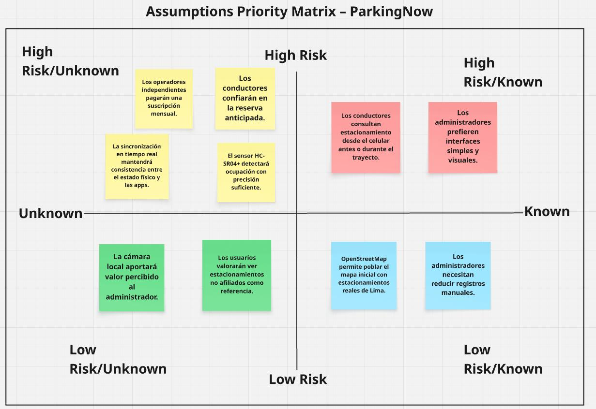
Nota. Elaboración propia (2026).
A partir de esta priorización, se consideran como supuestos de alto riesgo y alto nivel de incertidumbre los siguientes:
Las siguientes hipótesis se formulan a partir de la plantilla de hipótesis de Lean UX y buscan vincular de manera explícita un resultado de negocio esperado con un segmento de usuario, un beneficio observable y una funcionalidad concreta de la solución. Su propósito es orientar la validación progresiva del producto en iteraciones posteriores, sin asumir que estos resultados han sido demostrados en la presente entrega.
Creemos que reducir el tiempo de búsqueda de estacionamiento de los conductores urbanos en Lima Metropolitana se logrará si los conductores consiguen identificar espacios disponibles y reservarlos anticipadamente con una aplicación móvil que muestre disponibilidad en tiempo real y permita la reserva antes de llegar al destino.
Sabremos que estamos en lo correcto cuando veamos que al menos el 40% de los usuarios completa una reserva exitosa en menos de 5 minutos desde el inicio de la búsqueda y que una mayoría de usuarios valida que redujo recorridos innecesarios para encontrar estacionamiento.
Creemos que mejorar la tasa de ocupación de los estacionamientos independientes afiliados se logrará si los administradores consiguen mayor visibilidad digital de sus espacios y captación de demanda con una plataforma que exponga su disponibilidad al conductor y permita la gestión digital de reservas.
Sabremos que estamos en lo correcto cuando veamos un incremento de al menos 15% en la cantidad de reservas completadas de los estacionamientos afiliados durante el periodo de validación y retroalimentación positiva de los operadores respecto al impacto de la plataforma en su nivel de ocupación.
Creemos que incrementar la confianza del conductor en la disponibilidad mostrada por la plataforma se logrará si los conductores consiguen percibir consistencia entre la información digital y el estado real del espacio con una solución conectada a un nodo IoT que actualice automáticamente el estado de ocupación.
Sabremos que estamos en lo correcto cuando veamos que al menos el 80% de los usuarios que completan reservas reporta satisfacción con la correspondencia entre el espacio mostrado como disponible y el espacio efectivamente encontrado al llegar al estacionamiento.
Creemos que reducir la carga operativa manual del administrador de estacionamiento se logrará si los administradores consiguen centralizar el monitoreo de ocupación, reservas y eventos operativos con un panel web conectado al estado actualizado de los espacios y al historial generado por el nodo IoT.
Sabremos que estamos en lo correcto cuando veamos que al menos el 70% de los administradores participantes reporta una disminución significativa en el uso de registros manuales y una mejora en su capacidad de supervisar la operación diaria desde un único canal digital.
Creemos que facilitar la afiliación progresiva de estacionamientos independientes a la plataforma se logrará si los operadores consiguen percibir beneficios claros de visibilidad, control operativo y potencial incremento de demanda con una solución accesible, de bajo costo relativo y sencilla de implementar en negocios de pequeña escala.
Sabremos que estamos en lo correcto cuando veamos que al menos el 60% de los operadores que participan en etapas iniciales de validación expresa intención de mantener el servicio, y que una parte de ellos manifiesta disposición a recomendar la solución a otros operadores.
Creemos que lograr una detección confiable del estado de ocupación de los espacios se logrará si el sistema consigue distinguir de forma consistente entre espacio libre y espacio ocupado con sensores ultrasónicos HC-SR04+ conectados a un nodo ESP32 con lógica local de validación y envío de eventos.
Sabremos que estamos en lo correcto cuando veamos que, durante las pruebas del prototipo, el nodo IoT alcanza una precisión mayor al 90% en la detección del estado de los espacios y mantiene bajos niveles de falsos positivos y falsos negativos en condiciones normales de operación.
A continuación se presenta el Lean UX Canvas elaborado para el proyecto, como síntesis visual de los principales elementos del proceso Lean UX: el problema de negocio identificado, los segmentos priorizados, los beneficios esperados, las hipótesis centrales y los aprendizajes prioritarios que orientan el desarrollo del producto.
Figura 2
Lean UX Canvas de ParkingNow para el dominio de gestión de estacionamientos urbanos en Lima Metropolitana
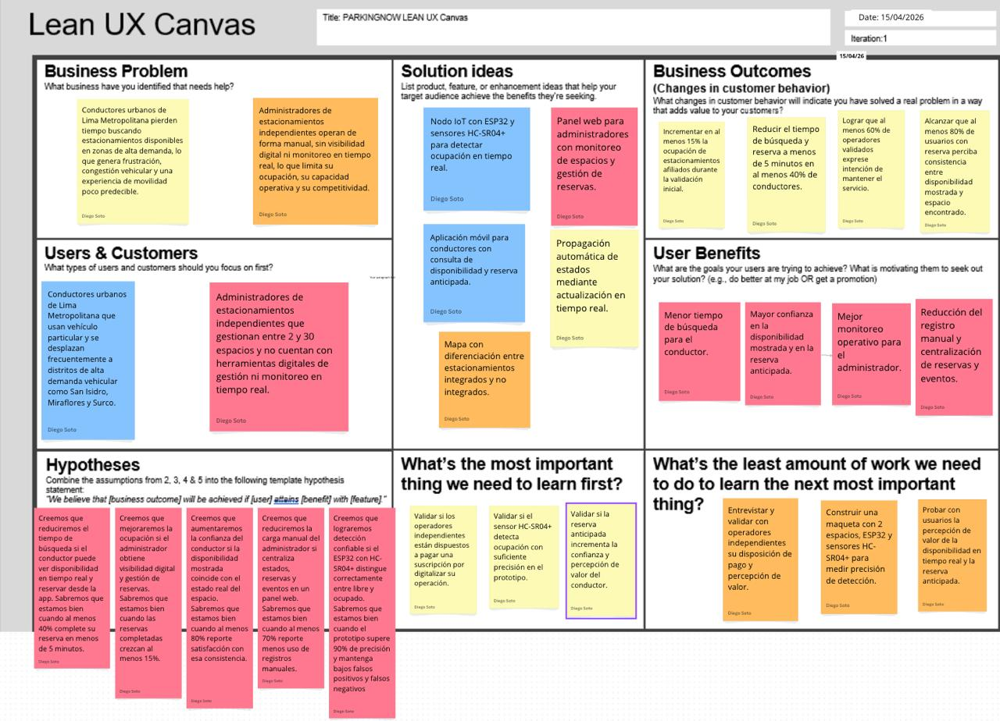
Nota. Elaboración propia (2026). Iteración 1.
Según la Figura 2, el Lean UX Canvas identifica como problema central la desconexión entre el estado físico real de los espacios y los canales digitales de información. Esta brecha afecta tanto a conductores urbanos, que pierden tiempo buscando disponibilidad, como a administradores independientes, que operan sin visibilidad ni herramientas digitales.
Las ideas de solución se articulan en torno a una plataforma distribuida con sensado IoT, reservas anticipadas mediante aplicación móvil y un panel web de monitoreo para el operador. Los business outcomes priorizan la mejora en la ocupación de los estacionamientos integrados y la reducción del tiempo de búsqueda del conductor, mientras que los user benefits se centran en la confianza, la previsibilidad y la mejora operativa.
El aprendizaje prioritario a contrastar en las primeras iteraciones consiste en determinar si la disponibilidad respaldada por el nodo IoT reduce efectivamente el tiempo de búsqueda del conductor y si la reserva anticipada incrementa su percepción de valor. Estos elementos deben entenderse como hipótesis iniciales sujetas a validación, y no como resultados demostrados en la presente fase.
Enlace al canvas: https://canva.link/jukpsaamxd32d5t
Los segmentos objetivo de ParkingNow han sido identificados a partir del análisis del dominio del problema asociado a la gestión de estacionamientos urbanos en Lima Metropolitana. La solución se orienta a dos grupos con necesidades distintas pero complementarias: por un lado, los conductores urbanos que requieren encontrar y reservar estacionamiento de manera más eficiente; por otro, los administradores de estacionamientos independientes que necesitan mejorar la gestión operativa y la visibilidad de sus espacios. A continuación, se presenta la descripción de cada segmento, junto con sus características demográficas e información estadística de sustento.
Descripción:
Este segmento comprende a personas que se movilizan habitualmente en vehículo particular por Lima Metropolitana y que enfrentan de forma recurrente la dificultad de encontrar estacionamiento disponible en zonas de alta demanda vehicular. Constituyen los usuarios finales de la aplicación móvil de ParkingNow, mediante la cual podrán consultar disponibilidad, ubicar estacionamientos cercanos en el mapa, realizar reservas anticipadas y gestionar su historial de uso.
Características demográficas:
Información estadística de sustento:
En Lima Metropolitana circulan aproximadamente 1.8 millones de automóviles, de los cuales el 11.2% de la población los utiliza para desplazarse al trabajo y el 7.9% para estudiar (El Comercio, 2024). Asimismo, el 51.1% de los encuestados en Lima y Callao considera necesario incrementar los estacionamientos en vía pública, porcentaje que asciende al 70.1% en el sector socioeconómico A, lo que evidencia una alta percepción de insuficiencia en la oferta actual (Lima Cómo Vamos, 2024). A ello se suma que el informe Cities in Motion 2025 ubicó a Lima en el puesto 176 en movilidad urbana a nivel mundial, reflejando un entorno crítico para el desplazamiento vehicular (Infobae, 2025a). Finalmente, el flujo vehicular nacional acumula 27 meses de crecimiento consecutivo, con un incremento de 3.5% acumulado entre agosto de 2024 y julio de 2025 (AAP, 2025), lo que proyecta una presión creciente sobre la infraestructura de estacionamiento en los próximos años.
Descripción:
Este segmento comprende a dueños y administradores de estacionamientos independientes de Lima Metropolitana que operan entre 2 y 30 espacios, generalmente bajo esquemas manuales o semi-formales y sin herramientas digitales integradas de gestión. Constituyen el cliente pagador principal de ParkingNow y los usuarios directos del panel web de la plataforma, desde el cual podrán registrar su local, configurar sus espacios, monitorear el estado de ocupación en tiempo real, gestionar reservas activas y consultar el historial de eventos generados por el nodo IoT instalado en su establecimiento.
Características demográficas:
Información estadística de sustento:
Lima presenta una informalidad persistente en la gestión del estacionamiento urbano. Reportes periodísticos recientes muestran que, en distintos distritos, la presencia de parqueadores informales y el uso no regulado del espacio urbano han debilitado la operación formal del sector (Infobae, 2024). Esta situación evidencia la existencia de una oferta fragmentada, con baja visibilidad digital y escaso acceso a herramientas tecnológicas de gestión.
Asimismo, el INEI publicó en 2026 el informe Región Lima: Estructura Empresarial, 2024, en el que se observa que las micro y pequeñas empresas del sector servicios representan una parte importante del tejido empresarial regional y enfrentan mayores limitaciones de formalización y digitalización que empresas de mayor escala (INEI, 2026). Este contexto resulta consistente con el perfil de los estacionamientos independientes, que suelen operar con recursos limitados y baja incorporación tecnológica. Desde una perspectiva técnica y económica, la literatura reciente sobre Smart Parking respalda la pertinencia de este segmento como usuario objetivo, ya que soluciones basadas en ESP32 y sensores ultrasónicos permiten implementar sistemas de monitoreo de ocupación con costos accesibles y una complejidad técnica adecuada para contextos de pequeña escala (Ruiz Cruzado et al., 2026; Bustamante & Hidrobo, 2024).
Estos segmentos fueron priorizados porque representan, respectivamente, al usuario final que demanda disponibilidad confiable de estacionamiento y al cliente pagador que obtiene valor operativo y económico directo de la solución. En conjunto, ambos permiten articular la propuesta de valor de ParkingNow, donde la capa IoT valida la disponibilidad física, la aplicación móvil reduce la incertidumbre del conductor y el panel web mejora la gestión del administrador.
En este capítulo se desarrolla el proceso de levantamiento y análisis de requisitos para ParkingNow, con el objetivo de traducir las necesidades y expectativas de los segmentos involucrados en un conjunto coherente de requisitos para la solución propuesta. Para ello, se analiza primero el contexto competitivo del mercado en el que participará la startup, y posteriormente se profundizará en la obtención y análisis de información proveniente de los usuarios y del dominio del problema.
ParkingNow compite en el mercado de soluciones digitales para la gestión y búsqueda de estacionamientos urbanos en Lima Metropolitana. Para el presente análisis se han considerado como competidores relevantes a Quadra, ParkGo y Apparka. En esta clasificación, Quadra y ParkGo se consideran competidores directos, ya que su propuesta visible al mercado se centra en conectar digitalmente la oferta y demanda de espacios de estacionamiento o cocheras. Por su parte, Apparka se considera un competidor indirecto relevante, debido a que también compite en la experiencia digital del conductor, aunque lo hace dentro de una red formal, cerrada y propia de estacionamientos perteneciente al grupo Los Portales. En este contexto, ParkingNow participa en el mismo dominio funcional y busca diferenciarse por una propuesta orientada a respaldar la disponibilidad reportada mediante sensado físico IoT y una arquitectura adaptada a operadores independientes de pequeña escala.
Quadra es una empresa peruana que opera como marketplace y ecosistema digital de estacionamientos, conectando conductores con cocheras privadas, emprendedores y empresas mediante aplicaciones móviles y un componente SaaS. Su comunicación pública destaca reservas, tickets digitales, monitoreo de disponibilidad en tiempo real, automatización, integración con add-ons de hardware y planes empresariales orientados a optimizar ocupación y accesos. Sin embargo, en la información pública revisada no se evidencia una propuesta centrada explícitamente en sensado físico por espacio con trazabilidad end-to-end orientada a operadores independientes de 2 a 30 espacios, como la planteada por ParkingNow.
ParkGo es una aplicación peruana creada por Katherinne Oyarce que conecta conductores con cocheras disponibles y busca reducir el tiempo necesario para encontrar estacionamiento. Una nota reciente de El Comercio indica que la aplicación suma 4,500 usuarios en Lima Metropolitana, Arequipa, Cusco y Huarmey, y que ha observado un crecimiento del 40% en el último año. Su propuesta visible al mercado se centra en la conexión digital entre oferta y demanda de espacios, sin que en la información pública revisada se evidencie una capa de sensado físico del espacio equivalente a la propuesta por ParkingNow.
Apparka es la plataforma digital del grupo Los Portales orientada a la ubicación y gestión de estacionamientos dentro de su propia red. La memoria anual del grupo señala que APPARKA es de uso exclusivo en los estacionamientos de Los Portales y permite ubicar el estacionamiento más cercano, además de realizar pagos desde el celular (Los Portales, 2024). En consecuencia, compite en la experiencia del conductor dentro del mercado formal, pero no está orientada a operadores independientes de pequeña escala.
| Competitive Analysis Landscape | |||||
|---|---|---|---|---|---|
| ¿Por qué llevar a cabo este análisis? | Identificar las fortalezas, debilidades, oportunidades y amenazas de los principales competidores permite a ParkingNow delimitar su propuesta diferenciada en el mercado local: integrar detección física del estado del espacio con canales digitales de información y gestión, y enfocarse en operadores independientes de pequeña escala. | ||||
| (En la cabecera colocar por cada competidor nombre y logo) | ParkingNow |
Quadra |
ParkGo 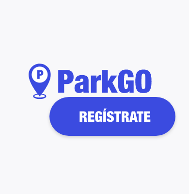 |
Apparka 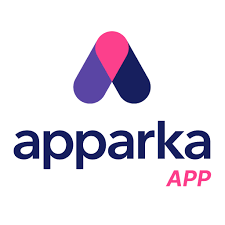 |
|
| Perfil | Overview | Startup tecnológica peruana con una propuesta de plataforma IoT distribuida, compuesta por app móvil para conductores, panel web para administradores independientes y un nodo IoT orientado a detectar ocupación y reflejarla digitalmente en tiempo real. | Empresa peruana con app para conductores, app para anfitriones/emprendedores y componente SaaS para negocios. Su propuesta visible incluye reservas, tickets digitales, monitoreo de disponibilidad, automatización y add-ons de hardware. | Aplicación peruana que conecta conductores con cocheras disponibles. La cobertura reportada comprende Lima Metropolitana, Arequipa, Cusco y Huarmey, con 4,500 usuarios y crecimiento anual del 40% según El Comercio. | Plataforma digital del grupo Los Portales para ubicar y pagar estacionamientos dentro de su propia red. Su uso está restringido a los estacionamientos del grupo. |
| Ventaja competitiva ¿Qué valor ofrece a los clientes? |
Disponibilidad respaldada por detección física IoT y propuesta adaptada a operadores independientes de pequeña escala con baja inversión tecnológica inicial. | Ofrece un ecosistema digital más amplio para marketplace y gestión, con reservas, tickets digitales, automatización y opciones empresariales. | Presenta tracción real reciente y una propuesta simple de conexión entre conductores y cocheras disponibles. | Cuenta con el respaldo financiero y reputacional de Los Portales y opera sobre una red consolidada de estacionamientos formales. | |
| Perfil de Marketing | Mercado objetivo | Conductores urbanos de Lima Metropolitana de 25 a 45 años y administradores de estacionamientos independientes de 2 a 30 espacios en distritos de alta demanda vehicular. | Conductores urbanos, propietarios de cocheras privadas, emprendedores y empresas que desean monetizar y gestionar espacios de estacionamiento. | Conductores urbanos que buscan cocheras disponibles y propietarios de espacios que desean rentabilizarlos. | Conductores urbanos y usuarios de la red formal de estacionamientos del grupo Los Portales. |
| Estrategias de marketing | Afiliación directa de operadores, propuesta de valor basada en disponibilidad respaldada por sensado físico, integración con OpenStreetMap para utilidad temprana y presencia digital en zonas de alta demanda. | Presencia web y aplicaciones para distintos perfiles, posicionamiento en monetización de cocheras y gestión digital del estacionamiento. | Cobertura mediática reciente y posicionamiento como solución práctica al problema de estacionar en la ciudad. | Marketing institucional y aprovechamiento de la red y marca del grupo Los Portales. | |
| Perfil de Producto | Productos & Servicios | App móvil para conductores, panel web para administradores, reserva anticipada, monitoreo de espacios y nodo IoT físico con sincronización de estados en tiempo real. | App para conductores, app para anfitriones/emprendedores, servicios empresariales, tickets digitales, reservas y funcionalidades SaaS con automatización. | App móvil para ubicar cocheras disponibles y conectar oferta y demanda de espacios. | Aplicación para ubicar estacionamientos y realizar pagos dentro de la red de Los Portales. |
| Precios & Costos | Modelo proyectado de suscripción mensual para operadores afiliados, con costo de entrada reducido y eventual costo inicial de instalación del nodo IoT. | Cuenta con un modelo para emprendedores con comisión por reserva exitosa y planes SaaS empresariales con costos mensuales e instalación. | La propuesta pública se sostiene en la intermediación entre conductores y cocheras; la nota periodística no detalla una estructura tarifaria técnica completa. | Las funciones de la app operan dentro del ecosistema comercial del grupo y sus servicios asociados de estacionamiento. | |
| Canales de distribución (Web y/o Móvil) |
Landing Page, Web App para administradores y Mobile App para conductores. | Web, app conductor, app empresario, app persona natural y oferta SaaS. | Aplicación móvil y presencia digital respaldada por cobertura periodística reciente. | Aplicación móvil y red física de estacionamientos del grupo Los Portales. | |
| Análisis SWOT | Fortalezas | Integración entre detección física del estado del espacio y actualización digital en tiempo real; arquitectura de bajo costo; enfoque específico en operadores independientes. | Ecosistema digital más desarrollado, automatización, marketplace activo y alternativas para emprendedores y empresas. | Tracción reciente visible, crecimiento y cobertura en más de una ciudad. | Respaldo financiero y operativo del grupo Los Portales y red consolidada de estacionamientos formales. |
| Debilidades | Prototipo académico en etapa inicial; red de afiliados por construir; dependencia de instalación física del nodo IoT en cada local. | En la información pública revisada no se evidencia una propuesta explícita de sensado físico por espacio orientada a operadores independientes pequeños como la de ParkingNow. | En la información pública revisada no se evidencia una capa de sensado físico del espacio equivalente a la propuesta por ParkingNow. | Limitado a la red formal de Los Portales; no orientado a operadores independientes de pequeña escala. | |
| Oportunidades | Alta informalidad del sector en Lima; crecimiento vehicular sostenido; oportunidad de entrada en operadores pequeños con baja digitalización. | Expansión del mercado de cocheras privadas y posible profundización tecnológica de su ecosistema. | Expansión territorial y fortalecimiento de propuesta con nuevos diferenciales tecnológicos. | Mayor integración con servicios del ecosistema de movilidad y crecimiento del uso de su red formal. | |
| Amenazas | Competidores con mayor tracción y recursos; posible replicación del modelo IoT; curva de adopción del hardware por parte de operadores con bajo perfil tecnológico. | Entrada de competidores con mayor diferenciación basada en sensado físico y mayor profundidad en integración operativo-digital. | Competencia creciente y necesidad de diferenciarse más allá del marketplace digital. | Competidores digitales más ágiles dirigidos a operadores independientes y restricciones propias de operar sobre una red cerrada. | |
A partir del análisis SWOT realizado en la sección anterior, se proponen las siguientes estrategias y tácticas preliminares para responder a las fortalezas de los competidores, aprovechar sus debilidades y actuar sobre las oportunidades y amenazas identificadas en el mercado de gestión de estacionamientos urbanos en Lima Metropolitana.
Estrategia 1: Diferenciación sostenida por disponibilidad respaldada físicamente
Esta estrategia responde a una debilidad observada en Quadra y ParkGo: en la información pública revisada no se evidencia una propuesta centrada explícitamente en sensado físico por espacio orientada a operadores independientes de pequeña escala. En ese escenario, ParkingNow puede diferenciarse al comunicar de forma explícita que la disponibilidad mostrada al conductor se encuentra respaldada por detección física del estado del espacio dentro de una arquitectura IoT adaptada al contexto operativo de este segmento.
Estrategia 2: Penetración directa en el segmento de operadores independientes
Esta estrategia aprovecha una oportunidad detectada para ParkingNow: la existencia de operadores pequeños con baja digitalización, poco atendidos por soluciones cerradas o por marketplaces más orientados a intermediación general. Mientras Apparka se concentra en la red de Los Portales y Quadra/ParkGo priorizan la conexión digital entre conductores y espacios disponibles, ParkingNow puede enfocarse de manera más directa en administradores de estacionamientos independientes de 2 a 30 espacios.
Estrategia 3: Construcción de utilidad temprana y red inicial mediante OpenStreetMap
Esta estrategia responde al riesgo inicial de contar con una red propia de afiliados todavía reducida. En etapas tempranas, ParkingNow puede disminuir ese problema utilizando OpenStreetMap para poblar el mapa con estacionamientos reales de Lima Metropolitana, diferenciando visualmente entre estacionamientos afiliados y no afiliados. Esta táctica permite ofrecer utilidad al conductor desde el primer uso y, al mismo tiempo, fortalecer la propuesta comercial frente a operadores potenciales.
Estrategia 4: Posicionamiento local frente a la crisis de movilidad
Esta estrategia aprovecha el contexto local de congestión vehicular y presión creciente sobre la infraestructura de estacionamiento en Lima. Frente a competidores con mayor tracción o respaldo empresarial, ParkingNow puede posicionarse como una solución local, práctica y enfocada en un problema cotidiano no resuelto para conductores y operadores independientes. La narrativa debe centrarse en relevancia local y educación del mercado, más que en promesas amplias de transformación urbana.
En esta sección se documenta el proceso de recolección de información primaria mediante entrevistas a representantes de los dos segmentos objetivo de ParkingNow: conductores urbanos de Lima Metropolitana y administradores de estacionamientos independientes. El objetivo es obtener datos cualitativos reales que permitan identificar necesidades, comportamientos, frustraciones y expectativas de cada segmento, como base para construir los arquetipos de usuario, los Empathy Maps, los User Journey Maps y, posteriormente, los User Stories del producto.
A continuación se presenta la relación de preguntas principales y complementarias diseñadas para cada segmento objetivo. Las preguntas fueron organizadas en bloques para asegurar consistencia entre entrevistas y permitir la comparación posterior de hallazgos. Estas se orientan a recolectar características demográficas (edad, género, distrito, estado civil, ocupación y familia) y características subjetivas (motivaciones, frustraciones, referentes de uso, dispositivos de preferencia, canales digitales de interacción y comportamiento actual), con el fin de contar con información suficiente para construir los arquetipos de usuario de ParkingNow.
¿Cuántos años tienes?
¿En qué distrito resides actualmente y cuál es tu estado civil?
¿Tienes hijos o personas a tu cargo?
¿Cuál es tu ocupación actual? ¿Trabajas, estudias o ambas cosas?
¿Tienes vehículo propio? ¿Con qué frecuencia lo usas para desplazarte por Lima?
¿Qué zonas de Lima visitas más frecuentemente con tu vehículo?
Cuando necesitas estacionar en una zona que no conoces bien, ¿cómo te preparas antes de salir? ¿Consultas algo en tu teléfono o simplemente vas?
¿Cuánto tiempo estimas que demoras en promedio en encontrar un espacio disponible en zonas como San Isidro, Miraflores o Surco?
¿Has llegado alguna vez a un estacionamiento y estaba completamente lleno? ¿Qué hiciste en ese momento?
¿Con qué frecuencia te ocurre no encontrar estacionamiento disponible al llegar a tu destino?
Si existiera una aplicación móvil que te mostrara en tiempo real qué estacionamientos cercanos tienen espacios libres antes de que llegues, ¿la usarías? ¿Qué necesitarías para confiar en esa información?
¿Estarías dispuesto a reservar un espacio desde tu teléfono antes de salir si eso te garantizara encontrar lugar al llegar?
¿Qué aplicaciones móviles usas con más frecuencia en tu día a día?
¿Usas Android o iOS? ¿Qué navegador usas habitualmente en tu celular?
¿Qué es lo que más te frustra al buscar estacionamiento en Lima?
¿Qué haces cuando no encuentras estacionamiento cerca de tu destino? ¿Das vueltas, cambias de plan o buscas transporte alternativo?
¿Qué tan importante es para ti saber que la disponibilidad mostrada en la app está respaldada por un sensor físico real, y no solo por datos ingresados manualmente por el dueño del estacionamiento?
¿Hay alguna app móvil que consideres muy bien hecha? ¿Qué es lo que más valoras de ella?
¿Qué haría que dejes de usar una app de estacionamiento después de probarla? ¿Y qué haría que la recomiendes a alguien?
¿Cuántos años tienes?
¿En qué distrito está ubicado tu estacionamiento?
¿Cuántos espacios tiene tu local actualmente?
¿Cuánto tiempo llevas administrándolo?
¿Operas solo o tienes personal de apoyo?
¿Cómo controlas actualmente qué espacios están ocupados y cuáles están libres? ¿Usas algún sistema o es completamente manual?
¿Cómo se enteran los conductores de que tu estacionamiento tiene espacios disponibles antes de llegar?
¿Puedes saber en tiempo real cuántos espacios tienes ocupados si no estás físicamente en el local? ¿Cómo lo resuelves?
¿Has tenido situaciones en que llegaron conductores esperando encontrar espacio y ya no había disponibilidad? ¿Cómo lo manejas?
¿Qué parte de tu operación diaria te consume más tiempo o te genera más errores?
Si hubiera una plataforma web donde pudieras publicar tu estacionamiento y los conductores de la zona pudieran verte y reservar en línea, ¿te interesaría afiliar tu local? ¿Qué te preocuparía?
¿Estarías dispuesto a instalar un sensor pequeño por espacio para que la disponibilidad se actualice automáticamente en la plataforma? ¿Qué condiciones necesitarías para aceptarlo?
¿Desde qué dispositivo prefieres gestionar tu negocio: computadora, tablet o celular? ¿Cuál usas más en tu día a día?
¿Usas alguna herramienta digital actualmente para gestionar tu negocio? ¿Cuál y para qué?
¿Qué es lo que más te frustra del día a día en la gestión de tu local?
¿Qué beneficio concreto necesitarías ver para considerar que vale la pena digitalizar tu operación? ¿Más reservas, menos trabajo manual o ambas cosas?
¿Has intentado antes usar alguna app o sistema para gestionar tu estacionamiento? ¿Qué pasó?
¿Qué necesitarías ver o comprobar antes de confiar en una plataforma web nueva para digitalizar tu negocio?
¿Recomendarías la plataforma a otros administradores si te funciona bien? ¿Bajo qué condiciones?
En esta sección se presenta el registro de las entrevistas realizadas a representantes de los dos segmentos objetivo de ParkingNow: conductores urbanos de Lima Metropolitana y administradores de estacionamientos independientes. Hasta el momento, se cuenta con cuatro entrevistas registradas en video, dos por cada segmento, y quedan dos entrevistas pendientes por realizar para completar el mínimo de tres entrevistas por segmento exigido por el curso.
Cada entrevista incluye los datos del entrevistado, una captura de pantalla del video correspondiente, el enlace al video editado publicado en Microsoft Stream, con el timing de inicio y duración de cada entrevista, y un resumen descriptivo que recoge las respuestas principales del entrevistado. Dicho resumen documenta características objetivas —edad, género, distrito, ocupación y dispositivo de preferencia— y características subjetivas —motivaciones, frustraciones, hábitos de uso, referentes digitales y condiciones de confianza—, con el fin de que cada rasgo del arquetipo que se construirá en la sección 2.3 pueda trazarse directamente a los datos recolectados en estas entrevistas.
Las entrevistas fueron conducidas siguiendo el diseño establecido en la sección 2.2.1, respetando el orden general de bloques: perfil demográfico, comportamiento actual, expectativas y motivaciones, perfil tecnológico y cierre. Todos los videos deberán consolidarse posteriormente en un único archivo y publicarse en Microsoft Stream/Clipchamp como evidencia final del proceso de needfinding.
URL del video de entrevistas en general: https://upcedupe-my.sharepoint.com/:v:/g/personal/u202214477_upc_edu_pe/IQCMBDZdyMVAQKh_NrFheDDEAfbJMIyo3lVGDKNSnQugT3I?e=Amq8Ep
A continuación se registran las entrevistas realizadas a conductores urbanos de Lima Metropolitana que utilizan vehículo propio con frecuencia y se han enfrentado de forma recurrente al problema de encontrar estacionamiento disponible en zonas de alta demanda vehicular.
| Campo | Detalle |
|---|---|
| Imagen | 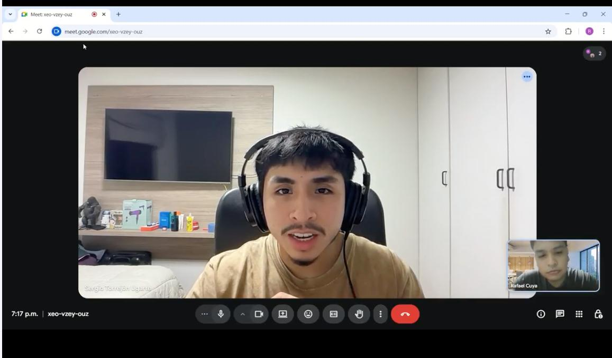 |
| Entrevistado | Carlos Mendoza Ríos |
| Entrevistador | Rafael Cuya |
| Sexo | Masculino |
| Edad | 29 años |
| Distrito | Surquillo |
| Timing | Empieza en el minuto 0 y finaliza en el minuto 3:46 |
| Link | https://upcedupe-my.sharepoint.com/:v:/g/personal/u201913495_upc_edu_pe/ IQDfA6xK3Jw7QZ7W0eebx3aFAagksUHeYQaJ728iQIWTCug?e=WGB90a |
| Resumen | Analista de sistemas que utiliza su auto todos los días para desplazarse a su trabajo en San Isidro y también por zonas como Miraflores y Surco. Señala que suele demorar entre 15 y 25 minutos en encontrar estacionamiento en horas punta y que, actualmente, solo utiliza Google Maps para planificar la ruta, sin contar con una herramienta específica para validar disponibilidad antes de llegar. Usa Android con Chrome y toma como referencia aplicaciones rápidas, directas y sin pasos innecesarios como Yape. Manifiesta una alta disposición a usar ParkingNow siempre que la información esté realmente actualizada y respaldada por sensor físico, y precisa que el proceso de reserva debería resolverse en un máximo de tres pasos. Indica además que dejaría de usar la aplicación si falla en su primera experiencia de uso. |
| Campo | Detalle |
|---|---|
| Imagen | |
| Entrevistado | Valeria Torres Chávez |
| Entrevistador | Gabriel Lapa |
| Sexo | Femenino |
| Edad | 34 años |
| Distrito | La Molina |
| Timing | Empieza en el minuto 3:57 y finaliza en el minuto 8:00 |
| Link | https://upcedupe-my.sharepoint.com/:v:/g/personal/u202216831_upc_edu_pe/ IQBmINpKs2cAS7y94oJga8wuAUus6CMuAxiaSWCAPP48z4U?e=KN09dj |
| Resumen | Ejecutiva de ventas que se moviliza casi todos los días por distritos como Miraflores, San Borja, Surco y San Isidro debido a sus reuniones de trabajo. Reporta que puede tardar entre 20 y 30 minutos en encontrar estacionamiento en zonas de alta demanda, y destaca que su principal frustración no es solo el tiempo perdido, sino la incertidumbre de no saber si hallará un espacio disponible al llegar. Usa iPhone con Safari y valora experiencias digitales claras y predecibles como la de Uber. Considera especialmente valiosa la posibilidad de reservar desde el celular antes de reuniones importantes, e incluso afirma que estaría dispuesta a pagar por esa garantía. Señala que la validación por sensor físico sería decisiva para confiar en la solución y que abandonaría la aplicación si esta falla en la primera experiencia de uso. |
| Campo | Detalle |
|---|---|
| Imagen | |
| Entrevistado | Rodrigo Palomino Vega |
| Entrevistador | Diego Ulises Soto Quispe |
| Sexo | Masculino |
| Edad | 25 años |
| Distrito | San Miguel |
| Timing | Empieza en el minuto 8:01 y finaliza en el minuto 14:04 |
| Link | https://upcedupe-my.sharepoint.com/:v:/g/personal/u202214477_upc_edu_pe/IQDG-M0KMNOLT7EXxhtoBLxbAWlQHej7X4No4ENvfhibYtQ?e=zwbgwM |
| Resumen | Docente universitario de 25 años, residente en San Miguel, soltero y sin hijos ni personas a su cargo, que se moviliza en auto aproximadamente tres veces por semana hacia distritos como Miraflores y San Isidro por motivos laborales. Indica que estacionar en esas zonas es especialmente problemático y que suele salir con anticipación porque puede tardar entre 20 y 40 minutos en encontrar espacio, llegando incluso a perder compromisos cuando no logra estacionar a tiempo. Usa Android con Chrome y recurre a Google Maps solo para la ruta, ya que no le ofrece información sobre disponibilidad de estacionamientos. Su principal frustración es el tiempo improductivo que pierde buscando dónde dejar el vehículo. Señala que usaría una app móvil con disponibilidad en tiempo real si esta demuestra ser confiable desde los primeros usos, y considera que la validación mediante sensor físico sería clave para creer en la exactitud de la información. También afirma que la posibilidad de reservar desde el celular antes de salir sería especialmente valiosa en actividades programadas como sus clases. |
A continuación se registran las entrevistas realizadas a propietarios y administradores de estacionamientos independientes de Lima Metropolitana que operan sus locales de forma manual o semi-formal, sin herramientas digitales de gestión integradas.
| Campo | Detalle |
|---|---|
| Imagen | 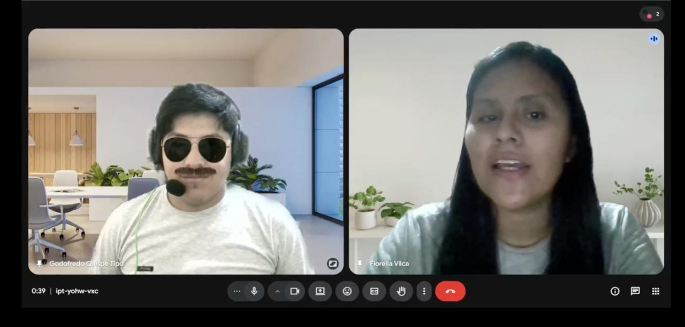 |
| Entrevistado | Jorge Huamán Castillo |
| Entrevistador | Fiorella Vilca |
| Sexo | Masculino |
| Edad | 47 años |
| Distrito | Miraflores |
| Timing | Empieza en el minuto 14:05 y finaliza en el minuto 18:42 |
| Link | https://upcedupe-my.sharepoint.com/:v:/g/personal/u20211e417_upc_edu_pe/IQDuzAnkPRnxQ4_XrYnL-4-hAZw8677ishtmZUsYZHYQN9A?e=S1pabG |
| Resumen | Administra un estacionamiento de 12 espacios en Miraflores con una operación de control manual y apoyo parcial de un trabajador. Explica que no cuenta con visibilidad remota del estado del local más allá de llamadas o mensajes por WhatsApp, y que una de sus principales dificultades es depender de su presencia física para mantener el control de entradas, salidas y cobros. Gestiona el negocio principalmente desde el celular y utiliza herramientas básicas como WhatsApp y Yape. Muestra interés en afiliar su local a una plataforma digital si esta le ayuda a captar más clientes, pero condiciona su adopción a que los sensores no requieran obras complejas y a que la inversión demuestre resultados concretos antes de asumir un pago recurrente. |
| Campo | Detalle |
|---|---|
| Imagen | |
| Entrevistado | Leonardo Delgado Arriola |
| Entrevistador | Elverth Vásquez Villalobos |
| Sexo | Masculino |
| Edad | 20 años |
| Distrito | San Miguel |
| Timing | Empieza en el minuto 18:42 y finaliza en el minuto 23:38 |
| Link | https://upcedupe-my.sharepoint.com/:v:/g/personal/u202213070_upc_edu_pe/ IQBa0FFhoUqESLmHb8p2sG1UAdDEoM7wCEbIQnglKEjcwtA?e=fSiGYK |
| Resumen | Administra un estacionamiento en San Miguel con 10 espacios y aproximadamente 2 años de experiencia en la operación del negocio. Señala que la gestión actual es completamente manual y que necesita permanecer presente la mayor parte del tiempo para mantener el control de entradas, salidas y cobros. Expresa interés en una plataforma web que le permita ordenar mejor la operación y atraer más clientes, siempre que sea intuitiva, fácil de usar y de bajo costo. Indica que preferiría gestionar el negocio desde el celular, que actualmente utiliza herramientas básicas como WhatsApp y Yape, y que consideraría instalar sensores si alguien le explica claramente su funcionamiento y si la solución no implica complejidad técnica innecesaria. |
| Campo | Detalle |
|---|---|
| Imagen | |
| Entrevistado | Patricia Quispe Alvarado |
| Entrevistador | Diego Ulises Soto Quispe |
| Sexo | Femenino |
| Edad | 30 años |
| Distrito | San Isidro |
| Timing | Empieza en el minuto 23:39 y finaliza en el minuto 29:20 |
| Link | https://upcedupe-my.sharepoint.com/:v:/g/personal/u202214477_upc_edu_pe/IQArovlfxs-9TZtujH0tXWruAf3RwGMXJwEjFWtLnq_8lzw?e=ynCJIt |
| Resumen | Administradora de estacionamiento de 30 años, ubicada en San Isidro, responsable de un local con 20 espacios y con cinco años de experiencia en la operación del negocio. Señala que actualmente controla la disponibilidad mediante una pizarra física y coordinación por WhatsApp con sus trabajadores, lo que provoca desactualizaciones frecuentes, reservas cruzadas y conflictos con clientes cuando la información no coincide con la realidad. Indica que una de sus mayores frustraciones es el desorden de las reservas manuales, especialmente cuando los clientes llegan y el espacio ya está ocupado o cuando debe resolver errores generados por falta de actualización o comunicación. Utiliza herramientas como WhatsApp, Google Sheets y aplicaciones bancarias, y manifiesta que le interesa una plataforma web simple que le permita ver en tiempo real lo que sucede en su local tanto desde el celular como desde la computadora. Considera especialmente valiosa la instalación de sensores por espacio para automatizar la actualización de disponibilidad y afirma que confiaría en la solución si puede verla funcionando en vivo en su propio local. También señala que la recomendaría a otros administradores si el sistema funciona correctamente durante los primeros treinta días. |
En esta sección se presenta el análisis de las seis entrevistas realizadas, tres por cada segmento objetivo. A partir de las respuestas recopiladas se identifican las características objetivas y subjetivas más representativas de cada segmento, sustentadas con proporciones observadas dentro de la muestra entrevistada. Este análisis constituye la base directa para la construcción de los arquetipos de usuario en la sección 2.3.
Edad y género
Los tres entrevistados tienen entre 29 y 41 años, con un promedio aproximado de 35 años. Dos de los tres entrevistados son hombres, equivalente al 67% (2/3), y una de las tres entrevistadas es mujer, equivalente al 33% (1/3). Este rango corresponde a población económicamente activa que se desplaza con frecuencia en vehículo propio por Lima Metropolitana. Dentro de la muestra analizada, residen en Surquillo, La Molina y San Miguel.
Estado civil y carga familiar
Dos de los tres entrevistados están casados, equivalente al 67% (2/3), y uno es soltero, equivalente al 33% (1/3). Asimismo, dos de los tres entrevistados, equivalente al 67% (2/3), tienen hijos o personas a su cargo, lo que sugiere que la mayoría combina sus desplazamientos laborales con responsabilidades familiares adicionales.
Ocupación
En los tres casos entrevistados, equivalente al 100% (3/3), se identificó actividad laboral estable. Las ocupaciones corresponden a un analista de sistemas, una ejecutiva de ventas y un docente universitario. En todos los casos, equivalente al 100% (3/3), el vehículo aparece como un medio importante para cumplir sus responsabilidades laborales y desplazarse hacia zonas de alta demanda vehicular.
Frecuencia de uso del vehículo
Los tres entrevistados, equivalente al 100% (3/3), usan su vehículo con frecuencia. Un caso corresponde a uso diario de lunes a viernes, otro a uso casi diario y un tercero a uso tres veces por semana. En todos los casos, equivalente al 100% (3/3), el auto forma parte importante de su rutina de movilidad.
Zonas de desplazamiento
En los tres casos, equivalente al 100% (3/3), se repiten San Isidro y Miraflores como zonas de desplazamiento frecuentes. En dos de los tres casos, equivalente al 67% (2/3), también aparece Surco. Estas zonas coinciden con distritos de alta demanda vehicular y alta presión sobre el estacionamiento.
Dispositivo y navegador
Dos de los tres entrevistados, equivalente al 67% (2/3), usan Android con Chrome, mientras que una entrevistada, equivalente al 33% (1/3), usa iPhone con Safari. En la totalidad de la muestra, equivalente al 100% (3/3), el smartphone es el dispositivo principal para aplicaciones de movilidad y servicios.
Comportamiento actual al buscar estacionamiento
En los tres casos entrevistados, equivalente al 100% (3/3), no se identificó una herramienta que les informe de manera anticipada sobre la disponibilidad real de estacionamiento antes de llegar. Dos entrevistados, equivalente al 67% (2/3), usan Google Maps o Waze para planificar la ruta o el tráfico, mientras que una entrevistada, equivalente al 33% (1/3), reconoce que normalmente llega a la zona y busca directamente. Sin embargo, en los tres casos, equivalente al 100% (3/3), se confirma que las herramientas actuales no resuelven el problema de disponibilidad real de espacios.
Tiempo promedio de búsqueda
En los tres casos, equivalente al 100% (3/3), se reportan tiempos de búsqueda superiores a 15 minutos en zonas de alta demanda. Las respuestas oscilan entre 15 y 40 minutos, con un caso extremo de 45 minutos sin encontrar espacio. Esto evidencia que la búsqueda de estacionamiento representa una pérdida significativa de tiempo para este segmento.
Frecuencia del problema
En toda la muestra, equivalente al 100% (3/3), el problema aparece de forma recurrente. Dos entrevistados, equivalente al 67% (2/3), indican que lo viven varias veces por semana, mientras que un tercero, equivalente al 33% (1/3), lo asocia a la mayoría de sus visitas a zonas como Miraflores. Esto sugiere que no se trata de un evento aislado, sino de una fricción habitual en su experiencia de movilidad.
Reacción ante la falta de disponibilidad
En los tres casos, equivalente al 100% (3/3), la primera reacción consiste en dar vueltas buscando una alternativa cercana. Los tres entrevistados, equivalente al 100% (3/3), contemplan luego el uso de estacionamientos de pago como segunda opción. Además, los tres casos, equivalente al 100% (3/3), mencionan alternativas adicionales cuando la búsqueda falla por completo, como tomar transporte público, usar taxi o replantear el desplazamiento.
Disposición a usar una app móvil de disponibilidad en tiempo real
En los tres casos, equivalente al 100% (3/3), se observa disposición a usar una aplicación móvil que muestre disponibilidad en tiempo real. Dos entrevistados, equivalente al 67% (2/3), lo afirman de manera directa e inmediata, mientras que un tercero, equivalente al 33% (1/3), expresa cautela inicial, aunque también muestra apertura si la solución demuestra ser confiable.
Disposición a reservar desde el celular
Los tres entrevistados, equivalente al 100% (3/3), indican que reservarían un espacio desde el celular si eso les garantizara disponibilidad al llegar. Sin embargo, esta disposición está condicionada a que el proceso sea rápido, claro y simple, especialmente en contextos de trabajo o compromisos con horario fijo.
Importancia del sensor físico para la confianza
En toda la muestra, equivalente al 100% (3/3), el sensor físico aparece como un factor relevante de confianza. Los entrevistados distinguen claramente entre una disponibilidad declarada manualmente y una disponibilidad respaldada por detección física del estado del espacio. Este hallazgo refuerza el valor diferencial de la propuesta IoT de ParkingNow.
Aplicaciones móviles de referencia
En la muestra aparecen de forma recurrente aplicaciones como Google Maps, Waze, Rappi, Uber, Yape y apps bancarias. En cuanto a referentes de experiencia, los entrevistados valoran aplicaciones que sean simples, rápidas, predecibles y funcionales. Este patrón es importante para las decisiones de UX del producto.
Principales frustraciones
La pérdida de tiempo aparece en los tres casos, equivalente al 100% (3/3), como una frustración central. Además, en los tres casos, equivalente al 100% (3/3), también se identifica incertidumbre respecto a si encontrarán o no un espacio disponible al llegar. Esta combinación de tiempo perdido e incertidumbre genera estrés y afecta negativamente actividades laborales o compromisos personales.
Condición de abandono de la app
En los tres casos, equivalente al 100% (3/3), se observa una tolerancia muy baja al error. Todos señalan, con distintos matices, que una primera falla importante en la disponibilidad mostrada sería suficiente para abandonar la aplicación. Esto implica que la confianza inicial será crítica para la adopción.
Los conductores urbanos entrevistados comparten un perfil relativamente homogéneo: adultos económicamente activos, usuarios frecuentes de vehículo particular y visitantes habituales de distritos con alta demanda vehicular, como Miraflores, San Isidro y Surco. En la muestra analizada, el problema de estacionamiento aparece de forma recurrente, con tiempos de búsqueda que superan de manera consistente los 15 minutos, y sin acceso a herramientas que anticipen la disponibilidad real antes de llegar.
Asimismo, se observa disposición a adoptar una app móvil de estacionamiento, siempre que la información mostrada sea confiable y esté respaldada por un mecanismo físico verificable. Dentro de esta muestra, el sensor IoT aparece como un elemento con potencial para generar confianza, mientras que la tolerancia al error en la primera experiencia de uso es muy baja. En consecuencia, la promesa de valor para este segmento debe centrarse en confiabilidad, rapidez y simplicidad.
Edad y género
Los tres entrevistados tienen entre 20 y 47 años, con un promedio aproximado de 35 años. Dos de los tres entrevistados son hombres, equivalente al 67% (2/3), y una es mujer, equivalente al 33% (1/3). Este rango refleja la presencia tanto de administradores jóvenes vinculados a negocios familiares como de operadores con mayor experiencia en el sector.
Tamaño y antigüedad del local
Los estacionamientos entrevistados tienen entre 10 y 20 espacios, con un promedio aproximado de 14 espacios. El tiempo de operación varía entre 2 y 9 años, con un promedio aproximado de 5 años. En los tres casos, equivalente al 100% (3/3), operan en distritos urbanos con actividad vehicular relevante, específicamente Miraflores, San Isidro y San Miguel.
Personal de apoyo
La estructura operativa es pequeña y varía entre apoyo familiar, apoyo parcial y apoyo por turnos. Un caso, equivalente al 33% (1/3), opera con apoyo eventual de un familiar, otro, equivalente al 33% (1/3), cuenta con un trabajador y otro, equivalente al 33% (1/3), con dos trabajadores en turnos distintos. En todos los casos, equivalente al 100% (3/3), la coordinación sigue siendo mayormente informal.
Dispositivo preferido para gestión
En los tres casos, equivalente al 100% (3/3), el celular aparece como dispositivo principal o prioritario de gestión. Dos entrevistados, equivalente al 67% (2/3), dependen principalmente de este medio, mientras que una entrevistada, equivalente al 33% (1/3), complementa su uso con laptop. Esto sugiere que la solución debe priorizar accesibilidad, claridad y buen funcionamiento en entorno móvil.
Herramientas digitales actuales
En los tres casos, equivalente al 100% (3/3), se usa WhatsApp como herramienta digital básica de coordinación. Dos casos, equivalente al 67% (2/3), usan además Yape para pagos, y un caso, equivalente al 33% (1/3), utiliza Google Sheets para control básico e Instagram de forma ocasional. No se identificó un sistema digital formal de gestión de estacionamientos en uso activo dentro de la muestra entrevistada.
Sistema de control de espacios
En los tres casos, equivalente al 100% (3/3), el control de espacios sigue siendo manual o semimanual. Se utilizan cuadernos, pizarra física o registros directos sin automatización, lo que evidencia una baja digitalización operativa.
Visibilidad remota de la operación
En toda la muestra, equivalente al 100% (3/3), se observa ausencia de visibilidad remota real. Cuando el administrador no está físicamente en el local, depende de llamadas, mensajes o de terceros para conocer el estado del negocio. Esta dependencia aparece como una fuente importante de fricción.
Conductores llegando sin espacio disponible
Los tres entrevistados, equivalente al 100% (3/3), reportan situaciones en las que llegan conductores esperando encontrar espacio y este ya no se encuentra disponible. Esto genera incomodidad, pérdida de clientes y, en un caso, incluso problemas con reservas informales mal gestionadas.
Mayor fuente de errores operativos
En los tres casos, equivalente al 100% (3/3), la operación manual aparece como origen de la carga operativa y de los errores cotidianos. Dos entrevistados, equivalente al 67% (2/3), destacan específicamente la necesidad de presencia constante para mantener el control del negocio, mientras que una entrevistada, equivalente al 33% (1/3), señala de forma más específica el desorden en reservas y coordinación manual entre trabajadores y canales de comunicación.
Interés en una plataforma web de gestión
En los tres casos, equivalente al 100% (3/3), se observa interés por una plataforma web de gestión y visibilidad digital. Sin embargo, este interés está condicionado a simplicidad de uso, claridad del beneficio y reducción real de problemas operativos. No hay rechazo al cambio, pero sí cautela.
Disposición a instalar sensores
En los tres casos, equivalente al 100% (3/3), existe apertura a instalar sensores, siempre que la instalación sea simple y no implique obras, electricista ni procesos complejos. Además, en los tres casos, equivalente al 100% (3/3), se requiere explicación clara, demostración o evidencia previa para confiar en esta incorporación tecnológica.
Experiencia previa con herramientas digitales de gestión
Dos de los tres entrevistados, equivalente al 67% (2/3), nunca han usado un sistema de gestión para estacionamientos, principalmente porque no conocían opciones ajustadas a negocios pequeños. El caso restante, equivalente al 33% (1/3), sí probó una solución anterior, pero la abandonó por complejidad y costo.
Beneficio principal esperado
Los beneficios esperados son concretos y operativos. Dos entrevistados, equivalente al 67% (2/3), mencionan como prioridad captar más clientes o dar mayor visibilidad al local, mientras que dos casos, equivalente al 67% (2/3), también enfatizan la necesidad de ordenar mejor la operación, reducir errores y ganar control en tiempo real. En conjunto, los tres administradores, equivalente al 100% (3/3), priorizan beneficios prácticos antes que atributos tecnológicos abstractos.
Condición para confiar en la plataforma
La confianza no depende de marketing general, sino de evidencia tangible. Un entrevistado, equivalente al 33% (1/3), necesita ver que otros negocios similares ya la usan con buenos resultados, otro, equivalente al 33% (1/3), requiere explicación clara y acompañamiento, y una entrevistada, equivalente al 33% (1/3), necesita una demostración en vivo. Esto sugiere que la adopción inicial dependerá de prueba práctica, acompañamiento y validación visible.
Los administradores entrevistados comparten un perfil operativo relativamente homogéneo: propietarios o gestores de locales pequeños o medianos, con una operación todavía fuertemente manual y con baja integración tecnológica. En la muestra analizada, se observa dependencia de la presencia física del dueño o de mecanismos informales de coordinación para conocer el estado del negocio en tiempo real.
También se observa apertura a digitalizar la operación, pero esta está claramente condicionada a simplicidad de instalación, bajo costo de entrada y evidencia tangible de valor. Dentro de esta muestra, el sensor IoT es percibido como viable siempre que no introduzca complejidad técnica. En consecuencia, la propuesta de valor para este segmento debe centrarse en control remoto, reducción de errores, facilidad de adopción y generación de beneficios operativos medibles.
Los hallazgos del segmento 1 evidencian una necesidad clara de información confiable y verificada en tiempo real sobre la disponibilidad de estacionamientos, así como disposición a reservar desde una app móvil si la plataforma demuestra coherencia entre lo que muestra y lo que el conductor encuentra al llegar. En esta muestra, el sensor físico IoT aparece como un factor importante de confianza.
En el segmento 2, se observa una necesidad igualmente clara de digitalizar una operación que hoy depende en gran medida de la presencia física del dueño y de coordinación informal. En la muestra analizada, los administradores valoran una plataforma web con monitoreo en tiempo real y automatización de disponibilidad, siempre que la instalación sea simple, el costo sea razonable y exista acompañamiento en la adopción inicial.
Ambos segmentos se complementan de manera directa: los conductores necesitan información verificada que solo puede sostenerse si los administradores cuentan con mecanismos de actualización confiables, mientras que los administradores necesitan más reservas y visibilidad digital que solo pueden conseguir si los conductores tienen una app confiable que los conecte con sus espacios. Esta interdependencia respalda preliminarmente el modelo de negocio distribuido de ParkingNow y justifica la construcción equilibrada de ambas experiencias de usuario.
Estos hallazgos servirán como base directa para la construcción de los User Personas, Empathy Maps, User Journey Maps y demás artefactos de Needfinding desarrollados en la sección 2.3.
En esta sección se presentan los artefactos resultantes del proceso de análisis de la información recolectada en las entrevistas de la sección 2.2. A partir de los hallazgos identificados en ambos segmentos objetivo, el equipo construyó de forma colaborativa los siguientes artefactos: User Personas, User Task Matrix, User Journey Maps, Empathy Maps. Cada uno de estos artefactos tiene como propósito consolidar el entendimiento sobre las necesidades reales, comportamientos y frustraciones de los conductores urbanos y los administradores de estacionamientos independientes, asegurando que los rasgos representados puedan trazarse directamente a los datos recolectados en las entrevistas.
A partir del análisis de entrevistas realizado en la sección 2.2.3, el equipo construyó una ficha de User Persona por cada segmento objetivo de ParkingNow. Los arquetipos sintetizan las características objetivas y subjetivas más representativas de cada segmento: datos demográficos, ocupación, dispositivos de preferencia, canales digitales, motivaciones, frustraciones y marcas de referencia identificadas en las entrevistas. Las fichas fueron elaboradas en UXPressia.
Nota metodológica: Los User Personas presentados en esta sección corresponden a arquetipos construidos a partir de patrones recurrentes identificados en las entrevistas, por lo que no representan literalmente a un único entrevistado, sino una síntesis de rasgos comunes observados en cada segmento.
Figura 3
User Persona del segmento conductores urbanos de Lima Metropolitana

Nota. Elaboración propia (2026).
Según la Figura 3, el arquetipo del conductor urbano corresponde a un profesional dependiente de 35 años, casado, que usa su vehículo con alta frecuencia para desplazarse hacia zonas de alta demanda vehicular como San Isidro, Miraflores y Surco. Utiliza principalmente su smartphone para consultar rutas y servicios digitales, y mantiene una alta familiaridad con aplicaciones de uso cotidiano como Google Maps, Waze, Yape, Uber y WhatsApp. Sus principales motivaciones son ahorrar tiempo durante la jornada, llegar puntual a reuniones y compromisos, y reducir el estrés asociado a la búsqueda de estacionamiento en Lima. Entre sus mayores frustraciones destacan la pérdida de entre 15 y 30 minutos dando vueltas, la incertidumbre de no saber si realmente encontrará espacio al llegar y la dependencia de información no verificada o actualizada manualmente. Asimismo, muestra una alta disposición a reservar desde su celular siempre que la información esté respaldada por un sensor físico y presenta una tolerancia muy baja al error en el primer uso de la plataforma. Este arquetipo sintetiza patrones observados en las Entrevistas 1, 2 y 3.
Figura 4
User Persona del segmento administradores de estacionamientos independientes

Nota. Elaboración propia (2026).
Según la Figura 4, el arquetipo del administrador independiente corresponde a un operador de 38 años que gestiona un estacionamiento de pequeña escala en Lima Metropolitana. Su operación depende en gran medida de registros manuales, coordinación informal por WhatsApp y supervisión presencial, lo que le impide tener visibilidad remota confiable sobre el estado de sus espacios. Utiliza principalmente su celular para coordinar y gestionar aspectos operativos del negocio y puede apoyarse en una laptop cuando necesita revisar información con mayor detalle. Además, recurre a herramientas básicas como WhatsApp, Yape, Google Maps y hojas de cálculo. Sus principales motivaciones son monitorear la ocupación desde el celular sin necesidad de estar presente, captar nuevos conductores y reducir errores en la gestión diaria del local. Entre sus mayores frustraciones destacan la dependencia de su presencia física para mantener el control del negocio, la imposibilidad de saber en tiempo real cuántos espacios están ocupados cuando se encuentra fuera del establecimiento y los errores derivados de una gestión manual. Muestra disposición a digitalizar su operación siempre que la solución sea simple, accesible, fácil de aprender y demuestre beneficios concretos para un negocio de su escala. Este arquetipo sintetiza patrones observados en las Entrevistas 4, 5 y 6.
En esta sección se presenta el User Task Matrix de ParkingNow, que concentra las tareas que los User Personas representativos de cada segmento objetivo realizan para cumplir sus objetivos dentro del dominio del estacionamiento urbano, independientemente de la existencia de la solución propuesta. Los segmentos considerados son el conductor urbano y el administrador de estacionamiento independiente, representados mediante los arquetipos construidos en la sección 2.3.1: Andrés Villanueva Ríos y Luis Ramírez Torres. Cada tarea se evalúa en términos de frecuencia e importancia para cada segmento, con el fin de identificar las actividades más críticas, las coincidencias entre ambos perfiles y las diferencias que orientan el diseño de las experiencias de usuario de la plataforma.
| Tarea | Andrés Villanueva Ríos (Frecuencia) | Andrés Villanueva Ríos (Importancia) | Luis Ramírez Torres (Frecuencia) | Luis Ramírez Torres (Importancia) |
|---|---|---|---|---|
| Planificar la ruta hacia el destino antes de salir | Frecuentemente | Alta | Nunca | Baja |
| Buscar estacionamiento disponible en la zona de destino | Siempre | Alta | Nunca | Baja |
| Buscar alternativas ante falta de disponibilidad | Frecuentemente | Alta | Nunca | Baja |
| Salir con anticipación para llegar a tiempo a compromisos | Siempre | Alta | Nunca | Baja |
| Verificar la disponibilidad real de espacios antes de tomar una decisión | Siempre | Alta | Frecuentemente | Alta |
| Resolver situaciones cuando no hay disponibilidad de espacios | Frecuentemente | Alta | Frecuentemente | Alta |
| Gestionar el pago o cobro del servicio de estacionamiento | Siempre | Alta | Siempre | Alta |
| Controlar entradas y salidas de vehículos en el local | Nunca | Baja | Siempre | Alta |
| Registrar manualmente el estado de ocupación de espacios | Nunca | Baja | Siempre | Alta |
| Comunicar disponibilidad de espacios a conductores | Nunca | Baja | Frecuentemente | Alta |
| Coordinar con el personal de apoyo la operación del local | Nunca | Baja | Frecuentemente | Alta |
| Monitorear la operación del local a distancia | Nunca | Baja | Ocasionalmente | Alta |
| Atender conductores que llegan sin espacio disponible | Nunca | Baja | Frecuentemente | Media |
| Registrar ingresos diarios del negocio | Nunca | Baja | Siempre | Alta |
Análisis
La valoración de frecuencia e importancia se estableció a partir de los patrones identificados en las Entrevistas 1 a 6 y de su síntesis en los User Personas presentados en la sección 2.3.1.
Las tareas con mayor frecuencia e importancia para Andrés Villanueva Ríos son Buscar estacionamiento disponible en la zona de destino, Verificar la disponibilidad real de espacios antes de tomar una decisión, Gestionar el pago del servicio de estacionamiento y Salir con anticipación para llegar a tiempo a compromisos, todas con combinaciones de frecuencia Siempre o Frecuentemente e importancia Alta. Esto evidencia que el proceso de estacionamiento forma parte crítica de su rutina de movilidad y que sus decisiones están fuertemente condicionadas por la incertidumbre de no saber si realmente encontrará un espacio disponible al llegar.
Para Luis Ramírez Torres, las tareas con mayor frecuencia e importancia son Controlar entradas y salidas de vehículos en el local, Registrar manualmente el estado de ocupación de espacios, Gestionar el cobro del servicio de estacionamiento y Registrar ingresos diarios del negocio, todas con frecuencia Siempre e importancia Alta. Esto confirma que la operación del local depende de procesos manuales, supervisión constante y coordinación operativa continua. Asimismo, Monitorear la operación del local a distancia presenta importancia Alta, pero frecuencia Ocasionalmente, lo que evidencia que el administrador reconoce el valor de esta actividad, aunque no puede ejecutarla de forma constante por falta de herramientas adecuadas.
La principal coincidencia entre ambos segmentos se encuentra en la necesidad de verificar la disponibilidad real de espacios y resolver situaciones cuando no existe disponibilidad. En el caso del conductor, esta necesidad aparece antes de estacionar, ya que busca evitar pérdida de tiempo e incertidumbre. En el caso del administrador, aparece durante la operación del local, porque necesita responder adecuadamente a la demanda y evitar conflictos con los clientes. Asimismo, la tarea Gestionar el pago o cobro del servicio de estacionamiento muestra importancia Alta para ambos segmentos, aunque desde perspectivas distintas dentro del mismo proceso.
La principal diferencia radica en la naturaleza de las tareas realizadas por cada User Persona. En el caso de Andrés, las actividades se concentran en desplazamiento, búsqueda, anticipación y toma de decisiones frente a la incertidumbre. En el caso de Luis, las tareas se enfocan en control operativo, registro manual, coordinación del local y seguimiento del negocio. Ambos actúan sobre el mismo dominio, pero desde perspectivas complementarias.
Estos hallazgos servirán como base directa para la elaboración de los User Journey Maps en la siguiente sección, donde se representará el recorrido As-Is de cada User Persona en la situación actual, sin la intervención de la solución propuesta.
En esta sección se presentan los User Journey Maps As-Is de los dos segmentos objetivo identificados para el proyecto. Estos mapas ilustran el recorrido actual de cada User Persona en su contexto real, sin la existencia de la solución propuesta, con el propósito de identificar los puntos de mayor fricción, frustración y oportunidad en la experiencia de cada segmento. El journey del conductor urbano recorre el proceso completo desde que planifica su salida hasta que llega a su destino, evidenciando la ausencia de información confiable sobre disponibilidad de estacionamiento a lo largo del recorrido. Por su parte, el journey del administrador independiente recorre su jornada operativa desde la apertura del local hasta el cierre del día, evidenciando la dependencia de procesos manuales, coordinación informal y limitada visibilidad remota de la operación.
Ambos mapas fueron elaborados en UXPressia, vinculados directamente a los User Personas construidos en la sección 2.3.1, y toman como insumo los hallazgos obtenidos en el análisis de entrevistas de la sección 2.2.3.
Figura 5
User Journey Map As-Is del segmento conductores urbanos de Lima Metropolitana

Nota. Elaboración propia (2026) en UXPressia.
Según la Figura 5, el journey As-Is del conductor urbano evidencia una experiencia marcada por la incertidumbre respecto a la disponibilidad de estacionamiento durante todas las etapas del recorrido. La curva de experiencia se mantiene en nivel neutral en las etapas de planificación y salida, desciende a sadness en la etapa de búsqueda, donde el conductor pierde entre 15 y 40 minutos dando vueltas sin información útil ni verificada, y alcanza su punto más crítico en la etapa de intento de estacionamiento, donde la frustración llega a nivel rage al verse obligado a tomar decisiones apresuradas, estacionarse lejos o incluso recurrir a zonas no ideales. El journey concluye en nivel sadness, reflejando que el conductor llega a su destino con retraso o con estrés acumulado, afectando negativamente el inicio de su actividad. Las oportunidades identificadas en el mapa se orientan a reducir la incertidumbre previa al viaje, facilitar la identificación de espacios disponibles y disminuir la carga emocional asociada al proceso de estacionamiento. Este journey sintetiza patrones observados en las Entrevistas 1, 2 y 3.
Figura 6
User Journey Map As-Is del segmento administradores de estacionamientos independientes

Nota. Elaboración propia (2026) en UXPressia.
Según la Figura 6, el journey As-Is del administrador independiente evidencia una operación fuertemente dependiente de la presencia física del dueño y de mecanismos manuales de control, como cuaderno, registro directo, cobro presencial y coordinación por llamadas o WhatsApp. La curva de experiencia se mantiene en nivel neutral en las etapas de apertura y operación diaria, desciende a sadness en la etapa de gestión de conductores, donde comienzan a aparecer conflictos por falta de información clara sobre la ocupación, y alcanza su punto más crítico en la etapa de coordinación a distancia, donde el administrador depende de terceros para saber qué ocurre en el local y se expone a errores de comunicación, reservas fallidas o discrepancias operativas. El journey cierra en nivel sadness, reflejando que la jornada termina sin un historial estructurado ni datos consolidados que permitan revisar tendencias, ingresos o errores del día. Las oportunidades identificadas en el mapa se orientan a mejorar la visibilidad del estado del local, reducir la dependencia del registro manual y facilitar un mayor control operativo al cierre de la jornada. Este journey sintetiza patrones observados en las Entrevistas 4, 5 y 6.
En esta sección se presentan los Empathy Maps correspondientes a los dos segmentos objetivo de ParkingNow. Estos artefactos permiten profundizar en la dimensión emocional, perceptiva y conductual de cada User Persona, recogiendo qué piensa, qué siente, qué escucha, qué observa, qué hace, cuáles son sus principales frustraciones y qué beneficios espera obtener frente al problema del estacionamiento urbano en Lima Metropolitana. Su propósito es complementar la visión demográfica y funcional desarrollada en la sección 2.3.1, incorporando una comprensión más empática de las necesidades reales de cada segmento.
Los mapas fueron elaborados en UXPressia a partir de los hallazgos obtenidos en el análisis de entrevistas de la sección 2.2.3 y guardan coherencia directa con los User Personas y User Journey Maps previamente desarrollados. De este modo, cada Empathy Map sintetiza patrones recurrentes observados en las entrevistas y permite identificar con mayor claridad los pains y gains que deberán ser considerados en el diseño de la propuesta de valor y de la experiencia de usuario.
Figura 7
Empathy Map del segmento conductores urbanos de Lima Metropolitana

Nota. Elaboración propia (2026) en UXPressia.
Según la Figura 7, el Empathy Map del conductor urbano evidencia que su experiencia está marcada por una combinación de presión de tiempo, incertidumbre y baja tolerancia al error. El conductor no solo pierde tiempo buscando estacionamiento, sino que además inicia su recorrido con la preocupación de no saber si encontrará un espacio disponible al llegar. En su entorno observa congestión, estacionamientos llenos y ausencia de información verificable sobre disponibilidad real, mientras que en su rutina escucha comentarios frecuentes sobre demoras, tráfico y la dificultad de estacionar en distritos como San Isidro, Miraflores y Surco.
Asimismo, este segmento realiza acciones repetitivas e ineficientes, como salir con anticipación, revisar únicamente rutas o tráfico en aplicaciones de navegación y recorrer varias cuadras esperando que se libere un espacio. Entre sus principales pains destacan la pérdida de entre 15 y 40 minutos en la búsqueda, la ansiedad de llegar tarde, el estrés acumulado y la desconfianza inmediata frente a cualquier falla en la información mostrada. En contraste, sus gains esperados se relacionan con la posibilidad de conocer con anticipación si existe un espacio disponible, reducir el tiempo de búsqueda, tomar decisiones rápidas con información clara y confiar en que la disponibilidad observada corresponda al estado real del estacionamiento. Este mapa sintetiza patrones observados en las Entrevistas 1, 2 y 3.
Figura 8
Empathy Map del segmento administradores de estacionamientos independientes

Nota. Elaboración propia (2026) en UXPressia.
Según la Figura 8, el Empathy Map del administrador independiente evidencia que su principal tensión cotidiana se encuentra en la necesidad de mantener el control operativo del negocio sin depender por completo de su presencia física. Este segmento piensa constantemente en cómo evitar errores, mantener el orden de la operación y no perder clientes por una gestión manual poco precisa. En su entorno observa que su local depende de cuadernos, pizarras, llamadas y mensajes, mientras escucha reclamos, coordinaciones imprecisas y comentarios que refuerzan la idea de que las soluciones tecnológicas suelen ser complejas o estar orientadas a negocios de mayor escala.
De igual manera, sus acciones diarias muestran una operación altamente manual: registrar entradas y salidas, coordinar con personal o familiares por WhatsApp, atender consultas presenciales, gestionar cobros directamente y revisar el estado del negocio a distancia mediante llamadas o mensajes. Entre sus principales pains destacan la imposibilidad de ausentarse sin perder control, los errores derivados de registros manuales, la falta de visibilidad en tiempo real, la pérdida de clientes por descoordinación y la ausencia de un historial digital estructurado. Frente a ello, sus gains esperados se concentran en contar con monitoreo remoto desde el celular, reducir errores operativos, captar más conductores, disponer de una solución simple y accesible, y tener mayor tranquilidad al saber qué ocurre en el local incluso cuando no se encuentra físicamente presente. Este mapa sintetiza patrones observados en las Entrevistas 4, 5 y 6.
En esta sección se presenta el resultado del taller de Big Picture EventStorming realizado para el dominio de ParkingNow, con el propósito de construir una visión compartida del negocio antes de profundizar en decisiones de arquitectura y diseño de software. Esta técnica permitió identificar los eventos significativos del dominio, ordenar la historia principal del proceso de estacionamiento de extremo a extremo y reconocer los principales puntos de dolor que justifican la propuesta de valor de la solución.
Para la elaboración de este artefacto, el equipo tomó como insumo los hallazgos obtenidos en las entrevistas, los User Personas, los User Journey Maps y los Empathy Maps desarrollados en las secciones previas. A partir de esta información, se construyó una primera aproximación visual de alto nivel del dominio, orientada a representar procesos clave, relaciones entre eventos, problemas actuales y oportunidades de mejora. En concordancia con el enfoque aplicado por el equipo, el trabajo se organizó en tres momentos complementarios: Open, Explore y Close. En Open se capturaron los eventos iniciales del dominio; en Explore se ordenó la historia principal del negocio y se identificaron los principales pain points; y en Close se consolidaron los actores, comandos, vistas de información y sistemas externos que completan el entendimiento global del dominio.
Es importante precisar que los Domain Events representan hechos relevantes que ocurren en el negocio, mientras que los Pain Points evidencian fricciones, limitaciones o quiebres del proceso actual. Por su parte, los Actors, Commands, Read Models y External Systems enriquecen la comprensión del dominio y permiten preparar la transición hacia el modelado estratégico y táctico de la solución.
Figura 9
Big Picture EventStorming del dominio ParkingNow
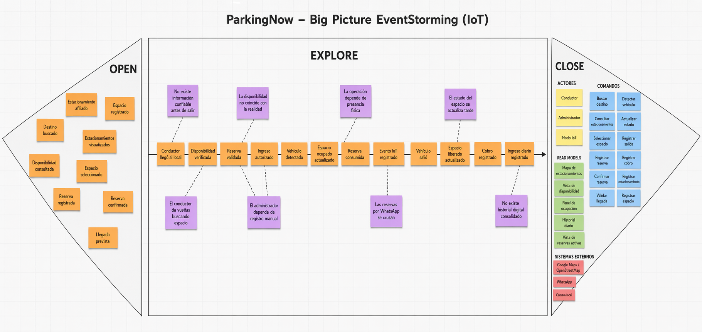
Nota. Elaboración propia (2026).
Según la Figura 9, el Big Picture EventStorming permitió representar el dominio de ParkingNow como un flujo integrado en el que intervienen el conductor, el administrador del estacionamiento y el componente IoT. En la fase Open se reunieron los eventos iniciales asociados al descubrimiento y reserva de espacios, incorporando también elementos operativos del negocio. En la fase Explore se organizó la línea principal del dominio desde la llegada al local hasta el cierre operativo de la transacción, junto con los principales puntos de dolor del escenario actual. Finalmente, en la fase Close se consolidaron los elementos complementarios que explican quién interviene en el proceso, qué acciones desencadenan los eventos, qué información se necesita visualizar y qué servicios externos participan en la experiencia.
En esta primera etapa se realizó una exploración inicial del dominio mediante la identificación de eventos significativos relacionados con el inicio de la experiencia del usuario y con la configuración operativa del servicio. El objetivo fue abrir la discusión y capturar, de forma amplia, los hechos más relevantes que ocurren antes de la ejecución principal del proceso, tanto desde la perspectiva del conductor como desde la perspectiva del estacionamiento afiliado.
Figura 10
Big Picture EventStorming - Etapa Open
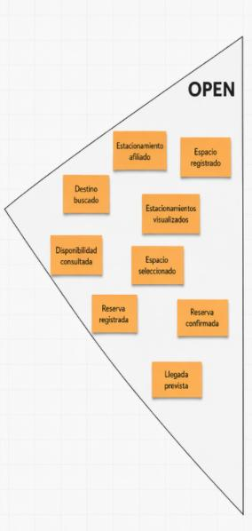
Nota. Elaboración propia (2026).
Según la Figura 10, en esta fase se identificaron los siguientes eventos iniciales del dominio: Estacionamiento afiliado, Espacio registrado, Destino buscado, Estacionamientos visualizados, Disponibilidad consultada, Espacio seleccionado, Reserva registrada, Reserva confirmada y Llegada prevista. En conjunto, estos eventos representan la etapa temprana del proceso, en la que el conductor inicia la búsqueda de estacionamiento y el negocio ya dispone de espacios registrados y visibles dentro del ecosistema de la solución.
Asimismo, según la Figura 10, esta etapa resulta relevante porque evidencia que el problema no comienza únicamente cuando el usuario llega al local, sino desde el momento en que necesita tomar decisiones sin contar todavía con certeza sobre la disponibilidad real. Del mismo modo, incorpora desde el inicio elementos del lado operativo del negocio, evitando que el dominio quede reducido únicamente a la perspectiva del conductor.
En esta etapa se construyó la línea principal del dominio, ordenando cronológicamente los eventos de negocio más relevantes desde la llegada del conductor al local hasta el cierre operativo de la transacción. Esta fase permitió comprender con mayor claridad la secuencia del proceso principal y, al mismo tiempo, ubicar los principales puntos de dolor del escenario actual.
Figura 11
Big Picture EventStorming - Etapa Explore
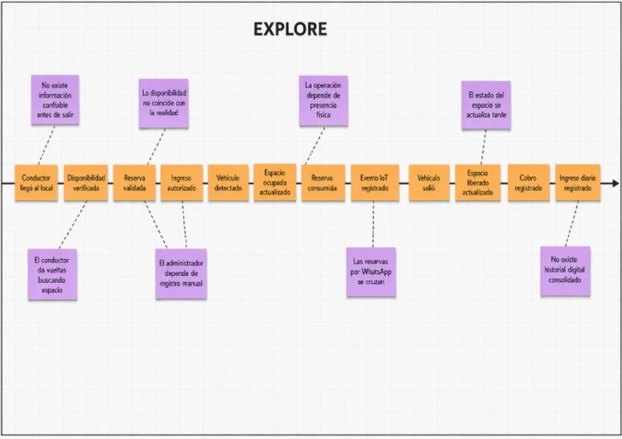
Nota. Elaboración propia (2026).
Según la Figura 11, la línea principal del dominio quedó conformada por los siguientes eventos: Conductor llegó al local, Disponibilidad verificada, Reserva validada, Ingreso autorizado, Vehículo detectado, Espacio ocupado actualizado, Reserva consumida, Evento IoT registrado, Vehículo salió, Espacio liberado actualizado, Cobro registrado e Ingreso diario registrado. Esta secuencia resume el flujo operativo central del negocio, articulando la intención digital de la reserva con la validación operativa del administrador y con la detección física realizada por el componente IoT.
Asimismo, según la Figura 11, durante esta etapa se identificaron los principales Pain Points del dominio actual: No existe información confiable antes de salir, El conductor da vueltas buscando espacio, La disponibilidad no coincide con la realidad, El administrador depende de registro manual, La operación depende de presencia física, Las reservas por WhatsApp se cruzan, El estado del espacio se actualiza tarde y No existe historial digital consolidado. Estos puntos de dolor evidencian que el problema no se limita a la dificultad del conductor para encontrar estacionamiento, sino que también compromete la operación diaria del administrador, quien carece de automatización, visibilidad remota y trazabilidad confiable sobre lo que ocurre en su local.
En consecuencia, según la Figura 11, esta etapa permitió identificar con claridad la principal brecha del dominio: la desconexión entre el estado físico real del espacio de estacionamiento y la información que circula entre conductor, administrador y sistema digital. Dicha brecha constituye el núcleo del problema que ParkingNow busca resolver mediante la integración entre aplicación móvil, panel de gestión y detección física con IoT.
En la etapa final se consolidaron los elementos que complementan el entendimiento global del dominio: actores, comandos, vistas de información y sistemas externos. Esta fase permitió responder quién interviene en el proceso, qué acciones desencadenan los eventos, qué información necesita visualizar cada participante y qué servicios externos forman parte del ecosistema.
Figura 12
Big Picture EventStorming - Etapa Close
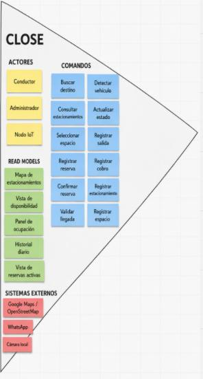
Nota. Elaboración propia (2026).
Según la Figura 12, se identificaron como Actors a Conductor, Administrador y Nodo IoT. Estos actores representan, respectivamente, al usuario que busca y reserva estacionamiento, al operador que administra el local y al componente físico encargado de detectar ocupación y contribuir a la actualización del estado del sistema.
Asimismo, según la Figura 12, como Commands se definieron: Buscar destino, Consultar estacionamientos, Seleccionar espacio, Registrar reserva, Confirmar reserva, Validar llegada, Detectar vehículo, Actualizar estado, Registrar salida, Registrar cobro, Registrar estacionamiento y Registrar espacio. Estos comandos representan las acciones que desencadenan los hechos del dominio y permiten comprender la interacción entre los actores y la solución tecnológica.
Del mismo modo, según la Figura 12, como Read Models se identificaron: Mapa de estacionamientos, Vista de disponibilidad, Panel de ocupación, Historial diario y Vista de reservas activas. Estas vistas sintetizan la información necesaria para que conductores y administradores puedan tomar decisiones dentro del flujo del negocio.
Finalmente, según la Figura 12, se reconocieron como External Systems a Google Maps / OpenStreetMap, WhatsApp y Cámara local, ya que forman parte del entorno actual o potencial de interacción del sistema, ya sea para visualización de ubicaciones, coordinación operativa informal o apoyo visual en la supervisión del local.
Según las Figuras 9, 10, 11 y 12, el Big Picture EventStorming de ParkingNow permitió comprender de manera integral el flujo principal del negocio y evidenciar que el problema central del dominio radica en la falta de sincronización entre el estado físico real del estacionamiento y la información que reciben tanto el conductor como el administrador. Desde la perspectiva del conductor, esto se traduce en incertidumbre, pérdida de tiempo y estrés acumulado. Desde la perspectiva del administrador, se traduce en dependencia de registros manuales, falta de control remoto y ausencia de trazabilidad operativa consolidada.
Asimismo, este artefacto permitió identificar tempranamente los actores del dominio, los comandos relevantes, las vistas de información necesarias y los sistemas externos que intervienen en la experiencia actual del negocio. En conjunto, estos hallazgos constituyen una base directa para la siguiente etapa del informe, orientada a la definición del Ubiquitous Language y, posteriormente, al modelado estratégico y táctico de la solución.
Para asegurar una comunicación clara, consistente y sin ambigüedades entre todos los miembros del equipo y los stakeholders del proyecto, se ha definido el Ubiquitous Language de ParkingNow siguiendo los principios de Domain-Driven Design (DDD). Este lenguaje compartido permite que los conceptos centrales del dominio del negocio sean comprendidos y utilizados de la misma manera en el análisis, el diseño y la construcción de la solución.
Los términos incluidos en esta sección corresponden únicamente al dominio de la gestión de estacionamientos urbanos y al modelo de negocio de ParkingNow. Por ello, no se consideran términos técnicos de implementación o de ingeniería de software. Cada término se presenta en inglés, acompañado de su equivalente en español entre paréntesis, mientras que la definición correspondiente se redacta en español.
| Término | Definición |
|---|---|
| Administrator (Administrador / Dueño) | Persona encargada de gestionar uno o más estacionamientos, controlar la disponibilidad de los espacios y supervisar la operación diaria del local. |
| Affiliated Parking Lot (Estacionamiento afiliado) | Estacionamiento que mantiene una relación formal con ParkingNow y cuyos espacios forman parte de la oferta visible para los conductores dentro de la solución. |
| Affiliation (Afiliación) | Relación formal mediante la cual un administrador incorpora su estacionamiento a la red de ParkingNow, permitiendo que sus espacios sean gestionados y visibles dentro del servicio. |
| Availability (Disponibilidad) | Condición de un espacio de estacionamiento en un momento determinado que indica si puede ser ocupado o reservado por un conductor. |
| Booking Window (Ventana de reserva) | Período de tiempo durante el cual una reserva permanece vigente antes de que el conductor llegue al estacionamiento. |
| Consumed Reservation (Reserva consumida) | Estado que adquiere una reserva cuando el conductor ya hizo uso efectivo del espacio reservado al ingresar y ocuparlo. |
| Driver (Conductor) | Persona que utiliza un vehículo particular y busca un espacio de estacionamiento disponible para llegar a su destino de manera más rápida, predecible y segura. |
| Entry (Ingreso) | Hecho que marca la llegada de un vehículo a un espacio de estacionamiento y el inicio de su uso efectivo. |
| Exit (Salida) | Hecho que marca la liberación de un espacio de estacionamiento cuando el vehículo abandona el lugar. |
| Non-Affiliated Parking Lot (Estacionamiento no afiliado) | Estacionamiento que existe dentro del entorno urbano, pero que no mantiene una relación de afiliación con ParkingNow. Puede ser visible como referencia, pero no forma parte del servicio principal de reserva y disponibilidad verificada. |
| Occupancy (Ocupación) | Estado de un espacio de estacionamiento cuando se encuentra actualmente en uso por un vehículo. |
| Occupancy Status (Estado de ocupación) | Condición en la que se encuentra un espacio de estacionamiento dentro del dominio del negocio. Puede expresarse, según el contexto operativo, como libre, reservado, ocupado o sin conexión. |
| Parking Lot (Estacionamiento) | Establecimiento físico que agrupa uno o más espacios de estacionamiento y ofrece el servicio de parqueo a conductores. |
| Parking Space (Espacio de estacionamiento) | Unidad física individual destinada al estacionamiento de un único vehículo dentro de un estacionamiento. |
| Peak Demand (Alta demanda / Hora punta) | Período del día en el que la cantidad de conductores que busca estacionamiento supera la disponibilidad habitual de espacios en una determinada zona urbana. |
| Rate (Tarifa) | Monto económico asociado al uso de un espacio de estacionamiento durante una sesión de estacionamiento o dentro de un rango de tiempo definido por el administrador. |
| Reservation (Reserva) | Acuerdo previo mediante el cual un conductor asegura temporalmente un espacio disponible antes de llegar físicamente al estacionamiento. |
| Reserved Space (Espacio reservado) | Espacio de estacionamiento que ha sido asignado temporalmente a un conductor mediante una reserva activa y que, por ello, no debe ser ocupado por otro vehículo durante ese período. |
| Search Time (Tiempo de búsqueda) | Tiempo que transcurre desde que un conductor inicia la búsqueda de estacionamiento hasta que encuentra un espacio disponible o toma una decisión alternativa. |
| Urban Zone (Zona urbana de alta demanda) | Área de la ciudad caracterizada por alta actividad comercial, laboral o de servicios, donde la búsqueda de estacionamiento suele ser más difícil y frecuente. |
| Validated Reservation (Reserva validada) | Reserva cuya vigencia y correspondencia con el conductor han sido confirmadas al momento de su llegada al estacionamiento, permitiendo autorizar el ingreso. |
| Verified Availability (Disponibilidad verificada) | Disponibilidad de un espacio de estacionamiento que cuenta con respaldo confiable respecto a su estado real de ocupación, reduciendo la incertidumbre tanto para el conductor como para el administrador. |
En conjunto, este lenguaje ubicuo permite establecer una base conceptual común para el dominio de ParkingNow, reduciendo ambigüedades y asegurando que todos los miembros del equipo comprendan de la misma manera los conceptos centrales del negocio. Asimismo, este glosario servirá como referencia para las siguientes secciones del informe, especialmente aquellas vinculadas al modelado del dominio y la arquitectura de la solución.
En este capítulo se presenta la especificación de requisitos de ParkingNow, a partir de los hallazgos obtenidos en las etapas previas de análisis del problema, entrevistas, needfinding, Big Picture EventStorming y definición del Ubiquitous Language. Su propósito es traducir el entendimiento del dominio en un conjunto estructurado de requisitos que orienten de manera clara el desarrollo del producto dentro del alcance del proyecto.
A partir de ello, este capítulo organiza los requerimientos funcionales y técnicos de la solución en artefactos que permiten vincular necesidades de los usuarios, objetivos del producto y decisiones de implementación a nivel de MVP académico. En particular, se detallan las User Stories, el Impact Mapping y el Product Backlog, con el fin de asegurar trazabilidad entre el problema identificado, el valor esperado para los segmentos objetivo y el trabajo que deberá ejecutar el equipo durante el desarrollo del sistema.
En esta sección se presenta el conjunto de User Stories de ParkingNow, elaboradas a partir de los segmentos objetivo, los hallazgos de entrevistas, los User Personas y el modelado del dominio desarrollado en el capítulo anterior. Estas historias permiten expresar, desde la perspectiva de los distintos actores del sistema, las necesidades funcionales y técnicas que deben ser cubiertas por la solución propuesta.
El backlog integrado incluye historias orientadas al Visitante del landing page, al Conductor, al Dueño o Administrador del estacionamiento y al rol técnico Developer, incorporando también Technical Stories, Spike Stories e historias de Testing y Quality Assurance. Cada historia se encuentra redactada en formato Como – quiero – para, acompañada de criterios de aceptación en notación Gherkin, con el propósito de definir de manera clara, comprobable y consistente el alcance esperado del sistema.
A continuación, se presenta la tabla consolidada de épicas y User Stories del proyecto, la cual reúne 120 historias organizadas en función de los principales bloques funcionales y técnicos de ParkingNow.
| Epic / Story ID | Título | Descripción | Criterios de Aceptación | Relacionado con (Epic ID) |
|---|---|---|---|---|
| EP01 | Landing Page / Visitante | Agrupa las historias orientadas a la presentación pública del producto, explicación de la propuesta de valor y captación de interés de visitantes del sitio. | N/A (Es una Épica, se desglosa en User Stories). | - |
| US-LP.1 | Comprender la propuesta de valor del servicio | Como Visitante, quiero entender rápidamente qué ofrece ParkingNow, para decidir si el servicio se ajusta a mis necesidades de estacionamiento. | Scenario: Comprensión inicial de la propuesta Given el visitante ingresa por primera vez a la landing page When el visitante lee la sección principal de presentación Then el visitante identifica con claridad el problema que resuelve el servicio y a quién está dirigido Scenario: Diferenciación frente a soluciones tradicionales Given el visitante ha leído la propuesta general When el visitante revisa la sección comparativa del servicio Then el visitante reconoce al menos un elemento diferencial asociado al respaldo por sensado físico |
EP01 |
| US-LP.2 | Conocer beneficios del servicio como conductor | Como Visitante interesado como conductor, quiero conocer los beneficios específicos para mi perfil, para evaluar si vale la pena instalar la aplicación móvil. | Scenario: Beneficios para el conductor Given el visitante se identifica con el perfil de conductor urbano When el visitante consulta la sección de beneficios para conductores Then el visitante identifica beneficios relacionados con ahorro de tiempo y mayor certeza sobre la disponibilidad Scenario: Claridad de los beneficios Given el visitante ha revisado los beneficios descritos When el visitante intenta resumir lo que obtendría al usar el servicio Then el visitante reconoce al menos tres beneficios diferenciados sin ambigüedad |
EP01 |
| US-LP.3 | Conocer beneficios del servicio como administrador | Como Visitante interesado en afiliar su estacionamiento, quiero conocer los beneficios para administradores, para evaluar si el servicio responde a las necesidades operativas de mi negocio. | Scenario: Beneficios para el administrador Given el visitante se identifica como dueño o administrador de estacionamiento When el visitante consulta la sección de beneficios para administradores Then el visitante identifica beneficios vinculados a monitoreo, captación de demanda y reducción de gestión manual Scenario: Adecuación al segmento de pequeña escala Given el visitante opera un estacionamiento pequeño o mediano When el visitante compara la propuesta con su operación actual Then el visitante percibe que la propuesta se ajusta a operadores independientes |
EP01 |
| US-LP.4 | Entender cómo funciona el servicio de forma simple | Como Visitante, quiero comprender de manera sencilla cómo funciona el servicio, para reducir la incertidumbre antes de tomar una decisión. | Scenario: Explicación general del funcionamiento Given el visitante desconoce el detalle técnico del servicio When el visitante consulta la sección explicativa del funcionamiento Then el visitante comprende cómo interactúan conductor, administrador y nodo IoT Scenario: Lenguaje accesible Given el visitante no tiene perfil técnico When el visitante lee la descripción del funcionamiento Then el visitante comprende la idea principal sin requerir conocimientos previos de IoT |
EP01 |
| US-LP.5 | Percibir confianza y credibilidad del servicio | Como Visitante, quiero identificar señales de confianza sobre el servicio, para sentirme más seguro antes de compartir datos o afiliar mi negocio. | Scenario: Señales de credibilidad visibles Given el visitante ha recorrido las secciones principales del sitio When el visitante busca referencias sobre la seriedad del servicio Then el visitante encuentra elementos de confianza como descripción de la startup o información del equipo Scenario: Coherencia de la información Given el visitante compara las distintas secciones del sitio When el visitante evalúa si los mensajes son consistentes Then el visitante percibe coherencia entre propuesta de valor, beneficios y descripción del servicio |
EP01 |
| US-LP.6 | Registrar interés mediante formulario de contacto | Como Visitante interesado, quiero dejar mis datos de contacto para recibir información adicional, para iniciar una posible relación con el servicio. | Scenario: Envío exitoso del formulario Given el visitante ha completado los campos requeridos del formulario When el visitante confirma el envío de la solicitud Then el sistema registra la solicitud y confirma al visitante que sus datos fueron recibidos Scenario: Validación de datos mínimos Given el visitante omite información obligatoria When el visitante intenta enviar el formulario incompleto Then el sistema indica qué información es requerida antes de permitir el envío |
EP01 |
| US-LP.7 | Conocer quién está detrás del servicio | Como Visitante, quiero saber quién desarrolla el servicio y con qué propósito, para valorar la seriedad de la iniciativa antes de confiar en la plataforma. | Scenario: Información institucional accesible Given el visitante desea saber más sobre la organización When el visitante consulta la sección sobre la startup Then el visitante accede a información clara sobre la misión, visión y contexto del producto Scenario: Transparencia sobre el equipo Given el visitante evalúa la credibilidad de la solución When el visitante revisa la información del equipo Then el visitante comprende que el producto es desarrollado por un equipo identificado |
EP01 |
| US-LP.8 | Resolver dudas frecuentes antes de adoptar el servicio | Como Visitante, quiero acceder a respuestas claras sobre las dudas más comunes, para tomar una decisión informada sin necesidad de solicitar contacto. | Scenario: Acceso a preguntas frecuentes Given el visitante tiene dudas generales sobre el servicio When el visitante consulta la sección de preguntas frecuentes Then el visitante encuentra respuestas sobre temas comunes como disponibilidad, reservas y afiliación Scenario: Cobertura de dudas clave Given el visitante necesita respuestas sobre aspectos operativos When el visitante recorre el conjunto de preguntas disponibles Then el visitante identifica al menos una respuesta que resuelve su duda principal |
EP01 |
| EP02 | Conductor — Descubrimiento y búsqueda | Agrupa las historias asociadas a la búsqueda de estacionamientos cercanos, consulta de detalle y disponibilidad por espacio desde la aplicación móvil. | N/A (Es una Épica, se desglosa en User Stories). | - |
| US-DRV.1 | Identificar estacionamientos cercanos a su ubicación | Como Conductor, quiero conocer los estacionamientos disponibles cerca de donde estoy, para tomar una decisión rápida sin recorrer la zona buscando alternativas. | Scenario: Consulta desde ubicación actual Given el conductor ha otorgado permiso de ubicación a la aplicación When el conductor consulta estacionamientos cerca de su posición Then el conductor obtiene un conjunto de estacionamientos cercanos ordenados por proximidad Scenario: Ausencia de estacionamientos cercanos Given el conductor se encuentra en una zona sin estacionamientos registrados When el conductor consulta estacionamientos cercanos Then el conductor recibe una indicación clara de que no existen resultados dentro del radio consultado |
EP02 |
| US-DRV.2 | Buscar estacionamientos cerca de un destino específico | Como Conductor, quiero buscar estacionamientos alrededor de un destino indicado, para planificar con anticipación dónde dejar mi vehículo antes de llegar. | Scenario: Búsqueda por destino válido Given el conductor indica un destino válido en la aplicación When el conductor solicita estacionamientos cercanos a ese destino Then el conductor obtiene un conjunto de estacionamientos asociados al área del destino Scenario: Destino no reconocido Given el conductor ingresa un destino no identificable When el conductor solicita la búsqueda Then el conductor recibe una indicación clara para reformular o precisar el destino |
EP02 |
| US-DRV.3 | Consultar información relevante de un estacionamiento | Como Conductor, quiero revisar los datos principales de un estacionamiento, para decidir con mayor criterio si me conviene acercarme a ese lugar. | Scenario: Detalle de estacionamiento afiliado Given el conductor selecciona un estacionamiento afiliado al servicio When el conductor solicita ver su información detallada Then el conductor accede a datos clave como ubicación y disponibilidad general Scenario: Detalle de estacionamiento de referencia Given el conductor selecciona un estacionamiento solo como referencia de ubicación When el conductor solicita ver su información Then el conductor es informado de que ese estacionamiento no forma parte del servicio de reserva |
EP02 |
| US-DRV.4 | Consultar disponibilidad por espacio en un estacionamiento afiliado | Como Conductor, quiero conocer cuántos espacios están disponibles en un estacionamiento afiliado, para decidir con confianza si me conviene desplazarme a ese lugar. | Scenario: Estacionamiento con espacios disponibles Given el conductor selecciona un estacionamiento afiliado When el conductor consulta la disponibilidad por espacio Then el conductor recibe información clara sobre cuántos espacios están libres al momento de la consulta Scenario: Estacionamiento sin espacios disponibles Given el conductor selecciona un estacionamiento afiliado sin espacios libres When el conductor consulta la disponibilidad Then el conductor es informado de manera explícita de que no hay espacios disponibles |
EP02 |
| US-DRV.5 | Distinguir estacionamientos con disponibilidad verificada | Como Conductor, quiero diferenciar los estacionamientos con disponibilidad verificada por IoT de los que son solo referencia, para priorizar opciones que me dan mayor certeza antes de llegar. | Scenario: Identificación de estacionamientos verificados Given el conductor consulta los resultados de búsqueda When el conductor observa el listado de estacionamientos Then el conductor identifica cuáles cuentan con disponibilidad respaldada por detección física Scenario: Identificación de estacionamientos no afiliados Given el conductor observa estacionamientos del entorno que no pertenecen al servicio When el conductor revisa su categorización Then el conductor comprende que esos estacionamientos solo tienen valor como referencia de ubicación |
EP02 |
| US-DRV.6 | Filtrar resultados por estacionamientos con disponibilidad | Como Conductor, quiero acotar los resultados a estacionamientos con espacios disponibles, para reducir opciones poco útiles cuando necesito decidir con rapidez. | Scenario: Filtro con coincidencias Given el conductor ha realizado una búsqueda inicial When el conductor aplica el criterio de disponibilidad Then el conductor recibe únicamente estacionamientos que reportan espacios libres al momento de la consulta Scenario: Filtro sin coincidencias Given ningún estacionamiento cercano tiene disponibilidad en el momento When el conductor aplica el criterio de disponibilidad Then el conductor recibe una indicación clara de que ninguna opción cumple con el criterio aplicado |
EP02 |
| US-DRV.7 | Consultar información básica del estacionamiento | Como Conductor, quiero conocer información básica como horario o condiciones del estacionamiento, para evitar sorpresas al llegar y ahorrar tiempo. | Scenario: Información complementaria publicada Given el administrador ha publicado información complementaria del estacionamiento When el conductor consulta el detalle del local Then el conductor accede a información como horario estimado y condiciones generales Scenario: Información complementaria ausente Given el administrador no ha publicado información complementaria When el conductor consulta el detalle del local Then el conductor comprende que la información disponible es limitada y se muestra solo lo declarado |
EP02 |
| US-DRV.8 | Reconocer si un estacionamiento está sin conexión | Como Conductor, quiero saber cuándo la disponibilidad no se está actualizando en tiempo real, para ajustar mis expectativas y decidir con información más realista. | Scenario: Estacionamiento con nodo desconectado Given el estacionamiento tiene su nodo IoT sin reportar eventos recientes When el conductor consulta el estacionamiento Then el conductor es informado de que la información corresponde al último estado conocido y no a una lectura actual Scenario: Estacionamiento con nodo activo Given el estacionamiento tiene su nodo IoT reportando normalmente When el conductor consulta el estacionamiento Then el conductor percibe que la información mostrada corresponde a un estado actualizado |
EP02 |
| EP03 | Conductor — Reservas y ticket virtual | Agrupa las historias relacionadas con la reserva anticipada de espacios, el ticket virtual y el ciclo de vida de la reserva hasta su consumo o expiración. | N/A (Es una Épica, se desglosa en User Stories). | - |
| US-DRV.9 | Reservar un espacio disponible anticipadamente | Como Conductor, quiero reservar un espacio libre antes de llegar al estacionamiento, para asegurar mi llegada sin depender de la disponibilidad del momento. | Scenario: Reserva exitosa sobre espacio disponible Given el conductor ha identificado un espacio disponible en un estacionamiento afiliado When el conductor confirma la reserva del espacio Then el sistema registra la reserva y el espacio deja de estar disponible para otros conductores Scenario: Reserva sobre espacio ya tomado Given otro conductor ha reservado el mismo espacio antes When el conductor intenta completar la reserva Then el conductor es informado de que el espacio ya no está disponible y puede intentar con otra opción |
EP03 |
| US-DRV.10 | Recibir confirmación inmediata de la reserva | Como Conductor, quiero obtener una confirmación clara cuando mi reserva es aceptada, para tener certeza del compromiso del espacio antes de desplazarme. | Scenario: Confirmación inmediata Given el conductor ha completado la acción de reserva When el conductor espera la respuesta del sistema Then el conductor recibe una confirmación explícita con la información esencial de la reserva Scenario: Fallo durante la confirmación Given ocurre un error temporal en el servicio de reservas When el conductor intenta completar la reserva Then el conductor recibe una indicación clara del problema y puede reintentar sin crear reservas duplicadas |
EP03 |
| US-DRV.11 | Obtener un ticket virtual de la reserva | Como Conductor, quiero contar con un ticket virtual asociado a mi reserva, para acreditar al llegar al estacionamiento que el espacio me fue asignado. | Scenario: Generación del ticket virtual Given el conductor ha confirmado exitosamente una reserva When el conductor accede a su ticket virtual Then el conductor visualiza un ticket con información que identifica su reserva de forma única Scenario: Consulta posterior del ticket Given el conductor ya cuenta con una reserva activa When el conductor consulta nuevamente el ticket durante su trayecto Then el conductor accede al mismo ticket sin necesidad de volver a reservar |
EP03 |
| US-DRV.12 | Consultar el identificador único de su reserva | Como Conductor, quiero identificar de forma única mi reserva, para poder referirme a ella con claridad al llegar al estacionamiento. | Scenario: Identificador visible en la reserva Given el conductor tiene una reserva activa When el conductor consulta su ticket Then el conductor accede a un identificador único asociado a su reserva Scenario: Identificador estable Given el conductor consulta la reserva en distintos momentos When el conductor revisa el identificador en cada consulta Then el conductor encuentra el mismo identificador durante toda la vigencia de la reserva |
EP03 |
| US-DRV.13 | Conocer el tiempo límite para consumir su reserva | Como Conductor, quiero saber hasta cuándo es válida mi reserva, para organizarme y llegar a tiempo sin perder el espacio comprometido. | Scenario: Tiempo límite comunicado Given el conductor ha completado una reserva When el conductor consulta el detalle de la reserva Then el conductor percibe con claridad el tiempo límite a partir del cual la reserva podría expirar Scenario: Proximidad al tiempo límite Given el conductor mantiene una reserva próxima a su vencimiento When el conductor consulta el estado de la reserva Then el conductor es informado de que la reserva se encuentra próxima al tiempo límite |
EP03 |
| US-DRV.14 | Expirar automáticamente la reserva si no se consume a tiempo | Como Conductor, quiero que el sistema libere el espacio si no llego dentro del tiempo acordado, para que el funcionamiento sea justo y el espacio pueda ofrecerse a otros conductores. | Scenario: Reserva expirada por no consumo Given el conductor no llega dentro del tiempo límite de su reserva When el tiempo límite establecido se cumple Then la reserva se marca como expirada y el espacio queda disponible nuevamente Scenario: Consulta posterior de reserva expirada Given el conductor tiene una reserva ya expirada When el conductor consulta el estado de la reserva Then el conductor percibe que la reserva se encuentra en estado expirado y comprende el motivo |
EP03 |
| US-DRV.15 | Cancelar una reserva antes de utilizarla | Como Conductor, quiero cancelar mi reserva cuando mis planes cambien, para liberar el espacio a tiempo y no comprometerme innecesariamente. | Scenario: Cancelación exitosa de reserva activa Given el conductor tiene una reserva activa dentro del tiempo límite When el conductor solicita la cancelación Then la reserva queda cancelada y el espacio se libera para otros conductores Scenario: Cancelación inválida Given la reserva del conductor ya fue consumida o ha expirado When el conductor intenta cancelarla Then el conductor es informado de que la reserva no puede ser cancelada por su estado actual |
EP03 |
| US-DRV.16 | Reconocer que su reserva fue consumida al ocupar el espacio | Como Conductor, quiero saber que mi reserva se marcó como consumida cuando ocupo el espacio, para confirmar que mi llegada fue reconocida correctamente por el sistema. | Scenario: Reserva marcada como consumida Given el conductor ha ocupado físicamente el espacio reservado When el sistema detecta la ocupación del espacio asociado a esa reserva Then el conductor puede verificar que su reserva figura como consumida en la aplicación Scenario: Diferenciación frente a otros estados Given el conductor consulta el historial de sus reservas When el conductor revisa las reservas recientes Then el conductor distingue claramente las reservas consumidas de las expiradas o canceladas |
EP03 |
| EP04 | Conductor — Historial y estado de reserva | Agrupa las historias del seguimiento del estado actual de la reserva y la consulta del historial de uso del conductor dentro de la plataforma. | N/A (Es una Épica, se desglosa en User Stories). | - |
| US-DRV.17 | Consultar el estado actualizado de su reserva | Como Conductor, quiero conocer el estado actual de mi reserva activa, para tener certeza durante mi trayecto de que el espacio continúa asignado a mí. | Scenario: Consulta de reserva vigente Given el conductor tiene una reserva activa When el conductor consulta el estado desde la aplicación Then el conductor obtiene el estado actualizado de la reserva y del espacio asociado Scenario: Consulta con nodo sin conexión Given el nodo IoT del estacionamiento no está reportando eventos When el conductor consulta el estado de su reserva Then el conductor es informado de que la información no se está actualizando en tiempo real |
EP04 |
| US-DRV.18 | Acceder al historial de reservas realizadas | Como Conductor, quiero revisar las reservas que he realizado previamente, para tener referencia de los estacionamientos que ya he utilizado. | Scenario: Historial con reservas previas Given el conductor ha realizado reservas con anterioridad When el conductor accede a su historial Then el conductor visualiza un listado ordenado de reservas pasadas con información mínima para identificarlas Scenario: Historial sin reservas previas Given el conductor aún no ha realizado reservas When el conductor accede a su historial Then el conductor recibe una indicación clara de que no hay reservas registradas todavía |
EP04 |
| US-DRV.19 | Revisar el detalle de una reserva pasada | Como Conductor, quiero consultar los datos específicos de una reserva anterior, para recordar en qué estacionamiento estuve y bajo qué condiciones usé el servicio. | Scenario: Detalle de reserva consumida Given el conductor selecciona una reserva consumida When el conductor consulta su detalle Then el conductor accede a información como estacionamiento asociado, fecha y estado final Scenario: Detalle de reserva cancelada o expirada Given el conductor selecciona una reserva cancelada o expirada When el conductor consulta su detalle Then el conductor comprende claramente por qué esa reserva no fue consumida |
EP04 |
| US-DRV.20 | Identificar rápidamente sus reservas activas | Como Conductor, quiero reconocer cuáles de mis reservas están activas, para saber si actualmente tengo un espacio comprometido sin revisar cada registro. | Scenario: Existencia de reservas activas Given el conductor tiene al menos una reserva activa When el conductor revisa sus reservas Then el conductor distingue claramente las reservas activas del resto Scenario: Ausencia de reservas activas Given el conductor no mantiene ninguna reserva activa When el conductor revisa sus reservas Then el conductor percibe con claridad que no hay reservas vigentes en ese momento |
EP04 |
| US-DRV.21 | Comprender el motivo de cierre de una reserva | Como Conductor, quiero saber por qué una reserva finalizó, para entender lo ocurrido sin solicitar información al administrador. | Scenario: Cierre por consumo normal Given el conductor consulta una reserva cuyo espacio fue ocupado físicamente When el conductor revisa el cierre de la reserva Then el conductor comprende que la reserva finalizó al ser consumida Scenario: Cierre por expiración o cancelación Given el conductor consulta una reserva finalizada sin consumo When el conductor revisa el motivo de cierre Then el conductor distingue si la reserva expiró automáticamente o fue cancelada voluntariamente |
EP04 |
| US-DRV.22 | Ser informado cuando el espacio reservado pierde sincronización | Como Conductor, quiero enterarme si el espacio que reservé deja de reportar su estado, para ajustar mis expectativas antes de llegar al estacionamiento. | Scenario: Pérdida de sincronización del espacio reservado Given el conductor tiene una reserva activa When el nodo IoT asociado al espacio deja de reportar eventos Then el conductor es informado de que el estado del espacio reservado no se está actualizando en tiempo real Scenario: Recuperación de sincronización Given el nodo IoT asociado vuelve a reportar eventos When el conductor consulta nuevamente el estado de su reserva Then el conductor percibe que la información vuelve a actualizarse con base en lecturas actuales |
EP04 |
| EP05 | Dueño / Administrador — Registro de estacionamiento y espacios | Agrupa las historias relacionadas con el alta del estacionamiento, configuración de sus espacios y mantenimiento de su información operativa. | N/A (Es una Épica, se desglosa en User Stories). | - |
| US-OWN.1 | Registrar su estacionamiento en la plataforma | Como Administrador, quiero dar de alta mi estacionamiento dentro del servicio, para comenzar a gestionar mi operación desde el panel web. | Scenario: Registro exitoso del estacionamiento Given el administrador cuenta con los datos básicos de su estacionamiento When el administrador completa el proceso de registro Then el estacionamiento queda registrado y asociado a su cuenta como administrador responsable Scenario: Datos obligatorios incompletos Given el administrador omite datos obligatorios del registro When el administrador intenta finalizar el alta Then el administrador es informado de los datos faltantes antes de completar el registro |
EP05 |
| US-OWN.2 | Registrar la ubicación del estacionamiento | Como Administrador, quiero registrar la ubicación precisa de mi estacionamiento, para que los conductores puedan encontrarlo correctamente en la plataforma. | Scenario: Ubicación registrada correctamente Given el administrador cuenta con la dirección y coordenadas del local When el administrador completa la información de ubicación Then la ubicación queda asociada al estacionamiento y puede usarse para búsquedas Scenario: Ubicación incoherente Given el administrador ingresa información inconsistente entre dirección y coordenadas When el administrador intenta guardar la ubicación Then el administrador es informado de la inconsistencia antes de confirmar el registro |
EP05 |
| US-OWN.3 | Registrar los espacios del estacionamiento | Como Administrador, quiero configurar los espacios disponibles de mi estacionamiento, para que el sistema los reconozca y pueda monitorearlos individualmente. | Scenario: Alta de espacios Given el administrador ha registrado su estacionamiento When el administrador agrega los espacios correspondientes Then los espacios quedan asociados al estacionamiento y listos para su monitoreo Scenario: Cantidad de espacios inválida Given el administrador intenta registrar un número de espacios no válido When el administrador intenta confirmar la configuración Then el administrador es informado de que la cantidad indicada no es válida |
EP05 |
| US-OWN.4 | Asignar un identificador claro a cada espacio | Como Administrador, quiero asociar un identificador reconocible a cada espacio, para diferenciar fácilmente los espacios al operar y revisar su estado. | Scenario: Identificador único por espacio Given el administrador configura los espacios de su estacionamiento When el administrador asigna un identificador a cada uno Then cada espacio queda asociado a un identificador distinto dentro del estacionamiento Scenario: Identificador duplicado Given el administrador intenta usar un identificador ya asignado en su estacionamiento When el administrador intenta confirmar la asignación Then el administrador es informado de que el identificador ya está en uso |
EP05 |
| US-OWN.5 | Actualizar información del estacionamiento | Como Administrador, quiero modificar los datos de mi estacionamiento cuando sea necesario, para mantener actualizada la información que consultan los conductores. | Scenario: Actualización de información básica Given el administrador tiene su estacionamiento registrado When el administrador actualiza datos como horario o descripción Then los cambios quedan registrados y reflejados en la información del estacionamiento Scenario: Actualización sin cambios Given el administrador abre la edición y no realiza cambios efectivos When el administrador intenta guardar Then el administrador es informado de que no se detectaron modificaciones |
EP05 |
| US-OWN.6 | Desactivar temporalmente un espacio | Como Administrador, quiero marcar un espacio como no disponible temporalmente, para gestionar correctamente situaciones como mantenimiento sin eliminar su configuración. | Scenario: Desactivación temporal Given el administrador tiene un espacio registrado y operativo When el administrador lo marca como no disponible temporalmente Then ese espacio deja de ofrecerse a los conductores hasta que el administrador lo reactive Scenario: Reactivación del espacio Given el administrador ha desactivado previamente un espacio When el administrador lo reactiva Then el espacio queda nuevamente disponible para reservas y monitoreo |
EP05 |
| US-OWN.7 | Asociar el nodo IoT a su estacionamiento | Como Administrador, quiero vincular el nodo IoT físico a mi estacionamiento, para que los eventos detectados por sus sensores se reflejen correctamente en los espacios. | Scenario: Asociación exitosa del nodo Given el administrador cuenta con el código de identificación del nodo IoT When el administrador completa la asociación en la plataforma Then el nodo queda vinculado al estacionamiento y sus eventos se asignan a los espacios correspondientes Scenario: Código de nodo inválido o ya asignado Given el administrador intenta asociar un código inválido o ya vinculado a otro estacionamiento When el administrador confirma la asociación Then el administrador es informado del motivo del rechazo y la asociación no se completa |
EP05 |
| EP06 | Dueño / Administrador — Monitoreo operativo y eventos | Agrupa las historias asociadas al monitoreo de estados de espacios, reservas activas, eventos IoT y vista de apoyo visual del local. | N/A (Es una Épica, se desglosa en User Stories). | - |
| US-OWN.8 | Conocer el estado actual de cada espacio | Como Administrador, quiero conocer en qué estado se encuentra cada espacio de mi estacionamiento, para gestionar la operación sin depender de revisión presencial constante. | Scenario: Consulta de estados actuales Given el administrador abre el panel de monitoreo When el administrador revisa sus espacios Then el administrador obtiene el estado actual de cada espacio como libre, reservado, ocupado o sin conexión Scenario: Cambio de estado reflejado Given un espacio cambia de estado por una reserva o por detección física When el administrador consulta el panel luego del cambio Then el administrador percibe el nuevo estado del espacio sin refrescar manualmente |
EP06 |
| US-OWN.9 | Monitorear las reservas activas del estacionamiento | Como Administrador, quiero saber qué reservas están vigentes en mi local, para anticipar la llegada de conductores y ordenar la operación. | Scenario: Existencia de reservas activas Given el estacionamiento tiene reservas activas When el administrador consulta la vista de reservas activas Then el administrador accede a información mínima de cada reserva, como espacio asociado y tiempo límite Scenario: Sin reservas activas Given el estacionamiento no tiene reservas activas When el administrador consulta la vista de reservas activas Then el administrador percibe con claridad que no hay reservas activas vigentes |
EP06 |
| US-OWN.10 | Consultar el historial de reservas del estacionamiento | Como Administrador, quiero revisar las reservas que han ocurrido en mi local, para tener trazabilidad del uso del servicio sin depender de registros manuales. | Scenario: Historial con reservas Given el estacionamiento ha tenido reservas previas When el administrador accede al historial Then el administrador visualiza las reservas pasadas con su estado final Scenario: Historial vacío Given el estacionamiento aún no tiene reservas registradas When el administrador accede al historial Then el administrador recibe una indicación clara de que no hay registros todavía |
EP06 |
| US-OWN.11 | Revisar eventos IoT generados por el nodo | Como Administrador, quiero acceder a los eventos generados por el nodo IoT, para contar con trazabilidad operativa de lo que ocurre con los espacios de mi local. | Scenario: Eventos IoT disponibles Given el nodo IoT ha reportado eventos recientes When el administrador consulta la vista de eventos Then el administrador visualiza un listado ordenado de eventos con información del espacio involucrado Scenario: Ausencia de eventos recientes Given el nodo IoT no ha reportado eventos en el periodo consultado When el administrador consulta la vista de eventos Then el administrador percibe con claridad que no hay eventos registrados en ese periodo |
EP06 |
| US-OWN.12 | Conocer el estado de conexión del nodo IoT | Como Administrador, quiero saber si el nodo IoT de mi estacionamiento está reportando normalmente, para reaccionar oportunamente ante incidentes operativos. | Scenario: Nodo activo Given el nodo IoT ha reportado actividad reciente When el administrador consulta el estado de conexión Then el administrador percibe que el nodo se encuentra operando normalmente Scenario: Nodo sin conexión Given el nodo IoT no ha reportado actividad dentro del tiempo esperado When el administrador consulta el estado de conexión Then el administrador es informado de que el nodo se encuentra sin conexión y de cuándo fue su último reporte |
EP06 |
| US-OWN.13 | Enterarse de cambios relevantes sin revisión manual permanente | Como Administrador, quiero enterarme de cambios importantes sin estar revisando el panel todo el tiempo, para reducir la carga operativa y reaccionar solo cuando sea necesario. | Scenario: Cambio relevante en la operación Given se produce un cambio relevante como una nueva reserva o una desconexión del nodo When el administrador tiene el panel abierto en su sesión Then el administrador percibe el cambio sin refrescar manualmente la vista Scenario: Ausencia de cambios Given no se producen cambios relevantes durante un intervalo When el administrador mantiene el panel abierto Then la información del panel se mantiene estable y coherente con la operación |
EP06 |
| US-OWN.14 | Apoyar la supervisión con una vista simple de cámara local | Como Administrador, quiero contar con una vista visual simple del estacionamiento, para complementar la información de ocupación cuando necesite confirmar lo que ocurre. | Scenario: Acceso a la vista de cámara local Given el estacionamiento cuenta con cámara local conectada al nodo When el administrador accede a la vista de apoyo visual Then el administrador visualiza una imagen básica del área del estacionamiento Scenario: Cámara no disponible Given la cámara local no se encuentra disponible en ese momento When el administrador accede a la vista de apoyo visual Then el administrador es informado de que la vista no está disponible temporalmente |
EP06 |
| US-OWN.15 | Comprender discrepancias entre el estado lógico y el físico | Como Administrador, quiero entender qué sucede cuando un espacio reservado aparece como ocupado físicamente antes de tiempo, para reaccionar con criterio frente a estas situaciones. | Scenario: Precedencia del estado físico Given un espacio reservado es ocupado físicamente antes del consumo esperado When el administrador consulta el estado del espacio Then el administrador observa que el espacio aparece como ocupado y comprende que la detección física prevalece Scenario: Alineación entre estado lógico y físico Given una reserva se consume dentro del tiempo esperado When el administrador revisa el espacio luego del consumo Then el administrador percibe que el estado lógico y el físico son coherentes |
EP06 |
| EP07 | Web App — Autenticación y sesión | Agrupa las historias de registro, inicio y cierre de sesión, recuperación de acceso y gestión de perfil para administradores del panel web. | N/A (Es una Épica, se desglosa en User Stories). | - |
| US-WEB.1 | Registrarse como administrador en el panel web | Como Administrador, quiero crear mi cuenta en el panel web, para acceder a las funcionalidades de gestión de mi estacionamiento. | Scenario: Registro exitoso Given el administrador proporciona datos válidos When el administrador completa el proceso de registro Then la cuenta queda creada y el administrador puede iniciar sesión Scenario: Registro con datos inválidos Given el administrador proporciona datos inválidos o incompletos When el administrador intenta completar el registro Then el administrador es informado de los errores antes de que se cree la cuenta |
EP07 |
| US-WEB.2 | Iniciar sesión en el panel web | Como Administrador, quiero autenticarme en el panel web con mis credenciales, para acceder a la información y funcionalidades asociadas a mi estacionamiento. | Scenario: Inicio de sesión exitoso Given el administrador cuenta con credenciales válidas When el administrador ingresa sus credenciales Then el administrador obtiene acceso al panel y a su información Scenario: Credenciales inválidas Given el administrador ingresa credenciales incorrectas When el administrador intenta autenticarse Then el administrador recibe una indicación clara del error sin exponer información sensible |
EP07 |
| US-WEB.3 | Cerrar sesión de forma segura | Como Administrador, quiero cerrar mi sesión cuando lo decida, para evitar que otras personas accedan a mi información desde el mismo equipo. | Scenario: Cierre de sesión manual Given el administrador se encuentra autenticado When el administrador solicita cerrar sesión Then la sesión se finaliza y el administrador pierde acceso a las funcionalidades protegidas Scenario: Cierre automático por inactividad Given el administrador permanece inactivo durante el tiempo configurado When la sesión alcanza el tiempo máximo permitido Then la sesión se cierra automáticamente y el administrador debe autenticarse nuevamente |
EP07 |
| US-WEB.4 | Recuperar acceso ante olvido de credenciales | Como Administrador, quiero recuperar el acceso a mi cuenta si olvido mis credenciales, para no perder la gestión de mi estacionamiento cuando no recuerdo mi contraseña. | Scenario: Solicitud válida de recuperación Given el administrador tiene una cuenta con un correo válido When el administrador solicita recuperar su acceso Then el sistema envía instrucciones de recuperación al correo asociado Scenario: Solicitud con correo no registrado Given el administrador ingresa un correo no asociado a una cuenta When el administrador solicita la recuperación Then el sistema responde de forma consistente sin revelar si el correo existe en la plataforma |
EP07 |
| US-WEB.5 | Administrar información básica de perfil | Como Administrador, quiero mantener actualizada la información básica de mi cuenta, para que la plataforma refleje datos vigentes de contacto. | Scenario: Actualización del perfil Given el administrador se encuentra autenticado When el administrador modifica datos permitidos de su perfil Then los cambios quedan registrados y visibles en siguientes consultas Scenario: Intento de modificar datos no permitidos Given el administrador intenta modificar información que no puede cambiarse When el administrador intenta guardar esos cambios Then el administrador es informado de que esos datos no pueden modificarse desde el perfil |
EP07 |
| EP08 | Mobile App — Autenticación y experiencia móvil | Agrupa las historias de registro, autenticación y experiencia base del conductor en la aplicación móvil, incluyendo manejo de sesión y perfil. | N/A (Es una Épica, se desglosa en User Stories). | - |
| US-MOB.1 | Registrarse como conductor en la app móvil | Como Conductor, quiero crear mi cuenta desde la aplicación móvil, para acceder a las funcionalidades de búsqueda y reserva. | Scenario: Registro exitoso desde la app Given el conductor proporciona datos válidos desde la aplicación When el conductor completa el registro Then la cuenta queda creada y el conductor puede iniciar sesión Scenario: Registro con información inválida Given el conductor proporciona datos inválidos o incompletos When el conductor intenta completar el registro Then el conductor es informado de los errores antes de que se cree la cuenta |
EP08 |
| US-MOB.2 | Iniciar sesión en la aplicación móvil | Como Conductor, quiero autenticarme rápidamente en la aplicación, para reservar un espacio con la menor fricción posible. | Scenario: Autenticación exitosa Given el conductor cuenta con credenciales válidas When el conductor inicia sesión desde la aplicación Then el conductor obtiene acceso a las funcionalidades asociadas a su cuenta Scenario: Credenciales inválidas Given el conductor ingresa credenciales incorrectas When el conductor intenta autenticarse Then el conductor recibe una indicación clara del error sin exponer información sensible |
EP08 |
| US-MOB.3 | Cerrar sesión desde la aplicación móvil | Como Conductor, quiero cerrar mi sesión desde mi dispositivo, para evitar que terceros usen mi cuenta si comparto el equipo o lo pierdo. | Scenario: Cierre de sesión manual Given el conductor se encuentra autenticado en la app When el conductor solicita cerrar sesión Then la sesión se finaliza y el conductor pierde acceso a las funciones que requieren autenticación Scenario: Autenticación posterior requerida Given el conductor ha cerrado sesión previamente When el conductor intenta acceder a funcionalidades que requieren autenticación Then el conductor es redirigido a autenticarse nuevamente antes de continuar |
EP08 |
| US-MOB.4 | Mantener su sesión activa entre usos normales | Como Conductor, quiero que mi sesión se conserve entre usos regulares de la aplicación, para no tener que autenticarme constantemente al abrir la app. | Scenario: Sesión preservada entre aperturas Given el conductor tiene sesión iniciada recientemente When el conductor cierra y vuelve a abrir la aplicación dentro de un periodo razonable Then el conductor accede nuevamente sin necesidad de autenticarse Scenario: Expiración por inactividad prolongada Given el conductor no utiliza la aplicación por un periodo prolongado When el conductor vuelve a abrir la aplicación Then la aplicación solicita autenticación nuevamente para proteger su cuenta |
EP08 |
| US-MOB.5 | Actualizar información básica de su perfil desde la app | Como Conductor, quiero mantener al día mi información básica desde la aplicación, para que mis datos en la plataforma sigan siendo útiles y actualizados. | Scenario: Actualización exitosa Given el conductor se encuentra autenticado When el conductor modifica datos permitidos de su perfil Then los cambios quedan registrados en la cuenta del conductor Scenario: Actualización inválida Given el conductor intenta ingresar información inválida When el conductor intenta guardar los cambios Then el conductor es informado de los errores antes de aplicar los cambios |
EP08 |
| EP09 | Technical Stories — Backend RESTful API | Agrupa los requisitos técnicos del Core API que sustenta consultas, reservas, autenticación y exposición de datos a los clientes de la plataforma. | N/A (Es una Épica, se desglosa en User Stories). | - |
| TS-API.1 | Servicio de consulta de estacionamientos y espacios | Como Developer, quiero contar con un servicio que exponga la información de estacionamientos y sus espacios, para que los clientes web y móvil puedan presentarla de manera uniforme. | Scenario: Respuesta consistente Given el servicio está operativo y con datos disponibles When un cliente autorizado realiza una consulta válida Then el servicio responde con un contrato de datos que incluye estacionamiento, espacios y estado general Scenario: Consulta sin resultados Given no existen estacionamientos que cumplan los criterios enviados When un cliente autorizado realiza la consulta Then el servicio responde indicando ausencia de resultados sin tratarlo como error |
EP09 |
| TS-API.2 | Servicio de gestión de reservas | Como Developer, quiero disponer de un servicio que gestione el ciclo de vida de las reservas, para mantener integridad operativa entre la aplicación móvil, el panel web y la información IoT. | Scenario: Creación de reserva válida Given el cliente solicita reservar un espacio disponible When el servicio procesa la solicitud autenticada Then el servicio registra la reserva y deja el espacio marcado como reservado Scenario: Rechazo por espacio no disponible Given el cliente solicita reservar un espacio ya tomado When el servicio procesa la solicitud Then el servicio rechaza la reserva y responde con información clara para el cliente |
EP09 |
| TS-API.3 | Servicio de gestión de estacionamientos por el administrador | Como Developer, quiero contar con un servicio que permita al administrador gestionar su estacionamiento y sus espacios, para que las operaciones de alta y actualización se realicen de forma controlada. | Scenario: Operación autorizada Given el administrador autenticado envía una operación válida When el servicio verifica autorización y valida la operación Then el servicio ejecuta la operación y responde con el estado resultante Scenario: Operación no autorizada Given un cliente autenticado intenta operar sobre un estacionamiento ajeno When el servicio procesa la solicitud Then el servicio rechaza la operación y no produce modificaciones |
EP09 |
| TS-API.4 | Servicio de autenticación de usuarios | Como Developer, quiero contar con un servicio de autenticación consistente, para que los clientes web y móvil verifiquen identidad bajo reglas uniformes. | Scenario: Autenticación válida Given un cliente envía credenciales válidas When el servicio procesa la solicitud Then el servicio responde con una credencial de sesión válida para el cliente Scenario: Autenticación fallida Given un cliente envía credenciales inválidas When el servicio procesa la solicitud Then el servicio responde con un error de autenticación sin exponer información sensible |
EP09 |
| TS-API.5 | Validación consistente de solicitudes entrantes | Como Developer, quiero validar de forma consistente las solicitudes del backend, para rechazar datos inválidos antes de afectar el dominio del sistema. | Scenario: Solicitud válida Given un cliente envía una solicitud con datos válidos When el servicio aplica sus validaciones Then la solicitud continúa su procesamiento normal Scenario: Solicitud inválida Given un cliente envía una solicitud con datos inválidos o incompletos When el servicio aplica sus validaciones Then el servicio rechaza la solicitud y responde con información clara sobre los errores |
EP09 |
| TS-API.6 | Manejo uniforme de errores del backend | Como Developer, quiero que el backend maneje los errores de manera uniforme, para que los clientes puedan interpretarlos y presentarlos de forma consistente. | Scenario: Error controlado Given ocurre una condición de error previsible como recurso inexistente o validación fallida When el servicio responde al cliente Then el servicio utiliza un formato uniforme que permite al cliente reaccionar de forma consistente Scenario: Error no previsto Given ocurre un error no previsto en el backend When el servicio responde al cliente Then el servicio responde con el mismo formato sin exponer detalles internos sensibles |
EP09 |
| TS-API.7 | Servicio de consulta de historial de reservas | Como Developer, quiero exponer un servicio de consulta de historial de reservas, para que el conductor y el administrador accedan a su información histórica de forma ordenada. | Scenario: Consulta con historial Given existen reservas registradas para el usuario autenticado When el cliente consulta el historial Then el servicio responde con las reservas del usuario ordenadas por fecha Scenario: Consulta sin historial Given no existen reservas registradas para el usuario autenticado When el cliente consulta el historial Then el servicio responde con una lista vacía sin tratarlo como error |
EP09 |
| TS-API.8 | Control de acceso por roles | Como Developer, quiero que el backend aplique control de acceso según el rol del usuario, para proteger funcionalidades sensibles de operaciones no autorizadas. | Scenario: Acceso permitido según rol Given un usuario autenticado con el rol adecuado realiza una operación When el servicio evalúa autorización Then el servicio permite la operación y responde normalmente Scenario: Acceso denegado según rol Given un usuario sin el rol adecuado intenta realizar una operación restringida When el servicio evalúa autorización Then el servicio rechaza la operación y responde con un error de autorización |
EP09 |
| EP10 | Technical Stories — IoT API / eventos IoT | Agrupa los requisitos técnicos de la IoT API responsable de la ingesta, validación y exposición de eventos provenientes del nodo físico. | N/A (Es una Épica, se desglosa en User Stories). | - |
| TS-IOT.1 | Ingesta de eventos IoT del nodo | Como Developer, quiero que la IoT API reciba de forma controlada los eventos enviados por el nodo físico, para reflejar de manera confiable los cambios detectados en los espacios. | Scenario: Ingesta de evento válido Given el nodo IoT envía un evento válido de cambio de estado When la IoT API recibe el evento Then la IoT API registra el evento y actualiza el estado del espacio correspondiente Scenario: Ingesta de evento inválido Given el nodo IoT envía un evento con datos incompletos o fuera de rango When la IoT API recibe el evento Then la IoT API descarta el evento y no produce cambios en el estado del sistema |
EP10 |
| TS-IOT.2 | Validación de origen del evento IoT | Como Developer, quiero verificar que los eventos IoT provienen de un nodo autorizado, para impedir que datos externos afecten el estado real del sistema. | Scenario: Evento desde nodo autorizado Given el nodo IoT presenta credenciales válidas When la IoT API recibe el evento Then la IoT API procesa el evento de forma normal Scenario: Evento desde origen no autorizado Given el evento llega sin credenciales válidas When la IoT API recibe el evento Then la IoT API rechaza el evento sin aplicar cambios en el sistema |
EP10 |
| TS-IOT.3 | Registro de heartbeat del nodo IoT | Como Developer, quiero registrar el pulso de vida del nodo IoT, para saber si el nodo continúa operando y reportando al sistema. | Scenario: Heartbeat recibido a tiempo Given el nodo IoT envía su heartbeat en el intervalo configurado When la IoT API recibe el heartbeat Then la IoT API actualiza la marca de último reporte del nodo Scenario: Ausencia prolongada de heartbeat Given el nodo IoT no envía heartbeat durante un periodo superior al umbral When la IoT API evalúa la ausencia de reportes Then la IoT API considera al nodo como sin conexión para efectos de consulta de estado |
EP10 |
| TS-IOT.4 | Aplicación de la regla de precedencia de estados | Como Developer, quiero aplicar la regla de precedencia que prioriza el estado físico sobre el lógico, para que el estado visible del espacio refleje coherentemente la realidad del estacionamiento. | Scenario: Conflicto resuelto a favor del estado físico Given un espacio tiene estado lógico reservado y el sensor reporta ocupación física When el sistema evalúa la regla de precedencia Then el estado visible del espacio queda como ocupado por prevalencia física sobre la reserva Scenario: Sin conflicto entre estados Given un espacio tiene un único estado consistente entre su lógica de reserva y la detección física When el sistema evalúa el estado Then el estado visible del espacio coincide directamente con el único estado presente |
EP10 |
| TS-IOT.5 | Persistencia del historial de eventos IoT | Como Developer, quiero que los eventos IoT queden registrados en el historial del sistema, para habilitar trazabilidad y validaciones posteriores. | Scenario: Persistencia exitosa Given la IoT API recibe un evento válido When el sistema procesa el evento Then el evento queda almacenado en el historial asociado al espacio correspondiente Scenario: Consulta posterior del historial Given existen eventos registrados en el historial When un cliente autorizado consulta el historial Then el sistema responde con los eventos ordenados en el tiempo |
EP10 |
| TS-IOT.6 | Exposición del estado consolidado por espacio | Como Developer, quiero exponer un estado consolidado por espacio, para que los clientes presenten información coherente sin calcular la regla de precedencia por su cuenta. | Scenario: Consulta con información disponible Given los espacios tienen eventos y reservas registradas When un cliente autorizado consulta el estado consolidado Then el sistema responde con el estado resultante aplicando la regla de precedencia Scenario: Consulta con nodo sin conexión Given el nodo del estacionamiento se encuentra sin conexión When un cliente autorizado consulta el estado consolidado Then el sistema responde con el último estado conocido e indica explícitamente la falta de conexión |
EP10 |
| TS-IOT.7 | Comportamiento ante desconexión del nodo | Como Developer, quiero que el sistema maneje de forma predecible la desconexión del nodo, para preservar coherencia en la experiencia del usuario ante fallas de conectividad. | Scenario: Conservación del último estado conocido Given el nodo pierde conexión luego de haber reportado eventos When los clientes consultan el estado Then el sistema conserva el último estado conocido y lo marca como no actualizado en tiempo real Scenario: Recuperación tras reconexión Given el nodo recupera conexión con el backend When los clientes consultan el estado posteriormente Then el sistema refleja los nuevos reportes del nodo retomando el comportamiento en tiempo real |
EP10 |
| EP11 | Technical Stories — Frontend Web | Agrupa los requisitos técnicos del panel web del administrador, incluyendo consumo de servicios, protección de rutas, actualización automática y manejo de errores. | N/A (Es una Épica, se desglosa en User Stories). | - |
| TS-WEB.1 | Estructura base del panel del administrador | Como Developer, quiero contar con una estructura base del panel web, para organizar coherentemente las vistas destinadas al administrador. | Scenario: Navegación consistente Given el administrador se encuentra autenticado When el administrador se desplaza entre las vistas principales Then la estructura base conserva orientación y consistencia entre vistas Scenario: Acceso restringido a rutas protegidas Given un usuario no autenticado intenta acceder a una vista del panel When el cliente web evalúa la sesión Then el cliente web impide el acceso a rutas protegidas sin autenticación |
EP11 |
| TS-WEB.2 | Consumo consistente de servicios del backend | Como Developer, quiero que el cliente web consuma los servicios del backend de forma consistente, para simplificar el mantenimiento y reducir inconsistencias en la experiencia. | Scenario: Respuesta exitosa del backend Given el backend responde correctamente a las solicitudes del cliente When el cliente web realiza sus consultas Then el cliente web presenta la información recibida bajo el formato esperado Scenario: Error controlado del backend Given el backend responde con un error controlado When el cliente web realiza la consulta Then el cliente web interpreta el error y muestra un estado comprensible al administrador |
EP11 |
| TS-WEB.3 | Actualización automática de vistas operativas | Como Developer, quiero que las vistas operativas se actualicen automáticamente ante cambios relevantes, para que el administrador no deba refrescar manualmente para ver novedades. | Scenario: Cambio relevante notificado Given se produce un cambio relevante como una nueva reserva o cambio de estado When el cliente web tiene una vista operativa abierta Then la vista incorpora el cambio sin intervención manual del administrador Scenario: Pérdida momentánea de conexión Given el cliente web pierde conexión temporalmente When la conexión se restablece Then el cliente web recupera la actualización automática sin requerir recarga manual |
EP11 |
| TS-WEB.4 | Manejo de estados de carga y error | Como Developer, quiero que el cliente web maneje explícitamente los estados de carga y error, para que el administrador comprenda qué ocurre con la información mostrada. | Scenario: Estado de carga durante consulta Given el cliente inicia una consulta al backend When el backend aún no ha respondido Then el cliente web indica claramente que la información está siendo obtenida Scenario: Estado de error ante falla Given el backend responde con un error When el cliente web procesa la respuesta Then el cliente web muestra un estado de error comprensible y permite reintentar |
EP11 |
| TS-WEB.5 | Protección del acceso a información sensible | Como Developer, quiero que el cliente web proteja la información sensible del administrador, para evitar que se exponga a usuarios no autorizados en el mismo dispositivo. | Scenario: Sesión válida Given el administrador mantiene una sesión vigente When el administrador interactúa con el panel Then la información sensible permanece accesible únicamente mientras la sesión es válida Scenario: Cierre forzoso ante sesión inválida Given la sesión del cliente deja de ser válida When el administrador intenta continuar usando el panel Then el cliente web fuerza el cierre de sesión y redirige a autenticación |
EP11 |
| EP12 | Technical Stories — Frontend Móvil | Agrupa los requisitos técnicos de la aplicación móvil del conductor, incluyendo consumo de servicios, manejo de permisos y actualización del estado de reservas. | N/A (Es una Épica, se desglosa en User Stories). | - |
| TS-MOB.1 | Estructura base de navegación de la app móvil | Como Developer, quiero contar con una estructura base de navegación en la app móvil, para organizar coherentemente las experiencias del conductor. | Scenario: Desplazamiento consistente Given el conductor abre la aplicación When el conductor se desplaza entre las secciones principales Then la estructura de navegación se mantiene consistente sin perder el contexto Scenario: Regreso al punto anterior Given el conductor se encuentra en una sección secundaria When el conductor decide regresar Then la aplicación retorna al punto anterior de forma predecible |
EP12 |
| TS-MOB.2 | Consumo consistente de servicios del backend desde la app | Como Developer, quiero que la app móvil consuma los servicios del backend de forma consistente, para ofrecer una experiencia predecible al conductor. | Scenario: Respuesta exitosa del backend Given el backend responde correctamente a las solicitudes del cliente móvil When la app móvil realiza sus consultas Then la app muestra la información recibida bajo el formato esperado Scenario: Error controlado del backend Given el backend responde con un error controlado When la app móvil realiza la consulta Then la app interpreta el error y muestra un estado comprensible al conductor |
EP12 |
| TS-MOB.3 | Actualización automática del estado de reservas activas | Como Developer, quiero que la app móvil refleje automáticamente cambios en el estado de la reserva del conductor, para que el usuario reciba información coherente sin acción manual. | Scenario: Cambio de estado durante la sesión Given la reserva del conductor cambia de estado When el conductor tiene la aplicación abierta Then la app móvil incorpora el cambio sin que el conductor refresque manualmente Scenario: Reanudación tras pérdida de conexión Given la app móvil pierde conexión temporalmente When la conexión se restablece Then la app recupera la información actualizada de la reserva |
EP12 |
| TS-MOB.4 | Manejo de estados de carga y error en la app móvil | Como Developer, quiero que la app exprese con claridad los estados de carga y error, para que el conductor comprenda qué ocurre con la información solicitada. | Scenario: Estado de carga durante consulta Given la app inicia una consulta al backend When la respuesta aún no está disponible Then la app indica claramente al conductor que la información está siendo obtenida Scenario: Estado de error durante consulta Given el backend responde con un error When la app procesa la respuesta Then la app muestra un estado de error claro y permite reintentar |
EP12 |
| TS-MOB.5 | Gestión del permiso de ubicación | Como Developer, quiero gestionar correctamente el permiso de ubicación del dispositivo, para habilitar funcionalidades dependientes sin degradar la experiencia cuando el permiso no está concedido. | Scenario: Permiso de ubicación concedido Given el conductor concede permiso de ubicación a la aplicación When la app utiliza funcionalidades dependientes de la ubicación Then la aplicación utiliza la ubicación únicamente para las funcionalidades autorizadas Scenario: Permiso de ubicación denegado Given el conductor no concede permiso de ubicación When el conductor accede a funcionalidades que dependen de la ubicación Then la aplicación ofrece alternativas y explica al conductor la limitación resultante |
EP12 |
| EP13 | Technical Stories — Cloud / Realtime / sincronización | Agrupa los requisitos técnicos relacionados con propagación en tiempo real, sincronización entre servicios, configuración por entornos y manejo del último estado conocido. | N/A (Es una Épica, se desglosa en User Stories). | - |
| TS-CLD.1 | Propagación en tiempo real de cambios de estado | Como Developer, quiero que los cambios de estado se propaguen en tiempo real a los clientes conectados, para preservar coherencia en la experiencia de conductores y administradores. | Scenario: Propagación efectiva Given un cambio de estado ocurre en el sistema When hay clientes conectados que consumen información relacionada Then los clientes reciben el cambio dentro de un tiempo razonable sin refresco manual Scenario: Cliente sin conexión momentánea Given un cliente pierde conexión temporalmente durante un cambio When el cliente recupera conexión Then el cliente recibe un estado coherente al reintegrarse |
EP13 |
| TS-CLD.2 | Sincronización consistente entre Core API e IoT API | Como Developer, quiero que la Core API y la IoT API mantengan información consistente entre sí, para que los clientes observen un estado único y coherente del sistema. | Scenario: Actualización reflejada en ambos servicios Given se produce un cambio relevante originado en uno de los servicios When ambos servicios evalúan el cambio Then el estado consultable resulta consistente entre las distintas rutas Scenario: Resolución ante inconsistencia temporal Given ocurre una inconsistencia temporal entre los servicios When los servicios ejecutan su rutina de sincronización Then la inconsistencia se resuelve dentro de un tiempo razonable sin intervención manual |
EP13 |
| TS-CLD.3 | Despliegue controlado de los servicios | Como Developer, quiero contar con un mecanismo controlado de despliegue de los servicios, para publicar actualizaciones de forma segura y reversible. | Scenario: Despliegue exitoso Given el equipo prepara una nueva versión estable When se ejecuta el proceso de despliegue Then la nueva versión queda publicada y los clientes continúan su operación normal Scenario: Reversión ante fallo Given una nueva versión genera un fallo relevante en el entorno When el equipo decide revertir Then el sistema vuelve a una versión estable previa en un tiempo acotado |
EP13 |
| TS-CLD.4 | Configuración de servicios por entorno | Como Developer, quiero manejar configuración diferenciada por entorno, para separar operación de desarrollo y pruebas de la operación principal. | Scenario: Configuración aplicada por entorno Given los servicios se inician en un entorno determinado When el sistema aplica la configuración correspondiente Then los servicios operan con los parámetros asociados a ese entorno Scenario: Aislamiento entre entornos Given los servicios se inician en un entorno de pruebas When el sistema aplica la configuración correspondiente Then los servicios operan sin afectar datos o comportamientos del entorno principal |
EP13 |
| TS-CLD.5 | Mantenimiento del último estado conocido | Como Developer, quiero que el sistema conserve el último estado conocido por espacio, para garantizar que los clientes reciban información coherente ante pérdidas de conexión. | Scenario: Conservación ante desconexión del nodo Given un nodo deja de reportar eventos When un cliente consulta información del estacionamiento Then el sistema responde con el último estado conocido y señala que no se actualiza en tiempo real Scenario: Actualización con nueva información Given el nodo retoma reportes válidos When el sistema recibe nuevos eventos Then el sistema actualiza el estado conocido reemplazando la información anterior |
EP13 |
| TS-CLD.6 | Observabilidad básica de los servicios | Como Developer, quiero contar con observabilidad básica sobre los servicios, para identificar tempranamente problemas operativos sin afectar a los usuarios. | Scenario: Registro de operaciones relevantes Given los servicios procesan solicitudes When se generan registros operativos Then el equipo puede revisar los registros para entender el comportamiento del sistema Scenario: Detección de incidencia Given ocurre un patrón anómalo en el comportamiento de un servicio When el equipo revisa los registros disponibles Then la información registrada permite identificar la incidencia |
EP13 |
| TS-CLD.7 | Tolerancia a fallas puntuales de conectividad | Como Developer, quiero que el sistema tolere fallas puntuales de conectividad entre componentes, para evitar que un incidente aislado degrade toda la experiencia del usuario. | Scenario: Falla puntual contenida Given ocurre una falla temporal en la conectividad entre componentes When el sistema detecta la condición Then el sistema continúa ofreciendo la información disponible sin impactar el resto de la operación Scenario: Recuperación automática Given la conectividad se restablece When el sistema ejecuta su rutina de recuperación Then los componentes vuelven a operar de forma coordinada sin intervención manual |
EP13 |
| EP14 | Technical Stories — Embedded / firmware ESP32 | Agrupa los requisitos técnicos del firmware del nodo ESP32, incluyendo lectura de sensores, envío de eventos, actuación local y manejo de conectividad. | N/A (Es una Épica, se desglosa en User Stories). | - |
| TS-EMB.1 | Lectura periódica del estado del sensor | Como Developer, quiero que el firmware del ESP32 lea periódicamente el estado del sensor asociado a cada espacio, para detectar de forma confiable los cambios de ocupación. | Scenario: Lectura periódica estable Given el nodo está energizado y operativo When el firmware ejecuta el ciclo de lectura Then el nodo obtiene lecturas del sensor dentro del intervalo configurado Scenario: Lectura inconsistente puntual Given el sensor reporta una lectura anómala puntual When el firmware evalúa la lectura Then el firmware no interpreta la lectura anómala como un cambio de estado sostenido |
EP14 |
| TS-EMB.2 | Lógica local de estabilización del estado detectado | Como Developer, quiero que el firmware aplique una lógica de estabilización antes de considerar un cambio de estado, para reducir falsos positivos por lecturas transitorias. | Scenario: Cambio sostenido reconocido Given el sensor reporta una lectura compatible con un nuevo estado de forma sostenida When el firmware evalúa la lógica de estabilización Then el firmware reconoce el nuevo estado y lo reporta al backend Scenario: Cambio transitorio no reportado Given el sensor reporta una lectura puntual que no se sostiene When el firmware evalúa la lógica de estabilización Then el firmware descarta el cambio y mantiene el estado anterior |
EP14 |
| TS-EMB.3 | Envío de eventos del nodo al backend | Como Developer, quiero que el nodo envíe eventos confiables al backend cuando detecte cambios relevantes, para mantener sincronizada la información del espacio. | Scenario: Envío exitoso Given el nodo reconoce un cambio sostenido de estado When el nodo envía el evento al backend Then el nodo recibe confirmación y marca el evento como entregado Scenario: Falla en el envío Given el nodo intenta enviar un evento y recibe una falla de conectividad When el nodo evalúa la respuesta Then el nodo conserva el evento para un intento posterior sin perder información |
EP14 |
| TS-EMB.4 | Emisión de heartbeat del nodo | Como Developer, quiero que el nodo emita heartbeat periódico al backend, para permitir detectar oportunamente pérdidas de conexión del dispositivo. | Scenario: Heartbeat emitido con normalidad Given el nodo está operativo y con conectividad When se cumple el intervalo configurado para el heartbeat Then el nodo emite el heartbeat al backend Scenario: Canal degradado Given el nodo tiene conectividad intermitente When se cumple el intervalo del heartbeat Then el nodo intenta enviar el heartbeat y conserva su estado local ante fallas |
EP14 |
| TS-EMB.5 | Actuación local mediante indicadores visuales | Como Developer, quiero que el nodo active indicadores físicos locales alineados con el estado del espacio, para ofrecer referencia operativa visible dentro del estacionamiento. | Scenario: Coherencia entre indicador y estado Given el espacio cambia de estado en el nodo When el nodo actualiza su indicador físico local Then el indicador físico refleja el estado actual del espacio Scenario: Fallo del indicador Given un indicador local no responde correctamente When el nodo detecta el problema Then el nodo conserva el estado digital correcto y el sistema no reporta al usuario un estado incorrecto |
EP14 |
| TS-EMB.6 | Reconexión automática de red | Como Developer, quiero que el nodo gestione automáticamente la reconexión cuando pierda red, para reducir la intervención manual sobre el dispositivo. | Scenario: Reconexión automática exitosa Given el nodo pierde conectividad momentánea When el firmware ejecuta su lógica de reconexión Then el nodo restablece la conexión sin intervención manual Scenario: Reconexión no lograda Given el firmware no logra reconectar tras varios intentos When el nodo evalúa la situación Then el nodo entra en un estado seguro conservando información local hasta una próxima oportunidad |
EP14 |
| TS-EMB.7 | Configuración inicial del nodo | Como Developer, quiero que el nodo admita una configuración inicial controlada, para asociarse correctamente a un estacionamiento sin cambios complejos en campo. | Scenario: Configuración inicial exitosa Given el nodo se energiza por primera vez con parámetros válidos When el nodo ejecuta su proceso de configuración inicial Then el nodo queda configurado con los parámetros necesarios para reportar al backend Scenario: Parámetros inválidos Given los parámetros de configuración iniciales son inválidos When el nodo intenta iniciar Then el nodo permanece en un estado seguro sin reportar eventos incorrectos |
EP14 |
| EP15 | Technical Stories — Edge Computing / lógica local | Agrupa los requisitos técnicos de la lógica edge del nodo: procesamiento local básico, persistencia temporal y reenvío de eventos tras recuperación de conexión. | N/A (Es una Épica, se desglosa en User Stories). | - |
| TS-EDG.1 | Procesamiento edge del estado del espacio | Como Developer, quiero que el nodo procese localmente el estado del espacio antes de enviarlo al backend, para reducir eventos innecesarios y mejorar la calidad de la información reportada. | Scenario: Procesamiento local de estado Given el nodo detecta una lectura relevante When el nodo aplica su lógica edge Then el nodo produce un estado coherente antes de enviarlo al backend Scenario: Lecturas repetidas sin cambio Given el nodo obtiene lecturas que mantienen el mismo estado When el nodo aplica su lógica edge Then el nodo evita reportar cambios al backend cuando no existe variación real |
EP15 |
| TS-EDG.2 | Persistencia temporal local en el nodo | Como Developer, quiero que el nodo guarde localmente sus eventos cuando el backend no esté disponible, para evitar perder información durante una caída momentánea de conexión. | Scenario: Guardado local ante desconexión Given el nodo no logra entregar eventos al backend When el nodo evalúa el estado de conectividad Then el nodo guarda el evento pendiente para un envío posterior Scenario: Guardado con capacidad limitada Given el almacenamiento local alcanza su capacidad disponible When el nodo recibe un nuevo evento Then el nodo conserva los eventos más recientes manteniendo su operación estable |
EP15 |
| TS-EDG.3 | Reenvío de eventos almacenados tras reconexión | Como Developer, quiero que el nodo reenvíe los eventos guardados cuando recupera conexión, para mantener la trazabilidad del historial sin intervención manual. | Scenario: Reenvío tras reconexión Given el nodo tiene eventos guardados localmente When el nodo recupera conexión con el backend Then el nodo reenvía los eventos pendientes y marca como entregados los confirmados Scenario: Reenvío parcial Given solo parte de los eventos logra ser entregada When el nodo revisa qué eventos fueron confirmados Then el nodo conserva los no confirmados para un nuevo intento |
EP15 |
| TS-EDG.4 | Orden de envío de eventos pendientes | Como Developer, quiero que el nodo envíe sus eventos pendientes en el orden en que fueron generados, para que el historial del sistema mantenga coherencia cronológica. | Scenario: Envío en orden cronológico Given el nodo tiene varios eventos pendientes de envío When el nodo recupera conexión y comienza el reenvío Then el nodo entrega los eventos en el mismo orden en que fueron generados Scenario: Evento único pendiente Given el nodo tiene un único evento pendiente When el nodo envía el evento al backend Then el evento se entrega sin depender de otros procesos |
EP15 |
| TS-EDG.5 | Evitar duplicados en el reenvío | Como Developer, quiero que el nodo no reenvíe eventos ya confirmados por el backend, para que el historial no contenga cambios ficticios. | Scenario: Evento confirmado no reenviado Given el nodo envía un evento al backend When el backend confirma su recepción Then el nodo no vuelve a reenviar el mismo evento Scenario: Reintento sin duplicación Given el nodo no recibe confirmación oportuna de un evento enviado When el nodo realiza un reintento Then el backend reconoce el evento sin generar un registro duplicado |
EP15 |
| TS-EDG.6 | Sincronización tras recuperación de conexión | Como Developer, quiero que el nodo sincronice su estado con el backend al recuperar conexión, para restaurar una visión coherente del espacio en el sistema. | Scenario: Sincronización al reconectar Given el nodo recupera conectividad luego de estar sin conexión When el nodo ejecuta su rutina de sincronización Then el estado del espacio queda coherente entre el nodo y el backend Scenario: Sincronización con pendientes Given no todos los eventos logran entregarse en un único intento When el nodo revisa los eventos entregados Then el nodo planifica la continuación sin perder información |
EP15 |
| EP16 | Technical Stories — Integraciones externas | Agrupa los requisitos técnicos de integración con fuentes externas como OpenStreetMap, incluyendo consumo, normalización y manejo de fallas. | N/A (Es una Épica, se desglosa en User Stories). | - |
| TS-EXT.1 | Integración con OpenStreetMap como referencia | Como Developer, quiero integrar información de OpenStreetMap para poblar el mapa inicial, para ofrecer utilidad al conductor desde el primer uso. | Scenario: Obtención exitosa Given la integración con OpenStreetMap está disponible When el sistema consulta estacionamientos en una zona de interés Then el sistema obtiene información válida y la integra como referencia en el mapa Scenario: Información externa no disponible Given la integración no responde correctamente When el sistema consulta estacionamientos Then el sistema continúa operando mostrando solo estacionamientos afiliados y señalando la limitación |
EP16 |
| TS-EXT.2 | Diferenciar afiliados de referencias externas | Como Developer, quiero diferenciar técnicamente estacionamientos afiliados de los externos de referencia, para garantizar que los clientes traten cada caso de forma adecuada. | Scenario: Diferenciación en la respuesta Given existen estacionamientos afiliados y no afiliados en la zona consultada When el sistema responde a la consulta Then la respuesta permite distinguir claramente entre afiliados y no afiliados Scenario: Ausencia de afiliados Given solo existen estacionamientos de referencia en la zona consultada When el sistema responde a la consulta Then la respuesta expone únicamente referencias y deja explícito que no hay disponibilidad verificada |
EP16 |
| TS-EXT.3 | Manejo de errores de integraciones externas | Como Developer, quiero manejar adecuadamente los errores de integraciones externas, para que la experiencia del usuario no se degrade ante fallas ajenas al sistema central. | Scenario: Error temporal Given la integración externa responde con un error temporal When el sistema procesa la consulta Then el sistema devuelve una respuesta coherente sin exponer detalles técnicos Scenario: Indisponibilidad prolongada Given la integración externa se mantiene indisponible When el sistema continúa atendiendo consultas Then el sistema degrada la experiencia de forma controlada indicando las limitaciones al cliente |
EP16 |
| TS-EXT.4 | Caché básica de información externa | Como Developer, quiero reutilizar información obtenida recientemente de integraciones externas, para reducir consultas innecesarias y mejorar el tiempo de respuesta. | Scenario: Reutilización de información reciente Given el sistema cuenta con información reciente de una zona consultada When un cliente solicita información de la misma zona Then el sistema reutiliza la información disponible sin consultar nuevamente a la fuente Scenario: Información vencida Given la información almacenada ya no se considera vigente When un cliente solicita información de la zona Then el sistema consulta nuevamente a la fuente externa y actualiza la información reutilizable |
EP16 |
| TS-EXT.5 | Normalización de datos externos | Como Developer, quiero normalizar los datos obtenidos desde fuentes externas, para integrarlos de forma coherente con el modelo interno del sistema. | Scenario: Datos conformes al modelo interno Given el sistema obtiene información externa con estructura conocida When el sistema aplica su proceso de normalización Then los datos quedan conformes al modelo interno y pueden ser usados por los clientes Scenario: Datos incompletos Given el sistema obtiene información externa con campos incompletos When el sistema aplica su proceso de normalización Then el sistema descarta o marca la información incompleta sin afectar los datos válidos |
EP16 |
| EP17 | Technical Stories — Testing, Quality Assurance y Validación | Agrupa los requisitos técnicos orientados a asegurar la calidad, consistencia y resiliencia del sistema mediante pruebas unitarias, de integración, end-to-end y de validación de reglas críticas. | N/A (Es una Épica, se desglosa en User Stories). | - |
| TS-TST.1 | Pruebas unitarias de servicios del backend | Como Developer, quiero contar con pruebas unitarias de los servicios del backend, para asegurar el comportamiento esperado de la lógica central de forma aislada. | Scenario: Escenarios principales Given un servicio recibe entradas válidas previstas por su contrato When se ejecutan las pruebas unitarias del servicio Then las pruebas confirman que el servicio responde según lo esperado Scenario: Casos límite Given un servicio recibe entradas en sus límites aceptables When se ejecutan las pruebas unitarias Then las pruebas confirman que el servicio responde coherentemente sin efectos indeseados |
EP17 |
| TS-TST.2 | Pruebas de integración entre Core API e IoT API | Como Developer, quiero validar la integración entre la Core API y la IoT API, para asegurar que el estado del sistema se mantenga coherente al atravesar ambos servicios. | Scenario: Evento IoT reflejado en Core API Given el nodo reporta un evento válido al sistema When se ejecuta la prueba de integración Then la prueba confirma que el estado reflejado por la Core API es coherente con el evento reportado Scenario: Reserva reflejada en estado consolidado Given se crea una reserva desde un cliente When se ejecuta la prueba de integración Then la prueba confirma que el estado consolidado del espacio es coherente con la reserva creada |
EP17 |
| TS-TST.3 | Validación de la regla de precedencia de estados | Como Developer, quiero validar la regla de precedencia del estado del espacio, para garantizar que la ocupación física prevalece sobre la reserva cuando ambas coexisten. | Scenario: Precedencia del estado físico Given un espacio reservado es ocupado físicamente When se ejecuta la validación de la regla Then la validación confirma que el estado visible del espacio corresponde a ocupado Scenario: Coherencia sin conflicto Given un espacio reservado no presenta ocupación física When se ejecuta la validación de la regla Then la validación confirma que el estado visible se mantiene como reservado |
EP17 |
| TS-TST.4 | Validación de sincronización en tiempo real | Como Developer, quiero validar que los cambios se propagan a los clientes en tiempo real, para asegurar coherencia en la experiencia del usuario ante actualizaciones del sistema. | Scenario: Propagación dentro del umbral Given se produce un cambio relevante en el sistema When se ejecuta la validación de propagación Then la validación confirma que los clientes reciben el cambio dentro de un umbral razonable Scenario: Propagación tras reconexión Given un cliente se reintegra a la capa realtime tras perder conexión When se ejecuta la validación Then la validación confirma que el cliente recibe un estado coherente tras reconectarse |
EP17 |
| TS-TST.5 | Validación del comportamiento ante desconexión del nodo | Como Developer, quiero validar cómo se comporta el sistema ante desconexión del nodo IoT, para asegurar que los usuarios reciben información coherente en ese escenario. | Scenario: Preservación del último estado conocido Given el nodo deja de reportar eventos When se ejecuta la validación de desconexión Then la validación confirma que los clientes reciben el último estado conocido y un indicador de falta de sincronización Scenario: Recuperación tras reconexión Given el nodo recupera conexión y reporta eventos When se ejecuta la validación Then la validación confirma que el sistema retoma el comportamiento en tiempo real |
EP17 |
| TS-TST.6 | Validación del reenvío de eventos almacenados | Como Developer, quiero validar que el nodo reenvía correctamente los eventos almacenados al recuperar conexión, para asegurar integridad del historial operativo. | Scenario: Reenvío completo Given el nodo tiene eventos almacenados y recupera conexión When se ejecuta la validación de reenvío Then la validación confirma que los eventos son entregados y reconocidos sin pérdida Scenario: Sin duplicación Given se ejecutan reintentos durante el reenvío When se ejecuta la validación Then la validación confirma que el historial del sistema no contiene eventos duplicados |
EP17 |
| TS-TST.7 | Validación end-to-end del flujo principal | Como Developer, quiero validar de extremo a extremo el flujo central del sistema, para asegurar coherencia en la experiencia completa del conductor. | Scenario: Flujo completo coherente Given un conductor busca, reserva y ocupa un espacio disponible When se ejecuta la validación end-to-end Then la validación confirma que cada etapa refleja el estado esperado sin inconsistencias Scenario: Flujo con interrupción intermedia Given se interrumpe una etapa intermedia como la reserva When se ejecuta la validación end-to-end Then la validación confirma que el sistema retorna a un estado coherente sin comprometer datos |
EP17 |
| TS-TST.8 | Validación de consistencia entre estado físico, lógico y mostrado | Como Developer, quiero validar que el estado físico, el lógico y el mostrado son coherentes entre sí, para asegurar la confiabilidad de la información en toda la plataforma. | Scenario: Coherencia en estado estable Given un espacio se encuentra en un estado estable When se ejecuta la validación de consistencia Then la validación confirma que la información mostrada coincide con el estado físico y lógico Scenario: Coherencia durante transiciones Given un espacio sufre una transición de estado When se ejecuta la validación Then la validación confirma que los tres niveles de información convergen al mismo estado |
EP17 |
| TS-TST.9 | Validación de autenticación y autorización | Como Developer, quiero validar los mecanismos de autenticación y autorización, para asegurar que el acceso a recursos sensibles esté correctamente controlado. | Scenario: Acceso permitido a usuario autorizado Given un usuario con rol y credenciales válidas accede al sistema When se ejecuta la validación Then la validación confirma que el usuario accede únicamente a los recursos permitidos por su rol Scenario: Acceso denegado a usuario no autorizado Given un usuario sin permisos suficientes intenta acceder a un recurso restringido When se ejecuta la validación Then la validación confirma que el sistema niega el acceso sin exponer información sensible |
EP17 |
| TS-TST.10 | Validación del ciclo de vida de la reserva y ticket virtual | Como Developer, quiero validar el flujo del ticket virtual y la expiración automática de reservas, para garantizar el correcto ciclo de vida de las reservas. | Scenario: Ticket válido durante la vigencia Given una reserva se encuentra dentro de su tiempo límite When se ejecuta la validación del ticket virtual Then la validación confirma que el ticket permanece disponible y consistente con la reserva Scenario: Expiración por no consumo Given una reserva excede su tiempo límite sin ser consumida When se ejecuta la validación Then la validación confirma que la reserva queda expirada y el espacio vuelve a estar disponible |
EP17 |
| EP18 | Spike Stories — Investigación técnica | Agrupa los Spike Stories orientados a reducir incertidumbre técnica en aspectos críticos del proyecto, generando conocimiento verificable mediante prototipos o pruebas de concepto. | N/A (Es una Épica, se desglosa en User Stories). | - |
| SP-01 | Investigación sobre confiabilidad del sensor ultrasónico | Como Developer, quiero investigar la confiabilidad del sensor ultrasónico para la detección de ocupación, para decidir con base en evidencia cómo aplicarlo dentro del nodo IoT del proyecto. | Scenario: Resultado documentado Given se definen escenarios representativos de prueba When se ejecuta la investigación del sensor Then se obtiene un informe con hallazgos de confiabilidad y recomendaciones técnicas Scenario: Recomendación adoptable Given se cuenta con los hallazgos principales When se analizan alternativas de ajuste en el nodo Then se propone una recomendación técnica verificable que puede ser adoptada por el equipo |
EP18 |
| SP-02 | Investigación sobre estrategia de reconexión del nodo | Como Developer, quiero investigar distintas estrategias de reconexión del nodo ante caídas de conectividad, para elegir la opción más robusta dentro del contexto del proyecto. | Scenario: Comparación documentada Given se identifican estrategias candidatas para la reconexión When se ejecuta la investigación correspondiente Then se documentan ventajas, desventajas y condiciones de aplicación de cada estrategia Scenario: Decisión arquitectónica Given se dispone del análisis comparativo When el equipo evalúa los hallazgos Then se produce una decisión arquitectónica justificada para la reconexión del nodo |
EP18 |
| SP-03 | Investigación sobre viabilidad de cámara local | Como Developer, quiero investigar la viabilidad de una vista simple de cámara local para el administrador, para determinar si es realista incorporarla dentro del alcance del proyecto. | Scenario: Prueba de concepto documentada Given se identifican alternativas técnicas viables para la vista de cámara When se ejecuta una prueba de concepto acotada Then se documentan hallazgos sobre calidad, latencia y complejidad de implementación Scenario: Recomendación de alcance Given se dispone de los resultados de la prueba de concepto When el equipo evalúa los hallazgos frente al alcance del curso Then se produce una recomendación clara sobre si incluir, limitar o descartar la funcionalidad |
EP18 |
| SP-04 | Investigación sobre persistencia local en el ESP32 | Como Developer, quiero investigar alternativas de persistencia local temporal en el nodo, para definir cómo conservar eventos ante interrupciones de conectividad. | Scenario: Alternativas evaluadas Given se identifican alternativas viables de persistencia local en el nodo When se ejecuta la investigación comparativa Then se documentan las alternativas junto con sus implicaciones técnicas Scenario: Recomendación adoptable Given se dispone del análisis comparativo When el equipo valora el impacto sobre el firmware del nodo Then se produce una recomendación técnica adoptable para implementar la persistencia local |
EP18 |
| SP-05 | Investigación sobre comportamiento realtime entre clientes y backend | Como Developer, quiero investigar el comportamiento en tiempo real entre clientes y backend en escenarios representativos, para anticipar riesgos de consistencia y preparar ajustes oportunos. | Scenario: Escenarios evaluados Given se definen escenarios con múltiples clientes conectados y cambios simultáneos When se ejecuta la investigación en tiempo real Then se documentan hallazgos sobre latencia, coherencia y manejo de reconexión Scenario: Recomendaciones para el proyecto Given se dispone de los hallazgos obtenidos When el equipo evalúa su impacto sobre la experiencia del usuario Then se producen recomendaciones concretas para reforzar la capa realtime del proyecto |
EP18 |
En esta sección se presenta el Impact Mapping de ParkingNow, elaborado a partir de los hallazgos obtenidos en las entrevistas, los User Personas, los User Journey Maps, el Big Picture EventStorming y las User Stories definidas en la sección 3.1. Este artefacto permite establecer una relación clara entre los objetivos de negocio del producto, los actores principales del dominio, los cambios de comportamiento esperados en dichos actores y los entregables funcionales que la solución debe ofrecer para generar valor dentro del alcance del proyecto.
Para su elaboración, el equipo utilizó la herramienta UXPressia, siguiendo la lógica de Business Goals (WHY), Personas (WHO), Impacts (HOW), Deliverables (WHAT) y User Stories. En concordancia con la rúbrica del curso, los Business Goals fueron formulados bajo un enfoque SMART, es decir, como metas específicas, medibles, alcanzables, relevantes y delimitadas en el tiempo. A partir de ello, se construyeron dos mapas diferenciados, uno para el segmento de conductores urbanos y otro para el segmento de administradores de estacionamientos independientes, con el fin de evidenciar cómo cada grupo contribuye al logro de objetivos concretos del producto.
Segmento objetivo: Conductor urbano
El primer mapa toma como referencia al User Persona Andrés Villanueva Ríos y organiza la estrategia del producto en torno a tres objetivos de negocio principales: incrementar el uso de la plataforma para consultar disponibilidad de estacionamientos, fortalecer la confianza del conductor en la información mostrada por el sistema y promover el uso de la reserva anticipada dentro del piloto académico. Estos objetivos se vinculan directamente con la problemática identificada en el capítulo anterior, donde el conductor enfrenta pérdida de tiempo, incertidumbre y frustración al intentar estacionar en zonas de alta demanda vehicular de Lima Metropolitana.
Figura 13
Impact Mapping del segmento conductor urbano de ParkingNow
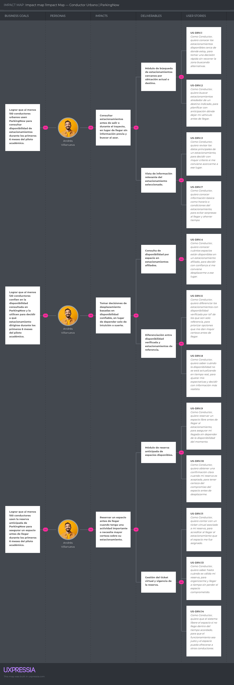
Nota. Elaboración propia (2026) en UXPressia.
Según la Figura 13, el mapa del conductor urbano se estructura sobre tres objetivos de negocio concretos. El primero busca incrementar el uso de la plataforma para consultar disponibilidad de estacionamientos durante el piloto académico. El segundo busca fortalecer la confianza del conductor en la información mostrada por el sistema, de modo que dicha información influya efectivamente en su decisión de desplazamiento. El tercero busca promover el uso de la reserva anticipada como mecanismo para reducir incertidumbre y asegurar un espacio antes de llegar al destino.
Los impactos esperados en este segmento se centran en que el conductor consulte opciones antes de salir o durante el trayecto, tome decisiones basadas en disponibilidad confiable y utilice la reserva anticipada cuando necesite mayor certeza sobre su estacionamiento. Estos cambios de comportamiento responden directamente a los pains identificados en las entrevistas y en el User Journey Map, donde la incertidumbre y la pérdida de tiempo aparecen como problemas recurrentes.
Para provocar dichos impactos, se definieron entregables como el módulo de búsqueda de estacionamientos cercanos, la vista de información relevante del estacionamiento, la consulta de disponibilidad por espacio, la diferenciación entre disponibilidad verificada y estacionamientos de referencia, el módulo de reserva anticipada y la gestión del ticket virtual con vigencia de reserva. Estos entregables se conectan con User Stories específicas del backlog, tales como US-DRV.1, US-DRV.2, US-DRV.3, US-DRV.4, US-DRV.5, US-DRV.7, US-DRV.8, US-DRV.9, US-DRV.10, US-DRV.11, US-DRV.13 y US-DRV.14, lo que permite mantener trazabilidad entre la meta de negocio, la necesidad del usuario y el requerimiento que posteriormente será implementado por el equipo.
Segmento objetivo: Administrador de estacionamiento independiente
El segundo mapa se orienta al User Persona Luis Ramírez Torres, representante del segmento de administradores de estacionamientos independientes. En este caso, el Impact Mapping se construye a partir de tres objetivos de negocio: promover la afiliación de estacionamientos al piloto, impulsar el uso activo de la plataforma para gestionar espacios y reservas, y facilitar la supervisión de eventos IoT y cambios operativos relevantes desde el panel web. Esta estructura responde a los hallazgos obtenidos en las entrevistas, donde se evidenció que los administradores operan con registros manuales, baja visibilidad remota y alta dependencia de su presencia física para mantener el control del negocio.
Figura 14
Impact Mapping del segmento administrador de estacionamiento independiente de ParkingNow

Nota. Elaboración propia (2026) en UXPressia.
Según la Figura 14, el mapa del administrador independiente se orienta a tres resultados de negocio concretos. El primero busca que más operadores afilien su estacionamiento a ParkingNow durante el piloto académico. El segundo busca que dichos administradores utilicen activamente la plataforma para gestionar sus espacios y reservas. El tercero busca que supervisen eventos IoT y cambios operativos relevantes desde el panel web, fortaleciendo el control del negocio sin depender de revisión presencial constante.
Los impactos definidos para este segmento buscan que el administrador afilie su estacionamiento y empiece a digitalizar su operación básica, monitoree ocupación y reservas desde el panel web sin depender de revisión presencial constante, y supervise cambios operativos relevantes desde la plataforma para reaccionar oportunamente sin revisar manualmente toda la operación. Estos impactos se alinean con los hallazgos del proceso de Needfinding, donde se identificó que los operadores pequeños valoran especialmente la simplicidad, la visibilidad remota y la reducción de tareas manuales.
Para responder a estos impactos, se plantearon entregables como el módulo de registro del estacionamiento, el módulo de configuración y registro de espacios, el panel de monitoreo del estado actual de los espacios, la vista de reservas activas e historial operativo, la vista de eventos IoT y estado de conexión del nodo, y la actualización automática de cambios relevantes con apoyo visual del local. La relación entre estos entregables y el backlog se expresa a través de User Stories como US-OWN.1, US-OWN.2, US-OWN.3, US-OWN.4, US-OWN.8, US-OWN.9, US-OWN.10, US-OWN.11, US-OWN.12, US-OWN.13 y US-OWN.14, reforzando la coherencia entre el objetivo de negocio, el cambio esperado en el comportamiento del usuario y las funcionalidades priorizadas para el MVP académico.
En conjunto, ambos mapas permiten evidenciar que el desarrollo de ParkingNow no responde únicamente a la implementación aislada de funcionalidades, sino a una lógica estratégica en la que cada entregable y cada User Story contribuyen explícitamente a objetivos de negocio concretos. De esta manera, el Impact Mapping consolida la trazabilidad entre el problema identificado, el valor esperado para cada segmento y las decisiones funcionales que estructuran la propuesta del producto.
En esta sección se presenta el Product Backlog de ParkingNow, entendido como la lista priorizada de User Stories que orienta el desarrollo incremental de la solución dentro del alcance del proyecto. Su construcción se realizó a partir del backlog integrado definido en la sección 3.1, considerando como criterio principal de ordenamiento el valor para el negocio, tal como exige la rúbrica del curso.
En ese sentido, las historias relacionadas con el Landing Page y con las funcionalidades centrales de valor para los segmentos objetivo fueron ubicadas al inicio del backlog, mientras que las historias de autenticación, soporte técnico, testing y exploración fueron ubicadas posteriormente según su aporte al desarrollo integral del producto. Para la estimación se utilizó la técnica de Planning Poker, asignando Story Points con la secuencia de Fibonacci 1, 2, 3, 5 y 8, considerando riesgo, complejidad y repetición.
A. URL del Product Backlog
Enlace público: https://parkingnow-backlog.atlassian.net/jira/software/projects/SCRUM/boards/1/backlog?atlOrigin=eyJpIjoiNTM4MTcxOWQyZmY0NDZiNzhiNDlmNzBmMzkyZDMxYjAiLCJwIjoiaiJ9
B. Captura del tablero del Product Backlog
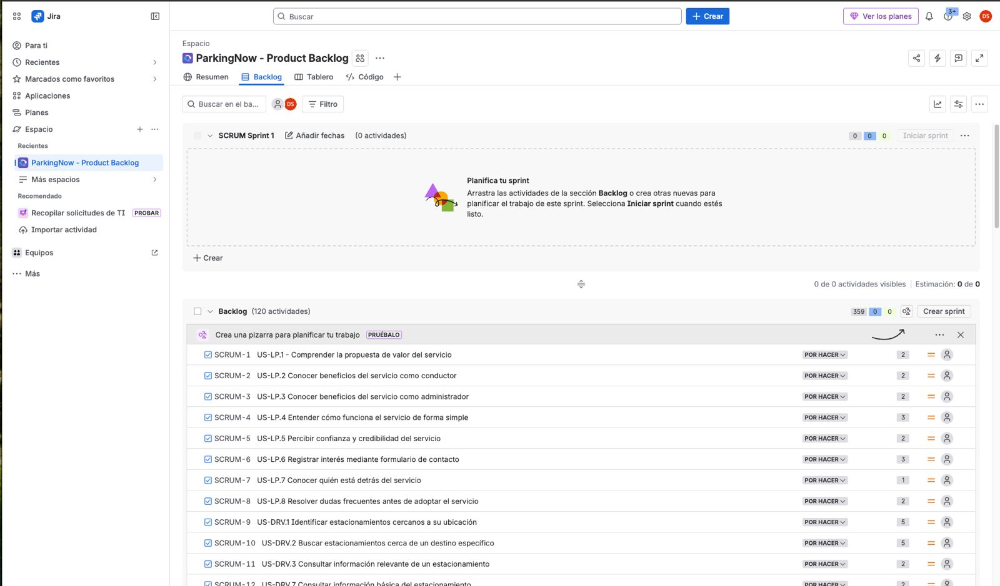
C. Listado del Product Backlog
| # Orden | User Story Id | Título | Descripción | Story Points (1 / 2 / 3 / 5 / 8) |
|---|---|---|---|---|
| 1 | US-LP.1 | Comprender la propuesta de valor del servicio | Como Visitante, quiero entender rápidamente qué ofrece ParkingNow, para decidir si el servicio se ajusta a mis necesidades de estacionamiento. | 2 |
| 2 | US-LP.2 | Conocer beneficios del servicio como conductor | Como Visitante interesado como conductor, quiero conocer los beneficios específicos para mi perfil, para evaluar si vale la pena instalar la aplicación móvil. | 2 |
| 3 | US-LP.3 | Conocer beneficios del servicio como administrador | Como Visitante interesado en afiliar su estacionamiento, quiero conocer los beneficios para administradores, para evaluar si el servicio responde a las necesidades operativas de mi negocio. | 2 |
| 4 | US-LP.4 | Entender cómo funciona el servicio de forma simple | Como Visitante, quiero comprender de manera sencilla cómo funciona el servicio, para reducir la incertidumbre antes de tomar una decisión. | 3 |
| 5 | US-LP.5 | Percibir confianza y credibilidad del servicio | Como Visitante, quiero identificar señales de confianza sobre el servicio, para sentirme más seguro antes de compartir datos o afiliar mi negocio. | 2 |
| 6 | US-LP.6 | Registrar interés mediante formulario de contacto | Como Visitante interesado, quiero dejar mis datos de contacto para recibir información adicional, para iniciar una posible relación con el servicio. | 3 |
| 7 | US-LP.7 | Conocer quién está detrás del servicio | Como Visitante, quiero saber quién desarrolla el servicio y con qué propósito, para valorar la seriedad de la iniciativa antes de confiar en la plataforma. | 1 |
| 8 | US-LP.8 | Resolver dudas frecuentes antes de adoptar el servicio | Como Visitante, quiero acceder a respuestas claras sobre las dudas más comunes, para tomar una decisión informada sin necesidad de solicitar contacto. | 2 |
| 9 | US-DRV.1 | Identificar estacionamientos cercanos a su ubicación | Como Conductor, quiero conocer los estacionamientos disponibles cerca de donde estoy, para tomar una decisión rápida sin recorrer la zona buscando alternativas. | 5 |
| 10 | US-DRV.2 | Buscar estacionamientos cerca de un destino específico | Como Conductor, quiero buscar estacionamientos alrededor de un destino indicado, para planificar con anticipación dónde dejar mi vehículo antes de llegar. | 5 |
| 11 | US-DRV.3 | Consultar información relevante de un estacionamiento | Como Conductor, quiero revisar los datos principales de un estacionamiento, para decidir con mayor criterio si me conviene acercarme a ese lugar. | 2 |
| 12 | US-DRV.7 | Consultar información básica del estacionamiento | Como Conductor, quiero conocer información básica como horario o condiciones del estacionamiento, para evitar sorpresas al llegar y ahorrar tiempo. | 2 |
| 13 | US-DRV.4 | Consultar disponibilidad por espacio en un estacionamiento afiliado | Como Conductor, quiero conocer cuántos espacios están disponibles en un estacionamiento afiliado, para decidir con confianza si me conviene desplazarme a ese lugar. | 3 |
| 14 | US-DRV.5 | Distinguir estacionamientos con disponibilidad verificada | Como Conductor, quiero diferenciar los estacionamientos con disponibilidad verificada por IoT de los que son solo referencia, para priorizar opciones que me dan mayor certeza antes de llegar. | 3 |
| 15 | US-DRV.6 | Filtrar resultados por estacionamientos con disponibilidad | Como Conductor, quiero acotar los resultados a estacionamientos con espacios disponibles, para reducir opciones poco útiles cuando necesito decidir con rapidez. | 2 |
| 16 | US-DRV.8 | Reconocer si un estacionamiento está sin conexión | Como Conductor, quiero saber cuándo la disponibilidad no se está actualizando en tiempo real, para ajustar mis expectativas y decidir con información más realista. | 3 |
| 17 | US-DRV.9 | Reservar un espacio disponible anticipadamente | Como Conductor, quiero reservar un espacio libre antes de llegar al estacionamiento, para asegurar mi llegada sin depender de la disponibilidad del momento. | 5 |
| 18 | US-DRV.10 | Recibir confirmación inmediata de la reserva | Como Conductor, quiero obtener una confirmación clara cuando mi reserva es aceptada, para tener certeza del compromiso del espacio antes de desplazarme. | 3 |
| 19 | US-DRV.11 | Obtener un ticket virtual de la reserva | Como Conductor, quiero contar con un ticket virtual asociado a mi reserva, para acreditar al llegar al estacionamiento que el espacio me fue asignado. | 3 |
| 20 | US-DRV.12 | Consultar el identificador único de su reserva | Como Conductor, quiero identificar de forma única mi reserva, para poder referirme a ella con claridad al llegar al estacionamiento. | 1 |
| 21 | US-DRV.13 | Conocer el tiempo límite para consumir su reserva | Como Conductor, quiero saber hasta cuándo es válida mi reserva, para organizarme y llegar a tiempo sin perder el espacio comprometido. | 2 |
| 22 | US-DRV.14 | Expirar automáticamente la reserva si no se consume a tiempo | Como Conductor, quiero que el sistema libere el espacio si no llego dentro del tiempo acordado, para que el funcionamiento sea justo y el espacio pueda ofrecerse a otros conductores. | 5 |
| 23 | US-DRV.15 | Cancelar una reserva antes de utilizarla | Como Conductor, quiero cancelar mi reserva cuando mis planes cambien, para liberar el espacio a tiempo y no comprometerme innecesariamente. | 3 |
| 24 | US-DRV.16 | Reconocer que su reserva fue consumida al ocupar el espacio | Como Conductor, quiero saber que mi reserva se marcó como consumida cuando ocupo el espacio, para confirmar que mi llegada fue reconocida correctamente por el sistema. | 3 |
| 25 | US-DRV.17 | Consultar el estado actualizado de su reserva | Como Conductor, quiero conocer el estado actual de mi reserva activa, para tener certeza durante mi trayecto de que el espacio continúa asignado a mí. | 3 |
| 26 | US-DRV.18 | Acceder al historial de reservas realizadas | Como Conductor, quiero revisar las reservas que he realizado previamente, para tener referencia de los estacionamientos que ya he utilizado. | 2 |
| 27 | US-DRV.19 | Revisar el detalle de una reserva pasada | Como Conductor, quiero consultar los datos específicos de una reserva anterior, para recordar en qué estacionamiento estuve y bajo qué condiciones usé el servicio. | 2 |
| 28 | US-DRV.20 | Identificar rápidamente sus reservas activas | Como Conductor, quiero reconocer cuáles de mis reservas están activas, para saber si actualmente tengo un espacio comprometido sin revisar cada registro. | 2 |
| 29 | US-DRV.21 | Comprender el motivo de cierre de una reserva | Como Conductor, quiero saber por qué una reserva finalizó, para entender lo ocurrido sin solicitar información al administrador. | 2 |
| 30 | US-DRV.22 | Ser informado cuando el espacio reservado pierde sincronización | Como Conductor, quiero enterarme si el espacio que reservé deja de reportar su estado, para ajustar mis expectativas antes de llegar al estacionamiento. | 3 |
| 31 | US-OWN.1 | Registrar su estacionamiento en la plataforma | Como Administrador, quiero dar de alta mi estacionamiento dentro del servicio, para comenzar a gestionar mi operación desde el panel web. | 3 |
| 32 | US-OWN.2 | Registrar la ubicación del estacionamiento | Como Administrador, quiero registrar la ubicación precisa de mi estacionamiento, para que los conductores puedan encontrarlo correctamente en la plataforma. | 2 |
| 33 | US-OWN.3 | Registrar los espacios del estacionamiento | Como Administrador, quiero configurar los espacios disponibles de mi estacionamiento, para que el sistema los reconozca y pueda monitorearlos individualmente. | 3 |
| 34 | US-OWN.4 | Asignar un identificador claro a cada espacio | Como Administrador, quiero asociar un identificador reconocible a cada espacio, para diferenciar fácilmente los espacios al operar y revisar su estado. | 2 |
| 35 | US-OWN.5 | Actualizar información del estacionamiento | Como Administrador, quiero modificar los datos de mi estacionamiento cuando sea necesario, para mantener actualizada la información que consultan los conductores. | 2 |
| 36 | US-OWN.6 | Desactivar temporalmente un espacio | Como Administrador, quiero marcar un espacio como no disponible temporalmente, para gestionar correctamente situaciones como mantenimiento sin eliminar su configuración. | 2 |
| 37 | US-OWN.7 | Asociar el nodo IoT a su estacionamiento | Como Administrador, quiero vincular el nodo IoT físico a mi estacionamiento, para que los eventos detectados por sus sensores se reflejen correctamente en los espacios. | 3 |
| 38 | US-OWN.8 | Conocer el estado actual de cada espacio | Como Administrador, quiero conocer en qué estado se encuentra cada espacio de mi estacionamiento, para gestionar la operación sin depender de revisión presencial constante. | 3 |
| 39 | US-OWN.9 | Monitorear las reservas activas del estacionamiento | Como Administrador, quiero saber qué reservas están vigentes en mi local, para anticipar la llegada de conductores y ordenar la operación. | 3 |
| 40 | US-OWN.10 | Consultar el historial de reservas del estacionamiento | Como Administrador, quiero revisar las reservas que han ocurrido en mi local, para tener trazabilidad del uso del servicio sin depender de registros manuales. | 2 |
| 41 | US-OWN.11 | Revisar eventos IoT generados por el nodo | Como Administrador, quiero acceder a los eventos generados por el nodo IoT, para contar con trazabilidad operativa de lo que ocurre con los espacios de mi local. | 3 |
| 42 | US-OWN.12 | Conocer el estado de conexión del nodo IoT | Como Administrador, quiero saber si el nodo IoT de mi estacionamiento está reportando normalmente, para reaccionar oportunamente ante incidentes operativos. | 2 |
| 43 | US-OWN.13 | Enterarse de cambios relevantes sin revisión manual permanente | Como Administrador, quiero enterarme de cambios importantes sin estar revisando el panel todo el tiempo, para reducir la carga operativa y reaccionar solo cuando sea necesario. | 3 |
| 44 | US-OWN.14 | Apoyar la supervisión con una vista simple de cámara local | Como Administrador, quiero contar con una vista visual simple del estacionamiento, para complementar la información de ocupación cuando necesite confirmar lo que ocurre. | 5 |
| 45 | US-OWN.15 | Comprender discrepancias entre el estado lógico y el físico | Como Administrador, quiero entender qué sucede cuando un espacio reservado aparece como ocupado físicamente antes de tiempo, para reaccionar con criterio frente a estas situaciones. | 3 |
| 46 | TS-API.1 | Servicio de consulta de estacionamientos y espacios | Como Developer, quiero contar con un servicio que exponga la información de estacionamientos y sus espacios, para que los clientes web y móvil puedan presentarla de manera uniforme. | 5 |
| 47 | TS-API.2 | Servicio de gestión de reservas | Como Developer, quiero disponer de un servicio que gestione el ciclo de vida de las reservas, para mantener integridad operativa entre la aplicación móvil, el panel web y la información IoT. | 8 |
| 48 | TS-API.3 | Servicio de gestión de estacionamientos por el administrador | Como Developer, quiero contar con un servicio que permita al administrador gestionar su estacionamiento y sus espacios, para que las operaciones de alta y actualización se realicen de forma controlada. | 5 |
| 49 | TS-API.5 | Validación consistente de solicitudes entrantes | Como Developer, quiero validar de forma consistente las solicitudes del backend, para rechazar datos inválidos antes de afectar el dominio del sistema. | 3 |
| 50 | TS-API.6 | Manejo uniforme de errores del backend | Como Developer, quiero que el backend maneje los errores de manera uniforme, para que los clientes puedan interpretarlos y presentarlos de forma consistente. | 2 |
| 51 | TS-API.7 | Servicio de consulta de historial de reservas | Como Developer, quiero exponer un servicio de consulta de historial de reservas, para que el conductor y el administrador accedan a su información histórica de forma ordenada. | 3 |
| 52 | TS-IOT.1 | Ingesta de eventos IoT del nodo | Como Developer, quiero que la IoT API reciba de forma controlada los eventos enviados por el nodo físico, para reflejar de manera confiable los cambios detectados en los espacios. | 5 |
| 53 | TS-IOT.4 | Aplicación de la regla de precedencia de estados | Como Developer, quiero aplicar la regla de precedencia que prioriza el estado físico sobre el lógico, para que el estado visible del espacio refleje coherentemente la realidad del estacionamiento. | 5 |
| 54 | TS-IOT.6 | Exposición del estado consolidado por espacio | Como Developer, quiero exponer un estado consolidado por espacio, para que los clientes presenten información coherente sin calcular la regla de precedencia por su cuenta. | 5 |
| 55 | TS-IOT.7 | Comportamiento ante desconexión del nodo | Como Developer, quiero que el sistema maneje de forma predecible la desconexión del nodo, para preservar coherencia en la experiencia del usuario ante fallas de conectividad. | 3 |
| 56 | TS-IOT.3 | Registro de heartbeat del nodo IoT | Como Developer, quiero registrar el pulso de vida del nodo IoT, para saber si el nodo continúa operando y reportando al sistema. | 2 |
| 57 | TS-IOT.5 | Persistencia del historial de eventos IoT | Como Developer, quiero que los eventos IoT queden registrados en el historial del sistema, para habilitar trazabilidad y validaciones posteriores. | 3 |
| 58 | TS-CLD.1 | Propagación en tiempo real de cambios de estado | Como Developer, quiero que los cambios de estado se propaguen en tiempo real a los clientes conectados, para preservar coherencia en la experiencia de conductores y administradores. | 5 |
| 59 | TS-CLD.2 | Sincronización consistente entre Core API e IoT API | Como Developer, quiero que la Core API y la IoT API mantengan información consistente entre sí, para que los clientes observen un estado único y coherente del sistema. | 5 |
| 60 | TS-CLD.5 | Mantenimiento del último estado conocido | Como Developer, quiero que el sistema conserve el último estado conocido por espacio, para garantizar que los clientes reciban información coherente ante pérdidas de conexión. | 3 |
| 61 | TS-CLD.7 | Tolerancia a fallas puntuales de conectividad | Como Developer, quiero que el sistema tolere fallas puntuales de conectividad entre componentes, para evitar que un incidente aislado degrade toda la experiencia del usuario. | 3 |
| 62 | TS-CLD.6 | Observabilidad básica de los servicios | Como Developer, quiero contar con observabilidad básica sobre los servicios, para identificar tempranamente problemas operativos sin afectar a los usuarios. | 2 |
| 63 | TS-CLD.4 | Configuración de servicios por entorno | Como Developer, quiero manejar configuración diferenciada por entorno, para separar operación de desarrollo y pruebas de la operación principal. | 2 |
| 64 | TS-CLD.3 | Despliegue controlado de los servicios | Como Developer, quiero contar con un mecanismo controlado de despliegue de los servicios, para publicar actualizaciones de forma segura y reversible. | 3 |
| 65 | TS-WEB.1 | Estructura base del panel del administrador | Como Developer, quiero contar con una estructura base del panel web, para organizar coherentemente las vistas destinadas al administrador. | 2 |
| 66 | TS-WEB.2 | Consumo consistente de servicios del backend | Como Developer, quiero que el cliente web consuma los servicios del backend de forma consistente, para simplificar el mantenimiento y reducir inconsistencias en la experiencia. | 3 |
| 67 | TS-WEB.3 | Actualización automática de vistas operativas | Como Developer, quiero que las vistas operativas se actualicen automáticamente ante cambios relevantes, para que el administrador no deba refrescar manualmente para ver novedades. | 3 |
| 68 | TS-WEB.4 | Manejo de estados de carga y error | Como Developer, quiero que el cliente web maneje explícitamente los estados de carga y error, para que el administrador comprenda qué ocurre con la información mostrada. | 2 |
| 69 | TS-MOB.1 | Estructura base de navegación de la app móvil | Como Developer, quiero contar con una estructura base de navegación en la app móvil, para organizar coherentemente las experiencias del conductor. | 2 |
| 70 | TS-MOB.2 | Consumo consistente de servicios del backend desde la app | Como Developer, quiero que la app móvil consuma los servicios del backend de forma consistente, para ofrecer una experiencia predecible al conductor. | 3 |
| 71 | TS-MOB.3 | Actualización automática del estado de reservas activas | Como Developer, quiero que la app móvil refleje automáticamente cambios en el estado de la reserva del conductor, para que el usuario reciba información coherente sin acción manual. | 3 |
| 72 | TS-MOB.4 | Manejo de estados de carga y error en la app móvil | Como Developer, quiero que la app exprese con claridad los estados de carga y error, para que el conductor comprenda qué ocurre con la información solicitada. | 2 |
| 73 | TS-MOB.5 | Gestión del permiso de ubicación | Como Developer, quiero gestionar correctamente el permiso de ubicación del dispositivo, para habilitar funcionalidades dependientes sin degradar la experiencia cuando el permiso no está concedido. | 2 |
| 74 | TS-EXT.1 | Integración con OpenStreetMap como referencia | Como Developer, quiero integrar información de OpenStreetMap para poblar el mapa inicial, para ofrecer utilidad al conductor desde el primer uso. | 3 |
| 75 | TS-EXT.2 | Diferenciar afiliados de referencias externas | Como Developer, quiero diferenciar técnicamente estacionamientos afiliados de los externos de referencia, para garantizar que los clientes traten cada caso de forma adecuada. | 2 |
| 76 | TS-EXT.5 | Normalización de datos externos | Como Developer, quiero normalizar los datos obtenidos desde fuentes externas, para integrarlos de forma coherente con el modelo interno del sistema. | 2 |
| 77 | TS-EXT.4 | Caché básica de información externa | Como Developer, quiero reutilizar información obtenida recientemente de integraciones externas, para reducir consultas innecesarias y mejorar el tiempo de respuesta. | 2 |
| 78 | TS-EXT.3 | Manejo de errores de integraciones externas | Como Developer, quiero manejar adecuadamente los errores de integraciones externas, para que la experiencia del usuario no se degrade ante fallas ajenas al sistema central. | 2 |
| 79 | TS-EMB.1 | Lectura periódica del estado del sensor | Como Developer, quiero que el firmware del ESP32 lea periódicamente el estado del sensor asociado a cada espacio, para detectar de forma confiable los cambios de ocupación. | 3 |
| 80 | TS-EMB.2 | Lógica local de estabilización del estado detectado | Como Developer, quiero que el firmware aplique una lógica de estabilización antes de considerar un cambio de estado, para reducir falsos positivos por lecturas transitorias. | 5 |
| 81 | TS-EMB.3 | Envío de eventos del nodo al backend | Como Developer, quiero que el nodo envíe eventos confiables al backend cuando detecte cambios relevantes, para mantener sincronizada la información del espacio. | 5 |
| 82 | TS-EMB.4 | Emisión de heartbeat del nodo | Como Developer, quiero que el nodo emita heartbeat periódico al backend, para permitir detectar oportunamente pérdidas de conexión del dispositivo. | 2 |
| 83 | TS-EMB.5 | Actuación local mediante indicadores visuales | Como Developer, quiero que el nodo active indicadores físicos locales alineados con el estado del espacio, para ofrecer referencia operativa visible dentro del estacionamiento. | 2 |
| 84 | TS-EMB.6 | Reconexión automática de red | Como Developer, quiero que el nodo gestione automáticamente la reconexión cuando pierda red, para reducir la intervención manual sobre el dispositivo. | 3 |
| 85 | TS-EMB.7 | Configuración inicial del nodo | Como Developer, quiero que el nodo admita una configuración inicial controlada, para asociarse correctamente a un estacionamiento sin cambios complejos en campo. | 2 |
| 86 | TS-EDG.1 | Procesamiento edge del estado del espacio | Como Developer, quiero que el nodo procese localmente el estado del espacio antes de enviarlo al backend, para reducir eventos innecesarios y mejorar la calidad de la información reportada. | 3 |
| 87 | TS-EDG.2 | Persistencia temporal local en el nodo | Como Developer, quiero que el nodo guarde localmente sus eventos cuando el backend no esté disponible, para evitar perder información durante una caída momentánea de conexión. | 5 |
| 88 | TS-EDG.3 | Reenvío de eventos almacenados tras reconexión | Como Developer, quiero que el nodo reenvíe los eventos guardados cuando recupera conexión, para mantener la trazabilidad del historial sin intervención manual. | 5 |
| 89 | TS-EDG.4 | Orden de envío de eventos pendientes | Como Developer, quiero que el nodo envíe sus eventos pendientes en el orden en que fueron generados, para que el historial del sistema mantenga coherencia cronológica. | 2 |
| 90 | TS-EDG.5 | Evitar duplicados en el reenvío | Como Developer, quiero que el nodo no reenvíe eventos ya confirmados por el backend, para que el historial no contenga cambios ficticios. | 3 |
| 91 | TS-EDG.6 | Sincronización tras recuperación de conexión | Como Developer, quiero que el nodo sincronice su estado con el backend al recuperar conexión, para restaurar una visión coherente del espacio en el sistema. | 3 |
| 92 | TS-TST.1 | Pruebas unitarias de servicios del backend | Como Developer, quiero contar con pruebas unitarias de los servicios del backend, para asegurar el comportamiento esperado de la lógica central de forma aislada. | 3 |
| 93 | TS-TST.2 | Pruebas de integración entre Core API e IoT API | Como Developer, quiero validar la integración entre la Core API y la IoT API, para asegurar que el estado del sistema se mantenga coherente al atravesar ambos servicios. | 5 |
| 94 | TS-TST.3 | Validación de la regla de precedencia de estados | Como Developer, quiero validar la regla de precedencia del estado del espacio, para garantizar que la ocupación física prevalece sobre la reserva cuando ambas coexisten. | 3 |
| 95 | TS-TST.4 | Validación de sincronización en tiempo real | Como Developer, quiero validar que los cambios se propagan a los clientes en tiempo real, para asegurar coherencia en la experiencia del usuario ante actualizaciones del sistema. | 5 |
| 96 | TS-TST.5 | Validación del comportamiento ante desconexión del nodo | Como Developer, quiero validar cómo se comporta el sistema ante desconexión del nodo IoT, para asegurar que los usuarios reciben información coherente en ese escenario. | 3 |
| 97 | TS-TST.6 | Validación del reenvío de eventos almacenados | Como Developer, quiero validar que el nodo reenvía correctamente los eventos almacenados al recuperar conexión, para asegurar integridad del historial operativo. | 3 |
| 98 | TS-TST.7 | Validación end-to-end del flujo principal | Como Developer, quiero validar de extremo a extremo el flujo central del sistema, para asegurar coherencia en la experiencia completa del conductor. | 8 |
| 99 | TS-TST.8 | Validación de consistencia entre estado físico, lógico y mostrado | Como Developer, quiero validar que el estado físico, el lógico y el mostrado son coherentes entre sí, para asegurar la confiabilidad de la información en toda la plataforma. | 5 |
| 100 | TS-TST.10 | Validación del ciclo de vida de la reserva y ticket virtual | Como Developer, quiero validar el flujo del ticket virtual y la expiración automática de reservas, para garantizar el correcto ciclo de vida de las reservas. | 3 |
| 101 | SP-01 | Investigación sobre confiabilidad del sensor ultrasónico | Como Developer, quiero investigar la confiabilidad del sensor ultrasónico para la detección de ocupación, para decidir con base en evidencia cómo aplicarlo dentro del nodo IoT del proyecto. | 3 |
| 102 | SP-02 | Investigación sobre estrategia de reconexión del nodo | Como Developer, quiero investigar distintas estrategias de reconexión del nodo ante caídas de conectividad, para elegir la opción más robusta dentro del contexto del proyecto. | 3 |
| 103 | SP-03 | Investigación sobre viabilidad de cámara local | Como Developer, quiero investigar la viabilidad de una vista simple de cámara local para el administrador, para determinar si es realista incorporarla dentro del alcance del proyecto. | 5 |
| 104 | SP-04 | Investigación sobre persistencia local en el ESP32 | Como Developer, quiero investigar alternativas de persistencia local temporal en el nodo, para definir cómo conservar eventos ante interrupciones de conectividad. | 3 |
| 105 | SP-05 | Investigación sobre comportamiento realtime entre clientes y backend | Como Developer, quiero investigar el comportamiento en tiempo real entre clientes y backend en escenarios representativos, para anticipar riesgos de consistencia y preparar ajustes oportunos. | 5 |
| 106 | US-WEB.1 | Registrarse como administrador en el panel web | Como Administrador, quiero crear mi cuenta en el panel web, para acceder a las funcionalidades de gestión de mi estacionamiento. | 3 |
| 107 | US-MOB.1 | Registrarse como conductor en la app móvil | Como Conductor, quiero crear mi cuenta desde la aplicación móvil, para acceder a las funcionalidades de búsqueda y reserva. | 3 |
| 108 | US-WEB.2 | Iniciar sesión en el panel web | Como Administrador, quiero autenticarme en el panel web con mis credenciales, para acceder a la información y funcionalidades asociadas a mi estacionamiento. | 2 |
| 109 | US-MOB.2 | Iniciar sesión en la aplicación móvil | Como Conductor, quiero autenticarme rápidamente en la aplicación, para reservar un espacio con la menor fricción posible. | 2 |
| 110 | US-WEB.4 | Recuperar acceso ante olvido de credenciales | Como Administrador, quiero recuperar el acceso a mi cuenta si olvido mis credenciales, para no perder la gestión de mi estacionamiento cuando no recuerdo mi contraseña. | 2 |
| 111 | US-MOB.4 | Mantener su sesión activa entre usos normales | Como Conductor, quiero que mi sesión se conserve entre usos regulares de la aplicación, para no tener que autenticarme constantemente al abrir la app. | 2 |
| 112 | US-WEB.3 | Cerrar sesión de forma segura | Como Administrador, quiero cerrar mi sesión cuando lo decida, para evitar que otras personas accedan a mi información desde el mismo equipo. | 1 |
| 113 | US-MOB.3 | Cerrar sesión desde la aplicación móvil | Como Conductor, quiero cerrar mi sesión desde mi dispositivo, para evitar que terceros usen mi cuenta si comparto el equipo o lo pierdo. | 1 |
| 114 | US-WEB.5 | Administrar información básica de perfil | Como Administrador, quiero mantener actualizada la información básica de mi cuenta, para que la plataforma refleje datos vigentes de contacto. | 1 |
| 115 | US-MOB.5 | Actualizar información básica de su perfil desde la app | Como Conductor, quiero mantener al día mi información básica desde la aplicación, para que mis datos en la plataforma sigan siendo útiles y actualizados. | 1 |
| 116 | TS-API.4 | Servicio de autenticación de usuarios | Como Developer, quiero contar con un servicio de autenticación consistente, para que los clientes web y móvil verifiquen identidad bajo reglas uniformes. | 3 |
| 117 | TS-API.8 | Control de acceso por roles | Como Developer, quiero que el backend aplique control de acceso según el rol del usuario, para proteger funcionalidades sensibles de operaciones no autorizadas. | 3 |
| 118 | TS-IOT.2 | Validación de origen del evento IoT | Como Developer, quiero verificar que los eventos IoT provienen de un nodo autorizado, para impedir que datos externos afecten el estado real del sistema. | 3 |
| 119 | TS-WEB.5 | Protección del acceso a información sensible | Como Developer, quiero que el cliente web proteja la información sensible del administrador, para evitar que se exponga a usuarios no autorizados en el mismo dispositivo. | 2 |
| 120 | TS-TST.9 | Validación de autenticación y autorización | Como Developer, quiero validar los mecanismos de autenticación y autorización, para asegurar que el acceso a recursos sensibles esté correctamente controlado. | 3 |